![Warehouse Pro]()
Как пользоваться этой книгой
Warehouse Pro — учёт дистрибьютора: поле, склад, долги и зарплата в одной системе. Агент оформляет заказ у прилавка с телефона, склад собирает его по списку с партиями, курьер отдаёт товар и принимает деньги, а директор в тот же момент видит выручку, остаток и долги. Книга написана для владельца и его команды: за пять дней запустить работу и с первой недели получать честные цифры.
Часть 1 — план внедрения по дням: каждый день расписан как инструкция — где в меню, что нажать, что увидеть и чем проверить в конце дня. Часть 2 — рабочий день каждой роли с настоящими снимками экранов: сначала веб для офиса, затем телефон для поля. Часть 3 — как система считает остаток, долг и зарплату: это стоит прочитать владельцу и бухгалтеру. Часть 4 — что делать, если что-то пошло не так.
| Обозначение | Что значит |
|---|---|
| «Заказы» → «Новый заказ» | Пункт меню слева, затем кнопка на экране — названия даны так, как они написаны в программе |
| Шаги 1, 2, 3… | Делайте по порядку: один шаг — одно действие и то, что после него увидите |
| ① ② ③ на снимке | Выноски: цифры на снимке соответствуют подписям под ним |
| Совет | Как делают опытные команды — не обязательно, но экономит время |
| Внимание | Действие, которое влияет на деньги или остаток и которое трудно отменить |
| Проверьте | Чек-лист в конце шага или дня: пока не сходится — дальше не идите |
Снимки сделаны с настоящей программы на демонстрационной организации «Demo UZ». У вас будут ваши магазины и товары, но кнопки и экраны те же. Часть снимков в Части 1 сделана из-под оператора: у директора те же экраны, только меню слева длиннее. Язык интерфейса — русский или узбекский — переключается в любой момент: в вебе внизу меню («РУС» / «UZB»), на телефоне в профиле.
Часть 1. Внедрение за пять дней
План рассчитан на организацию с 3–15 агентами и одним складом. Каждый день заканчивается проверкой: если она проходит, следующий день можно начинать. Всё делается в вебе директором или оператором; телефон подключается на третий день. Порядок дней не случайный: без товаров и остатка нельзя принять заказ, без магазинов и людей — некому его принять, без листа и курьера деньги не дойдут до отчёта.
| День | Что делаем | Кто | Проверка в конце дня |
|---|---|---|---|
| 1 | Компания, склад, товары, стартовый остаток | Директор | На «Складе» все товары с правильным «Доступно» |
| 2 | Магазины, территории, сотрудники и роли | Директор, оператор | Каждый сотрудник вошёл и увидел свой экран |
| 3 | Поле: телефоны агентов, план визитов, первые заказы | Супервайзер, агенты | Заказ агента появился в «Заказах» у оператора |
| 4 | Склад и доставка: лист, сборка, курьер, деньги | Оператор, курьер | Первый заказ прошёл путь до «Доставлен», деньги и долг сошлись |
| 5 | Контроль: главная, отчёты, долги, P&L, зарплата, аудит | Директор | Директор ответил на пять вопросов дня с первого экрана |
День 1. Регистрация
Зачем: регистрация создаёт организацию, учётную запись директора и основной склад — то, к чему дальше привязываются остаток и деньги. Это пять минут.
- Откройте страницу регистрации: «Ваше имя», «Название компании», Email, «Пароль (мин. 8 символов)» → «Зарегистрироваться». Этот e-mail становится логином директора — он же будет получать письма о копиях базы и оплате.
- Откроется «Главная» с нулями — так и должно быть. Система уже создала склад «Основной склад» (с него продают) и включила пробный период 14 дней. Переименовать склад: «Настройки» → «Склады» → значок «Редактировать склад» → «Название», «Адрес», «Город» → «Сохранить».
День 1. «Настройки»: компания и склады
Зачем: реквизиты печатаются на каждой накладной, валюта определяет, в чём считаются цены, долги и зарплата, а порог скидки и точка заказа — две границы, которые потом берегут деньги без вашего участия.
- «Настройки» → «Компания»: «Название компании», «Адрес», «ИНН», «Директор», «Телефон». Эти поля попадают в накладные и счета.
- Там же «Валюта» — выберите «UZS — Узбекский сум» (или USD / RUB). В ней будут считаться цены, долги и зарплата; менять её после первых заказов — значит пересчитывать всё руками. Решите сейчас.
- «Банковские реквизиты»: «Банк», «Расчётный счёт», «МФО» — для счетов на оплату. «Загрузить логотип» — он встанет в шапку документов.
- «Порог скидки для полевых сотрудников, % (пусто — без порога)»: скидка агента выше порога не пройдёт сама — заказ встанет в «Ожидает», и оператор решит.
- «Точка заказа для новых товаров (пусто — 10)»: ниже этого остатка система напомнит дозаказать. Для отдельного товара порог меняется в его карточке.
- «Сохранить». Затем «Настройки» → «Склады»: у склада «Основной склад» стоит метка «Основной». Дополнительные склады — «Добавить склад» → «Название», «Адрес», «Город» → «Добавить» — нужны только для хранения и перемещений; продают только с основного.
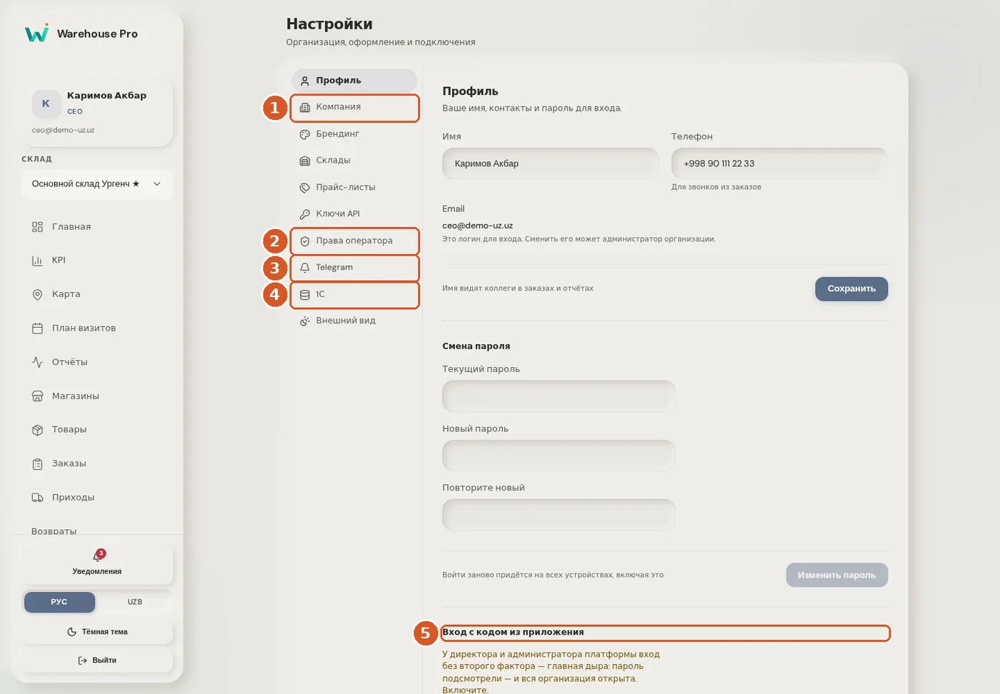
День 1. «Товары»: загрузка каталога
Зачем: заказ можно принять только на товар из каталога. Цена продажи даёт выручку, себестоимость — маржу в P&L, штрих-код — сканер на приходе и сборке, упаковка — счёт коробками у прилавка.
- «Товары» → «Импорт» → «Скачать шаблон». Откроется Excel-файл с колонками: «Код», «Штрихкод», «Название», «Категория», «Себестоимость (сум)», «Цена продажи (сум)», «Ед. измерения», «Вес (кг)», «Мин. остаток», «Остаток на складе», «Описание», «Фото URL».
- Заполните строки. Обязательны код, название и цена продажи; себестоимость — чтобы P&L считал маржу; «Ед. измерения»: kg, l, pcs (штуки), box, pack. Код у каждого товара свой — по нему потом ищут и сканируют.
- Перетащите файл в окно импорта или нажмите на область «или нажмите для выбора». Система покажет первые строки и ошибки — исправьте в файле и загрузите снова, ничего ещё не записано.
- «Импортировать N строк» → «Готово». Товары появились в списке; счётчик «ВСЕГО ТОВАРОВ» вверху совпадает с числом строк в файле.
- Единичный товар — «Добавить»: «Код *», «Штрих-код (необязательно)», «Название *», «Категория», «Себестоимость», «Цена продажи *», «Масса 1 ед. в кг (ящик=8)», «Порог дозаказа», «В упаковке, ед. (12)», «Название упаковки (коробка)», «Описание» → «Сохранить».
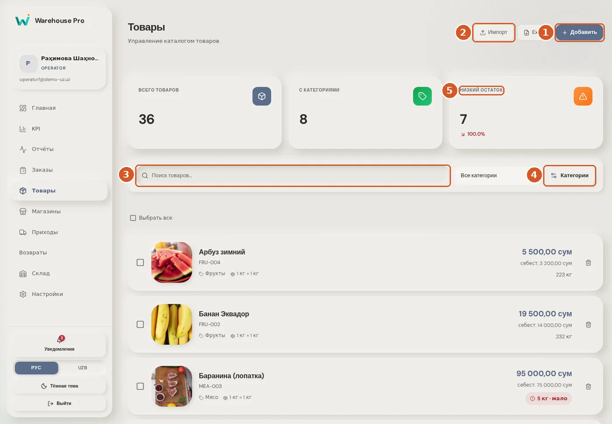
День 1. «Приходы»: стартовый остаток
Зачем: остаток появляется только через приход. Каждая строка прихода — партия со сроком годности; по ним склад потом собирает заказы «раньше сгорает — раньше уходит» (FEFO), а директор видит, что скоро сгорит.
- Пересчитайте полки. Нужны фактические количества по каждому товару, а для продуктов — партия и срок годности с этикетки.
- «Приходы» → «Новый приход». «Данные машины» и «Дата и расходы» для стартового остатка оставьте как есть (дата подставится сегодняшняя); «Поставщик и долг» — «Без поставщика» (иначе система запишет вам долг поставщику).
- Строка товара: «Выберите товар…» → «Кол-во» → «Себестоимость» (цена закупки за единицу) → «Партия» → «Годен до». Следующий товар — «Добавить товар». Со сканером быстрее: курсор в «Штрих-код + Enter», каждый скан добавляет единицу.
- В «Примечаниях» напишите «стартовый остаток» — через год это объяснит, откуда взялись цифры.
- Внизу формы: «Сохранить и завершить». Остаток на «Складе» изменится сразу. Просто «Сохранить» — черновик: остаток не изменится, приход останется в статусе «Ожидает»; завершить его можно позже из списка: «Разгрузка» → «Завершить».
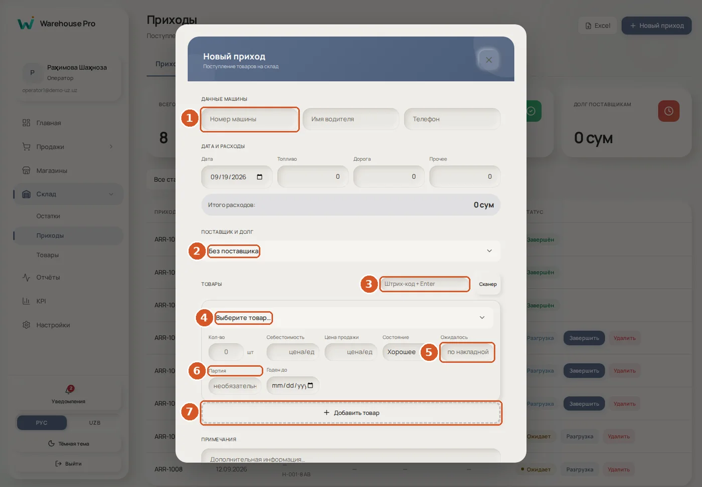
День 1. Проверка: «Склад»
Зачем: «Склад» — единственное место, где остаток показан так, как его видит агент у прилавка: «Доступно» = «Всего» минус «Резерв» под уже принятые заказы. Если здесь цифры не сходятся с полками, все заказы завтра будут приняты на воздух.
- «Склад» → вкладка «Остатки». Сверху — «ПОЗИЦИЙ», «ВСЕГО КГ», «СТОИМОСТЬ СКЛАДА» (по себестоимости), «МЕРТВЫЙ СТОК», «МАЛО СТОКА».
- Пройдите по списку: «Доступно» у каждого товара равно тому, что на полке. «Резерв» в день 1 — ноль. Красные строки — ниже порога: либо дозакажите, либо поправьте «Порог дозаказа» в карточке товара.
- Ошиблись в количестве — «Скорректировать» в строке: «ТИП ОПЕРАЦИИ», «КОЛИЧЕСТВО», «ПРИМЕЧАНИЕ» (причина) → «Применить». Корректировка попадает в «Аудит-лог» — это нормально, так и задумано.
- Много расхождений — вкладка «Инвентаризация» → «Новая инвентаризация»: система снимет остатки на этот момент, вы считаете полки (руками или «Штрих-код + Enter» / «Сканер») → «Применить» — все разницы проводятся одним документом.

- «Настройки» → «Компания»: валюта, реквизиты, порог скидки и точка заказа заполнены
- Все товары загружены; у продаваемых есть цена продажи, себестоимость и единица
- Приход стартового остатка завершён — статус «Завершён», не «Ожидает»
- «Склад» → «Остатки»: «Доступно» совпадает с полками, «Резерв» — ноль
День 2. «Магазины»: точки и территории
Зачем: магазин — это тот, кто должен вам деньги. Стартовый долг и кредитный лимит заводятся здесь, и с этого дня система ведёт долг сама: каждая доставка добавляет, каждая оплата уменьшает. Территория — маршрут агента, по ней супервайзер расставит план на месяц.
- «Магазины» → «Импорт» → «Скачать шаблон». Колонки: «Название», «Владелец», «Телефон», «Город», «Район», «Адрес», «Долг», «Широта», «Долгота», «Территория», «Примечания».
- «Долг» — сколько магазин должен вам на сегодня по тетради. Это единственный момент, когда долг вводится руками: дальше он считается по доставкам и оплатам. «Территория» — название; если такой ещё нет, импорт её создаст.
- Загрузите файл → проверьте предпросмотр → «Импортировать N строк». Сверху «ВСЕГО МАГАЗИНОВ» и «ОБЩИЙ ДОЛГ» должны совпасть с вашей тетрадью.
- Единичный магазин — «Добавить»: «Название *», «Владелец», «Телефон», «Город», «Район», «Адрес», «Telegram ссылка (для GPS)» — вставьте ссылку на геопозицию из Telegram, координаты подставятся сами; «— Агент —», «— Территория —» → «Сохранить».
- Территории: «Территории» (кнопка справа вверху) → «Добавить территорию» — название и цвет; или «Из магазинов» → «По городам» / «По районам» — система соберёт территории из уже загруженных адресов.
- Кредитный лимит — в карточке магазина: откройте магазин → «Изменить» → «Кредитный лимит (пусто — без лимита)» → «Сохранить». Заказ в долг сверх лимита у агента не пройдёт: система откажет с сообщением о превышении — агент принимает оплату или офис поднимает лимит.
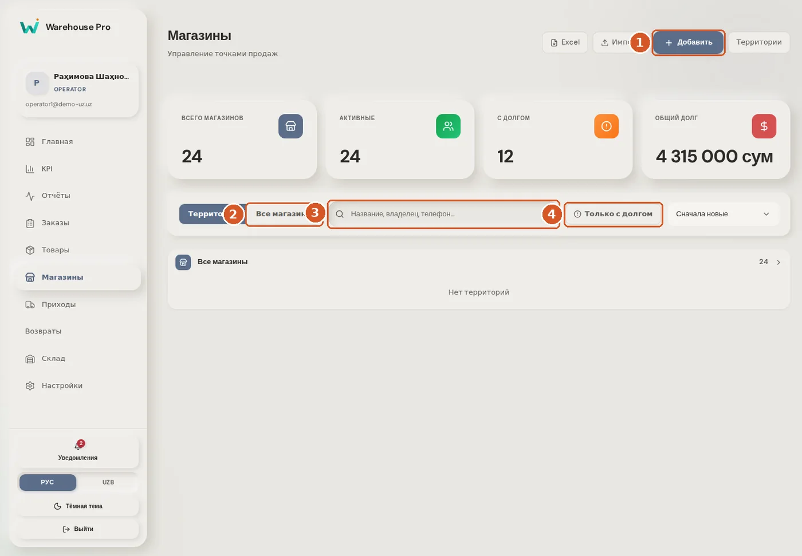
- 1Поиск по названию, владельцу и телефону — заполняйте все три
День 2. «Пользователи»: сотрудники и роли
Зачем: роль определяет, что человек видит и что может изменить. Агент не видит чужих магазинов и зарплат, оператор не видит P&L, курьер видит только свои доставки. Это и защита денег, и порядок: каждый отвечает за свой экран.
- «Пользователи» → «Создать». Форма «Создать пользователя»: «ИМЯ *», «EMAIL *», «ПАРОЛЬ *» (минимум 8 символов), «РОЛЬ *» → «Создать пользователя». Сотрудник входит сразу с этим паролем; сменить его он сможет в «Настройках» → «Профиль».
- Заведите по одному человеку на роль: оператор, супервайзер, агент, курьер, мерчандайзер. Роли — в таблице ниже. Второго директора завести нельзя — так задумано.
- Агенту задайте территорию: в строке агента значок «Рабочая зона» или блок «Территории агентов» внизу страницы → «Изменить» → выберите территории → «Сохранить». Без территории у агента не будет плана на день 3.
- Ушёл сотрудник — «Деактивировать» (значок питания в строке). Его заказы, долги и история остаются; войти он больше не сможет. Забыл пароль — «Сбросить пароль» (значок ключа).
- Директору — включить двухфакторную защиту: «Настройки» → «Профиль» → «Вход с кодом из приложения» → «Включить» → «Ключ настройки» ввести в Google Authenticator → «Первый код из приложения» → «Подтвердить и включить». Без неё нельзя выгрузить копию базы и очистить журнал действий.
- Если оператор у вас — «человек на телефоне», а не правая рука: «Настройки» → «Права оператора» → снимите «Удалять заказы», «Править остатки», «Вести вознаграждение» → «Сохранить». Роль задаёт потолок, здесь вы его только опускаете.

| Роль | Веб | Телефон | Что видит |
|---|---|---|---|
| Руководитель (директор) | да | да | Всё: деньги, отчёты, P&L, зарплата, настройки, пользователи, аудит-лог |
| Оператор | да | да (просмотр) | Заказы, магазины, товары, склад, приходы, возвраты; зарплату — только свою |
| Супервайзер | да | да | Карта, план визитов, KPI и зарплата агентов, магазины |
| Агент | частично | да | Свои магазины, заказы, план, долги, KPI и зарплата |
| Курьер | частично | да | Свои доставки и зарплата |
| Мерчандайзер | частично | да | План визитов и отчёты по полке |
- Все магазины с телефоном и территорией; «ОБЩИЙ ДОЛГ» совпал с тетрадью
- Кредитные лимиты заданы хотя бы должникам
- Каждый сотрудник вошёл под своим паролем и увидел свой экран
- У каждого агента есть территория
- У директора включена двухфакторная защита
День 3. Поле: телефоны, план, первые заказы
Зачем: заказ, принятый с телефона у прилавка, сразу резервирует остаток и попадает оператору — без звонков и переписывания. План визитов говорит агенту, куда идти, а супервайзеру — кто дошёл.
- Установите приложение агентам, курьерам и мерчандайзерам (APK от вашего поставщика). Вход — тем же e-mail и паролем, что завели во «Пользователях»; язык — в профиле.
- Разрешите геолокацию «всегда» на каждом телефоне. Без неё карта у супервайзера пуста, а визиты не подтверждаются.
- Супервайзер в вебе: «План визитов» → вкладка «Месяц» → «Сотрудник», «Что ставим» (территория), «Дни недели» → «Расставить месяц» (после выбора кнопка покажет «Расставить — N визитов»). Система сама распределит точки по дням.
- Агент с телефона: главная показывает «Визиты сегодня»; плитка «НОВЫЙ ЗАКАЗ» (или значок корзины у магазина в «Магазинах») → магазин → «Добавить товар»: поиск «Название или артикул…» или сканер, «+» у строки — остаток виден до добавления → «Готово» → количество «− поле +» → «Продолжить →» → способ оплаты → «Подтвердить заказ».
- Первые заказы делайте при супервайзере: одна минута у прилавка, и человек больше не спрашивает. Оператор в это время смотрит «Заказы» — заказ должен появиться со статусом «Новый».

- У всех агентов есть план на неделю
- Первый заказ агента виден у оператора в «Заказах» со статусом «Новый»
- На «Складе» у заказанного товара появился «Резерв»
- Агент виден на «Карте» у супервайзера
День 4. Склад и доставка
Зачем: это день, когда остаток превращается в деньги. Лист — задание складу и рейс курьера; сборка списывает партии; доставка записывает наличные и долг магазина. Каждый шаг делает один человек, и система запоминает, кто.
- Оператор: «Заказы» → отметить заказы дня галочками → «Загруз. лист» → «Сформировать лист» → «Печать» или «Готово, без печати». Лист — задание складу и одновременно рейс курьера.
- Сборка: «Погрузочные листы» → «Собрать». Система показывает, сколько нужно и из каких партий брать (FEFO); кладовщик правит «Собрано» только там, где не хватило → «Подтвердить сборку». Меньше — недостача, о которой офис узнаёт сразу.
- Курьер: в окне «Погрузочные листы» в строке листа выберите человека в списке «Курьер не назначен» — он проставится на все заказы листа. На телефоне курьера появится маршрут.
- Доставка: курьер жмёт «Выехал по всем (N)»; у точки — сумма наличных и «Доставлено»; недовоз — «Не доставлено» с причиной; частичная оплата или возврат — «Оформить подробно».
- Вечером оператор сверяет: «Заказы» → фильтр «Доставлены»; наличные курьера — в карточке каждого заказа; долг магазина — в его карточке и в «Отчётах» → «Долги».
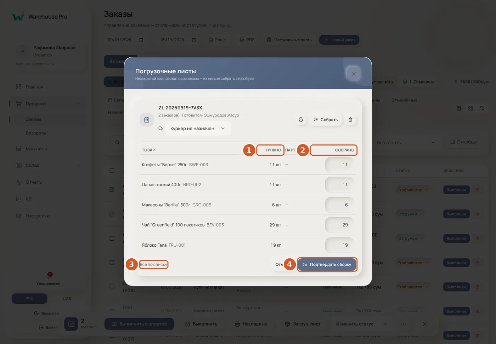
- 1Собрано — правьте только то, чего не хватило
- 2«Подтвердить сборку» — лист становится «Готов»
- Лист собран, курьер назначен
- Заказ прошёл «Отгружен» → «Доставлен»
- На «Складе» «Доступно» уменьшилось ровно на отгруженное
- Долг магазина и наличные курьера сходятся с бумагой
День 5. «Главная»: пять вопросов дня
Зачем: с этого дня вы перестаёте спрашивать и начинаете смотреть. Главная директора отвечает на пять вопросов: сколько продали, сколько довезли, сколько должны нам, какая маржа и что горит.
- Войдите директором. «Главная»: «ВЫРУЧКА · СЕГОДНЯ», «ЗАКАЗЫ · СЕГОДНЯ» с подписью «Довезено сегодня N из M», «ДОЛГ КЛИЕНТОВ», «ВАЛОВАЯ ПРИБЫЛЬ».
- Ниже — карточки-алерты: низкий остаток, сгорающие партии, новые заказы, просроченные долги. Нажмите на любую — откроется экран, где на неё отвечают («Склад», «Заказы», «Отчёты» → «Долги»).
- «Динамика продаж» — «7д» / «30д» / «Месяц»; «Заказы в работе» — сколько открыто прямо сейчас, «Последние заказы» — кто и на сколько.
- В меню «KPI»: кто из агентов делает план, кто нет; клик по строке агента — разбор и зарплата за период.

- 1Выручка за сегодня и сравнение со вчера
- 2Довезено сегодня N из M — если M сильно больше N, смотрите курьеров
- 3Долг клиентов — ведёт в «Отчёты» → «Долги»
- 4Алерты — каждый открывает нужный экран
День 5. «Отчёты» и «Долги»
Зачем: главная показывает сегодня, отчёты — период. Здесь видно, что продаётся, кто из агентов везёт, и главное — сколько денег зависло в магазинах и как давно.
- «Отчёты» → период «7 дней» / «30 дней» / «90 дней». Вкладка «Обзор»: «ВЫРУЧКА», «ЗАКАЗОВ», «СРЕДНИЙ ЧЕК», «ЗАВИСЛО В ДОЛГАХ»; график «Визиты и заказы»; «План сегодня» по агентам; внизу «Топ товаров», «Топ магазинов», «Лучшие агенты», «Больше всех должны».
- «Продажи» — по агентам и товарам; «Агенты» — кто везёт, а кто просел. «Сводка» — Excel по текущему периоду; «Печать» — окно печати (для файла выберите принтер «Сохранить как PDF»); «Все выгрузки» — все отчёты в одном месте.
- Вкладка «Долги»: «Должны нам» — общая сумма и число должников; четыре корзины по возрасту — «до 7 дней», «8–30 дней», «31–60 дней», «больше 60». Жёлтое и красное — деньги, за которыми пора ехать.
- Таблица ниже — магазин, долг, возраст самого старого долга; «Excel» и «Печать» над ней — список должников для обзвона. Выписка по магазину (каждая доставка, оплата и возврат) и оплата без заказа — в «Магазинах»: откройте магазин → «Добавить платёж».
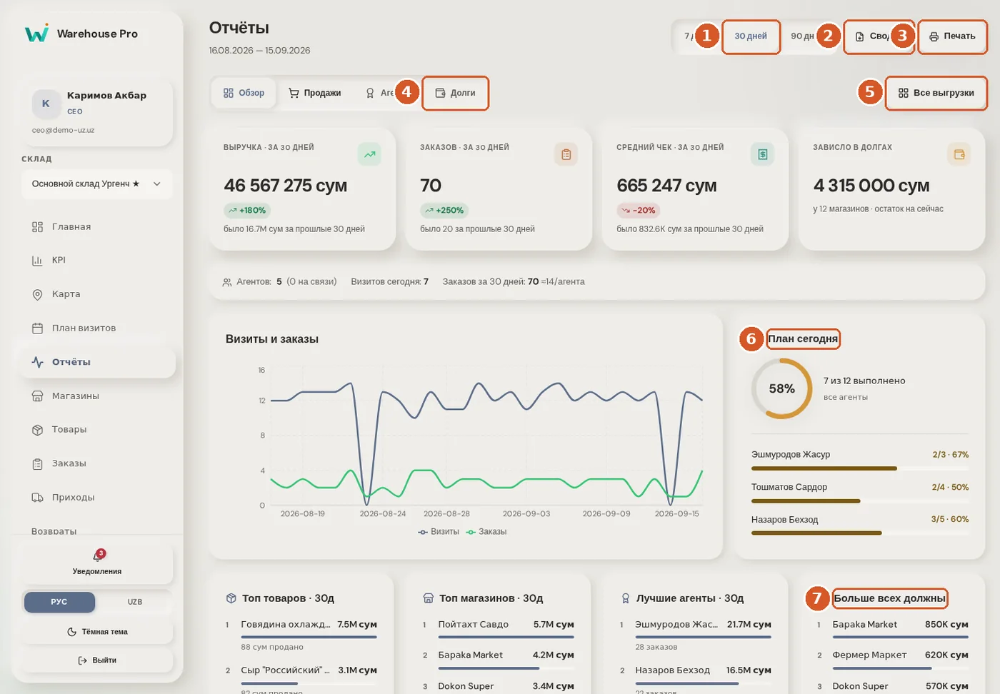

День 5. «P&L»: заработали или потеряли
Зачем: выручка — не прибыль. P&L вычитает себестоимость проданного (по партиям с прихода), расходы на приходы и выданную зарплату и говорит одну цифру: «ЗАРАБОТАЛИ ЗА ПЕРИОД» или «ПОТЕРЯЛИ ЗА ПЕРИОД».
- «P&L» → период «7 дней» / «30 дней» / «90 дней» / «12 мес.» / «Год» / «Период» (свои даты «От» — «До»).
- Верхняя карточка — итог за период и сравнение с прошлым; справа «ВАЛОВАЯ МАРЖА» (выручка минус себестоимость) и «ЧИСТАЯ МАРЖА» (ещё минус расходы и зарплата). Полоса ниже показывает, куда ушла выручка: «Себестоимость», «Закупка», «Зарплата», «Осталось» — пустые части не рисуются.
- Четыре карточки: «ВЫРУЧКА», «СЕБЕСТОИМОСТЬ», «ВАЛОВАЯ ПРИБЫЛЬ», «РАСХОДЫ». Если «СЕБЕСТОИМОСТЬ» — 0 сум, а маржа — 100%, значит у товаров не заполнена себестоимость (день 1) — цифра не настоящая.
- «Динамика по месяцам»: столбцы — выручка и себестоимость, линия — чистая прибыль. «Excel» и «PDF» — отчёт бухгалтеру.
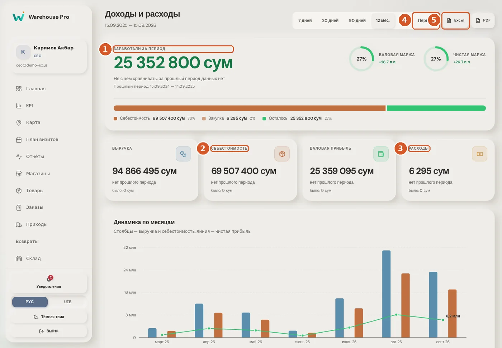
День 5. «Зарплаты»
Зачем: зарплата считается из тех же заказов и доставок, что и выручка. Настроив ставки один раз, вы в конце месяца получаете ведомость без Excel и споров.
- «Зарплаты» → период («Неделя» / «Месяц» / «Квартал») → в строке сотрудника «Оклад» → «ОКЛАД ЗА МЕСЯЦ», «КОМИССИЯ, % ОТ ПРОДАЖ» → «Сохранить». Комиссия считается от заказов, которые человек оформил сам.
- Курьеру — в меню «KPI» → «Настройка ЗП» → «Оплата курьеров за доставку»: сумма за каждую довезённую заявку («сум») или процент от довезённого («%») — переключатель у каждого человека. Там же «Обед и дорожные» за рабочий день.
- Столбцы «НАЧИСЛЕНО», «ВЫПЛАЧЕНО», «ОСТАТОК» считаются сами. «Только с остатком» — кому ещё должны.
- В день выдачи: «Выплатить» по одному («Выплата» или «Аванс», сумма → «Записать выдачу») или «Выдать всем». Сотрудник подтверждает получение на телефоне. «Ведомость» — Excel за период; расходный ордер на подпись — «Печать ордера» во вкладке «Выплаты».

- 1«Выдать всем» — закрыть месяц одной кнопкой; сотрудники подтверждают на телефоне
День 5. «Аудит-лог» и Telegram
Зачем: аудит-лог — ответ на вопрос «кто это сделал». Каждая корректировка остатка, отмена оплаты, смена лимита, сброс пароля записаны с именем и временем. Telegram — чтобы о новых заказах и долгах узнавать, не открывая систему.
- «Аудит-лог» → фильтры «Все», «Пользователи», «Заказы», «Оплаты», «Магазины», «Склад», «Организация». Сегодня он почти пуст — это нормально: сюда попадают только чувствительные действия, а не каждый клик.
- Раз в неделю смотрите «Оплаты» (отменённые оплаты) и «Склад» (корректировки и инвентаризации): это два места, где теряют деньги. «Выгрузить CSV» — если нужно разобраться с бухгалтером.
- «Настройки» → «Telegram» → «Подключить в 1 клик» (откроется бот) или вручную: /start боту → скопировать числовой ID → «Ваш Telegram chat ID» → «Подключить». «Отправить проверку» — убедиться, что сообщение доходит.
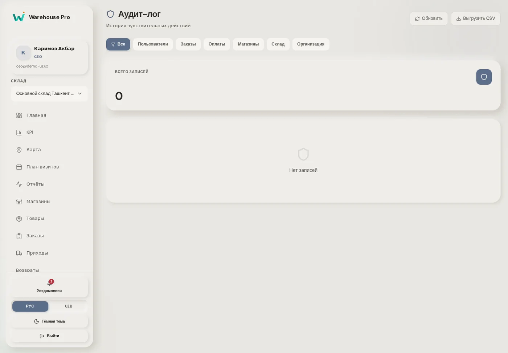
- Директор ответил на пять вопросов дня с «Главной», не открывая другие экраны
- «Отчёты» → «Долги»: сумма совпала с «ДОЛГ КЛИЕНТОВ» на главной
- P&L показывает себестоимость больше нуля
- Ставки зарплаты заданы всем, ведомость сходится с ожиданиями
- Telegram подключён, проверочное сообщение пришло
Пять дней прошли — дальше книга идёт по ролям: каждый сотрудник читает свою главу в Части 2, а владелец — Часть 3 про то, как считаются деньги.
Часть 2. Рабочий день каждой роли
Здесь каждая роль описана так, как проходит её день: утро, день, вечер. Сначала офис (веб), затем поле (телефон). Читать нужно только свою главу; директору полезно знать все. Названия кнопок и пунктов меню даны в «ёлочках» ровно так, как они написаны в программе.
Кто что видит
Роль задаёт потолок: что человеку вообще открыто. Меню в вебе и вкладки на телефоне у каждой роли свои — ниже они перечислены слово в слово, чтобы сотрудник сразу находил нужный пункт.
| Роль | Меню в вебе | Вкладки на телефоне | За что отвечает |
|---|---|---|---|
| Директор | Всё: «Главная», «KPI», «Карта», «План визитов», «Отчёты», «Магазины», «Товары», «Заказы», «Приходы», «Возвраты», «Склад», «Отчёты склада», «Аудит-лог», «P&L», «Зарплаты», «Пользователи», «Биллинг», «Настройки» | Как у супервайзера: «Главная», «Магазины», «Планы», «Нормы», «Долги», «Карта» | Деньги, люди, тариф, настройки организации |
| Оператор | «Главная», «KPI», «Отчёты», «Заказы», «Товары», «Магазины», «Приходы», «Возвраты», «Склад», «Настройки» | «Главная», «Магазины», «Планы», «Нормы», «Долги» (без «Карты») | Заказы, погрузочные листы, приходы, возвраты, склад |
| Супервайзер | «KPI», «Карта», «План визитов», «Магазины», «Заказы», «Отчёты», «Настройки» | «Главная», «Магазины», «Планы», «Нормы», «Долги», «Карта» | Поле: кто где, план визитов, нормы, KPI агентов |
| Агент | «Мой день», «KPI», «Магазины», «Товары», «Новый заказ», «Мои заказы», «Сканер», «GPS», «Настройки» | «Главная», «Магазины», «Каталог», «Заказы», «Профиль» | Заказы у прилавка, визиты по плану, долги своих магазинов |
| Курьер | «KPI», «Доставки», «Настройки» | «Главная», «Доставки», «Профиль» | Довезти, принять деньги, оформить недовоз |
| Мерчандайзер | «Мой день», «KPI», «Магазины», «План визитов», «Отчёты», «Настройки» | «Главная», «Магазины», «План», «Профиль» | Полка: фото, чек-лист выкладки, конкуренты |
- Пункта нет в меню — значит роли он не положен. Не ищите его по адресу: сервер откажет.
- Оператора можно ограничить сильнее роли: «Настройки» → «Права оператора». Выключенное закрывается и на сервере, не только в кнопках.
- Свой KPI и свою зарплату видит каждый. KPI всех агентов — директор, оператор и супервайзер; чужую зарплату — только директор и супервайзер.
- Язык: в вебе — «РУС» / «UZB» внизу меню, на телефоне — «Профиль» → «Язык». Настройка личная, на других не влияет.
Оператор офиса и склад
Оператор работает в вебе. Меню слева: «Главная», «KPI», «Отчёты», «Заказы», «Товары», «Магазины», «Приходы», «Возвраты», «Склад», «Настройки»; «Главная» у оператора открывает «Заказы». Два экрана в меню не показаны и открываются по адресу: «Отчёты по складу» (/warehouse-reports) и «Штрих-коды» (/barcode). Под именем слева — текущий склад: остаток и «свободно» показываются по нему.
Заказы — рабочий экран

- 1Сводка — каждое число фильтр; «Ожидает» — заказы, которые ждут решения офиса
- 2Поиск по номеру заказа или магазину; агент — фильтром «Все агенты»
- 3«Погрузочные листы» — сборка и курьеры
- 4«Новый заказ» — заказ по звонку
- 5Статус меняется прямо в строке без переспроса; «Доставлен» откроет окно «Завершить заказ»
- 6«Выполнен» — окно «Завершить заказ»: что довезли и сколько заплатили
- Сводка сверху: «Всего», «Ожидает», «Новые», «В обработке», «Отгружены», «Доставлены», «Отменены» — нажмите число, и список сузится. Справа — сумма показанных заказов.
- Быстрые фильтры под сводкой: «Сегодня», «Вчера», «Эта неделя», «Этот месяц», статусы и способ оплаты («Наличные», «Карта», «Перевод», «В долг»). Даты сверху задают период; «Excel» и «PDF» выгружают то, что показано.
- Отметьте несколько заказов галочками — внизу появится панель: «Выполнить с оплатой», «Выполнить», «Накладные», «Загруз. лист», «Изменить статус», а в «…» («Ещё действия») — «Назначить агента», «Назначить курьера» и Excel по выбранным.
- «Столбцы» — скрыть лишние колонки; три значка справа переключают вид: «Таблица», «Доска», «По агентам».
Кнопка «Выполнен» (и статус «Доставлен» в строке) открывает окно «Завершить заказ» — так оператор закрывает заказ за курьера, когда тот отчитался устно:
- В блоке «ТОВАРЫ» у каждой позиции — «Оставил» или «Возврат». Для возврата укажите «Кол-во» и «Причина». Внизу видно «Оставлено» и «Возврат».
- В блоке «ОПЛАТА» введите «Сумма оплаты» или нажмите «Полностью» / «Ничего»; разница уходит «В долг». Выберите «Способ оплаты».
- «Завершить заказ». Заказ становится «Доставлен»: остаток списывается по довезённому, долг магазина = довезённое − оплата.
Панель заказа: «Ожидает», курьер, частичная доставка
Клик по строке открывает панель справа. В шапке — номер, статус и способ оплаты; ниже вкладки «Детали», «История», «Документы», «Корректировки», «Оплаты». В самом низу — «Комментарии» к заказу.

- 1Статус — здесь система переспросит «Изменить статус?»; «Доставлен» откроет окно «Завершить заказ»
- 2Сумма заказа
- 3«Детали» — состав; «История» — кто и когда менял статус; «Документы» — накладная, счёт, ТОРГ-12, Excel
«Ожидает». Заказ агента со скидкой выше порога (директор задаёт его в «Настройках»: «Порог скидки для полевых сотрудников, %») не отклоняется у прилавка, а приходит в офис со статусом «Ожидает» и держит резерв. Офису приходит уведомление «Заказ ORD-… ждёт подтверждения».
- В сводке нажмите «Ожидает» → откройте заказ. Под шапкой панели — жёлтая плашка «Ждёт подтверждения офиса: Скидка N% выше порога M% для полевых сотрудников».
- Проверьте состав и скидку во вкладке «Детали»; при необходимости «Изменить заказ» → поправьте «Скидка (%)» → «Сохранить».
- «Подтвердить» — заказ становится «Новый» и идёт в сборку. «Отклонить» — «Отменён», резерв освобождается, агент видит это на телефоне.
Частичная доставка. Когда курьер нажал «Оформить подробно» (см. «Курьер (телефон)»), в «Деталях» у строки появляется пометка «Частичная доставка — причина», заказанное количество зачёркнуто, рядом — довезённое. Во вкладке «Корректировки» — запись «Частичная доставка»: сумма «было → стало», кто внёс и сколько фото; во вкладке «Оплаты» — «Получено», «Долг» и «ОСТАТОК ДОЛГА». Долг магазина считается по довезённому, а не по заказанному.
Заказ по телефону
«Новый заказ» открывает окно из двух шагов: «Шаг 1 из 2 · магазин и товары» и «Шаг 2 из 2 · проверка и оплата». Заказ, оформленный в офисе, числится за оператором: чтобы засчитать его агенту магазина (KPI и зарплата), отметьте заказ галочкой → «…» → «Назначить агента».

- 1Магазин — поиск по названию, владельцу, району; справа красным — долг
- «Новый заказ» → в поле «Поиск магазина по названию, владельцу, району…» наберите любое из трёх → нажмите магазин. Рядом с магазином виден «долг N» — скажите его клиенту сразу.
- В «Поиск товаров…» наберите код или название (или отсканируйте штрих-код и нажмите Enter) → «+» кладёт товар в «Корзину». У каждого товара написано «свободно N»; при нуле «+» не нажимается.
- В корзине поправьте количество «−/+» → «Далее».
- Шаг 2: проверьте состав; при нужде «Скидка (%)»; выберите «Способ оплаты» — «Наличные», «Карта», «Перевод», «В долг»; «Примечание» — для курьера. Внизу — «Итого к оплате».
- «Создать заказ». Заказ появляется в списке со статусом «Новый» и сразу резервирует остаток.
Погрузочный лист
Лист — задание складу на один рейс: какие товары и в каком количестве собрать под выбранные заказы. Один заказ может быть только в одном незакрытом листе.
- Отметьте заказы галочками (обычно «Новые» и «В обработке» одного маршрута) → внизу «Загруз. лист».
- В окне «Загрузочный лист» выберите «Формат»: «Сводный» — итог по товарам для склада, «По маршруту» — по магазинам для курьера.
- «Сформировать лист». До этой кнопки ничего не записано — «Отмена» не оставляет следа. После — лист получает номер ZL-…, а заказы закрепляются за ним.
- В предпросмотре — «Заказов», «Позиций», «Вес» и строки. «Печать» — задание кладовщику; «Готово, без печати» — просто закрыть окно.
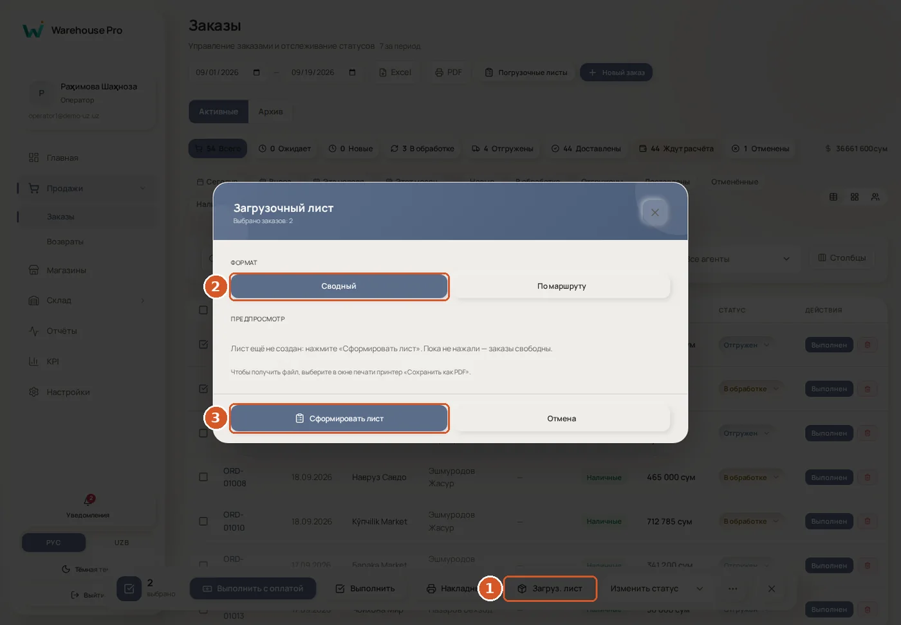
- 1«Сформировать лист» — только теперь заказы закрепляются
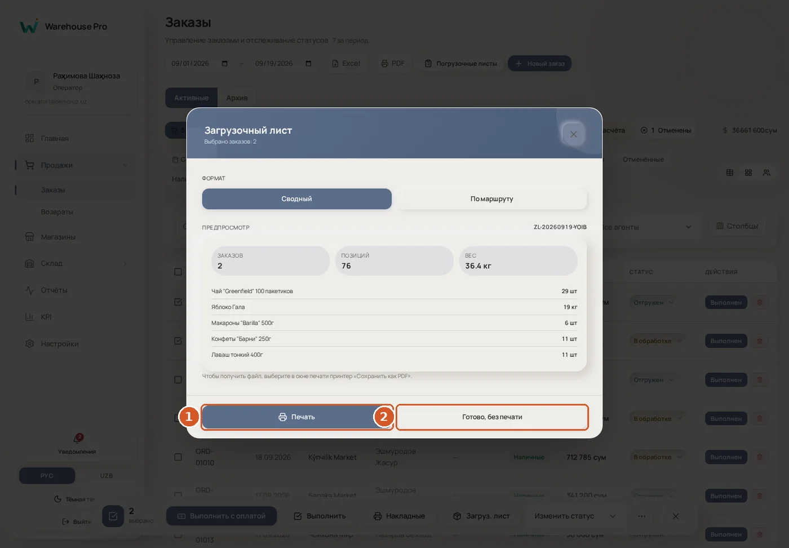
- 1«Печать» — на бумаге есть колонки «Партия (срок)» и пустая «Собрано»
- 2«Готово, без печати»
Сборка листа и курьер
«Погрузочные листы» (кнопка сверху экрана «Заказы») — последние листы, включая отгруженные: номер, сколько заказов, статус, агент, курьер, недостача.

- 1Курьер на весь лист — заказы уходят ему на телефон
- 2«Собрать» — сборка по строкам
- «Собрать» → под листом раскрывается таблица: «Товар», «Нужно», «Партии», «Собрано». В «Собрано» по умолчанию стоит «Нужно» — исправьте только строки с недостачей.
- Внизу — «Всё по списку» или «Недостача: N поз.» → «Подтвердить сборку». Лист становится «Готов»; недостача остаётся в строках и уходит офису уведомлением.
- Выберите курьера в поле «Курьер не назначен» — все заказы листа появятся у него в «Доставки» на телефоне.
- Дальше кнопка у листа показывает следующий шаг: «Загружается» → «Загружен» → «Отгружен». Отгруженный лист закрыт: его заказы можно собирать заново только новым листом.
- 1Собрано — введите факт, если меньше
- 2«Подтвердить сборку» → лист «Готов»
Что делать с недостачей: сверьте «Склад» → «Доступно» и партии у товара; расхождение с полкой закрывается инвентаризацией (см. «Склад» ниже). Заказ при этом не правится сам — если магазину поедет меньше, курьер оформит частичную доставку.
Приходы
«Приходы» — поступление товара на склад: машина, расходы на доставку, поставщик и долг перед ним, строки товаров с партиями и сроками. Вкладка «Контрагенты и долги» — расчёты с поставщиками.
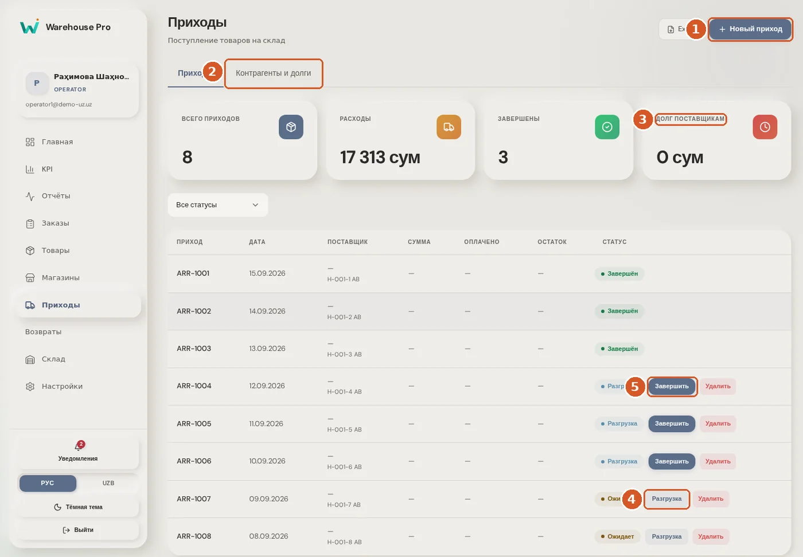
- 1«Новый приход»
- «Новый приход» → «Данные машины»: «Номер машины», «Имя водителя», «Телефон» (необязательно).
- «Дата и расходы»: «Дата», «Топливо», «Дорога», «Прочее» — «Итого расходов» считается само и попадёт в отчёты.
- «Поставщик и долг»: «Без поставщика», поставщик из списка или «+ Новый поставщик…». У поставщика укажите «Сумма долга», «Валюта», «Срок оплаты»; для долларов — «Курс на день сделки».
- «Товары»: строка — «Выберите товар…», «Кол-во», «Себестоимость», «Цена продажи», «Состояние», «Ожидалось» (по накладной), «Партия», «Годен до». «Добавить товар» — следующая строка. Сканер: поле «Штрих-код + Enter» или кнопка «Сканер» — каждый код прибавляет единицу.
- «Сохранить» — приход записан со статусом «Ожидает», остаток ещё не изменился. «Сохранить и завершить» — сразу «Завершён», товар на складе.
- Статусы в списке: «Ожидает» → кнопка «Разгрузка» → «Завершить» → «Завершён». Остаток растёт только на «Завершён»; до этого приход можно «Удалить».
- Клик по строке — «Детали прихода»: машина, расходы, товары; кнопки «Накладная» и «Этикетки» печатают документ и штрих-коды на партию.
- «Контрагенты и долги»: фильтры «Все», «С долгом», «Просроченные»; у поставки — «Оплатить» → окно «Платёж контрагенту»: «Сумма платежа», «Способ оплаты» → «Записать платёж»; «Вернуть товар» → «Вернуть и списать с долга»: товар уходит со склада, долг поставщику уменьшается по себестоимости.
Возвраты от магазинов
Возврат заводит агент с телефона у прилавка; офис его рассматривает и проводит. Пока возврат не проведён, ни остаток, ни долг магазина не меняются.

- Откройте «Возвраты» — по умолчанию показаны возвраты «на рассмотрении»: «Номер», «Магазин», «Причина» («брак», «не тот товар», «истёк срок», «повреждён», «другое»), «Сумма».
- Стрелка у строки раскрывает «Состав возврата» — товары и количество. Сверьте с тем, что привёз курьер.
- «Одобрить» или «Отклонить». Отклонённый возврат денег не двигает.
- У одобренного — «На склад» (товар годен, возвращается в остаток) или «Списать» (брак, просрочка). Система переспросит «Провести возврат на склад?» / «…списанием?» → подтвердите. Возврат становится «проведён», долг магазина по заказу уменьшается.
Блок «Проведено за месяц — по причинам» показывает, почему возвращают: если растёт «истёк срок» — смотрите «Отчёты по складу», если «не тот товар» — говорите с агентом.
Склад: остаток, резерв, свободно
- Строка товара: «Доступно», «Вес», «Резерв», «Всего», «Порог». Красный треугольник — остаток ниже порога дозаказа (порог задаётся в карточке товара).
- «Скорректировать» → «Движение товара»: «ТИП ОПЕРАЦИИ» — «Приход» (добавить), «Расход» (списать), «Корректировка» (установить точное кол-во) → «КОЛИЧЕСТВО» → «ПРИМЕЧАНИЕ» (например: «возврат от клиента») → «Применить». Каждое движение остаётся в истории.
- Вкладки: «Мёртвый сток» — товары без продаж N дней; «Дозаказ» — что и сколько заказать поставщику по скорости продаж; «Прогноз»; «Перемещения» — между складами; «Инвентаризация».
- Инвентаризация: «Новая инвентаризация» снимает остатки на этот момент → считайте полку (поле «Штрих-код + Enter» или «Сканер» прибавляют по единице; «Только расхождения» — фильтр) → «Применить». Излишек и недостача показаны в штуках и по себестоимости; «Отменить» — ничего не меняет.
- Кнопки сверху: «Остатки» и «Оценка» — Excel; «Добить стоки» — завести строки остатка товарам, у которых их ещё нет (после импорта каталога).
Отчёты по складу: что сгорает
Экран открывается по адресу /warehouse-reports (в меню оператора его нет). Сверху — «Общая стоимость» склада по себестоимости, «Розничная», «Маржа», «Наименований», «Низкие остатки»; «Excel» и «PDF» выгружают отчёт целиком.

- Партии со сроком берутся из строк прихода («Партия», «Годен до»). Приход без срока в этот отчёт не попадает.
- Просроченное: списать через «Склад» → «Инвентаризация» (или «Скорректировать» → «Расход») либо «Приходы» → «Контрагенты и долги» → «Вернуть товар». В отгрузку просроченная партия не попадёт — FEFO её пропускает.
- Ниже — «Остатки по категориям», «Доля категорий», «Движение товаров» (приход/расход за период), «Расходы на доставку» из приходов, «Топ товаров по стоимости», «Оборачиваемость».
Товары и магазины
- «Добавить» → «Новый товар»: обязательны «Код *», «Название *», «Цена продажи *». «Штрих-код» нужен для сканера; «Себестоимость» — пока нет прихода; «Порог дозаказа» красит остаток красным; «В упаковке, ед.» и «Название упаковки» дают ввод коробками в приходе; «Масса 1 ед. в кг» считает вес листа → «Сохранить».
- Карточка товара: цена, «себест.», категория, остаток; корзина справа — удалить. Товар с историей заказов или приходов не стирается, а становится неактивным и уходит из каталога.
- 1Поиск: название, владелец, телефон
- «Добавить»: «Название *», «Владелец», «Телефон», «Город», «Район», «Адрес», «— Агент —», «— Территория —», «Заметки». Без агента точка не появится у него на телефоне в «Магазинах», в планах визитов и в его KPI.
- Магазин звонит «сколько я должен?» — откройте его карточку: «ТЕКУЩИЙ ДОЛГ», «Деньги магазина» (платежи за 30 дней, «Сторно» ошибочного), «Добавить платёж» — деньги, принятые в офисе. «Акт сверки» за период — «Печать» или Excel для клиента.
- «В архив» убирает точку из планов, карты и поиска, но оставляет заказы и долг; «Вернуть в работу» — обратно. «Удалить насовсем» доступно только для точки без истории.
Штрих-коды

- Найденный товар: «Заказ» — переход в мастер нового заказа (/orders/new), товар там выбирается заново; значок принтера — в «ОЧЕРЕДЬ НА ПЕЧАТЬ» → «Печать этикеток».
- Форматы: EAN-13, EAN-8, Code 128, Code 39, QR, UPC-A, UPC-E. Камера работает в Chrome 83+, Edge 83+, Android Chrome, Safari iOS 17.4+.
Конец дня — проверьте
- «Заказы» → «Ожидает» = 0: по каждому нажато «Подтвердить» или «Отклонить».
- «Погрузочные листы»: уехавшие — «Отгружен», ошибочные — удалены, недостачи разобраны.
- Доставленные заказы закрыты через «Выполнен» с суммой оплаты; «Оплаты» в панели сходятся с деньгами курьера.
- «Приходы»: разгруженные машины — «Завершён», у строк есть партия и «Годен до».
- «Возвраты»: очередь «на рассмотрении» пуста.
Директор
Директору открыто всё меню. В этой главе — экраны, которых нет у других: «Главная», «Отчёты», «P&L», «Зарплаты», «Пользователи», «Аудит-лог», «Биллинг», «Настройки». Карта, планы и KPI у директора те же, что у супервайзера — см. «Супервайзер». Заказы, приходы и склад — см. «Оператор офиса и склад».
Главная — пять вопросов дня
- 1Выручка за сегодня и стрелка «к вчера»; клик — «Отчёты»
- 2Довезено сегодня N из M — жёлтым, пока есть недовезённые
- 3Долг всех магазинов на сейчас; клик — «Отчёты» → «Долги»
- 4Сигналы — каждая карточка ведёт на экран, где на неё отвечают
| Плитка | Что считает | Куда ведёт клик |
|---|---|---|
| «Выручка · сегодня» | Сумма заказов, оформленных сегодня и уже доставленных. Стрелка — против вчера; пока вчера пусто, стрелки нет. | «Отчёты» |
| «Заказы · сегодня» | Сколько оформили сегодня; строкой ниже «Довезено сегодня N из M»: N — доставлено сегодня, M — вместе с ещё не довезёнными из назначенных курьерам. | «Заказы» |
| «Долг клиентов» | Сумма долга всех магазинов прямо сейчас. | «Отчёты» → «Долги» |
| «Валовая прибыль» | За последние 90 дней: (выручка − возвраты − себестоимость) / (выручка − возвраты). Себестоимость берётся из строк заказа на момент продажи. | «Отчёты» |
Лента сигналов под плитками — то, на что нужно ответить сегодня. Показываются не больше четырёх, в порядке срочности: срок годности, остаток, новые заказы, план визитов, долги. Текст сигналов — всегда по-русски, и в узбекском интерфейсе тоже.
| Сигнал | Когда появляется | Куда ведёт |
|---|---|---|
| «Просрочено партий: N» | На складе есть партии с истёкшим сроком; сумма — по цене закупки | «Отчёты склада» |
| «Сгорает за неделю: N парт.» | Срок годности выйдет в ближайшие 7 дней | «Отчёты склада» |
| «Низкий остаток: товар» | Свободный остаток на основном складе ниже точки заказа (до пяти товаров) | «Склад» |
| «N новых заказов» | Заказы в статусе «Новый» ждут офиса | «Заказы» |
| «План: 5/13 (38%)» | Визиты на сегодня по всем агентам; красный — сделано меньше половины | «План визитов» |
| «Долг: магазин» | Долг магазина выше 500 000 сум (три самых крупных) | «Отчёты» → «Долги» |
- Утро, две минуты: посмотрите четыре плитки → пройдите по сигналам слева направо → откройте «Заказы в работе»: если «Новых» много к обеду — офис не успевает.
- «Довезено N из M» жёлтым после 17:00 — позвоните оператору: курьеры не отчитались или лист не закрыт.
- «Последние заказы» внизу — десять свежих; стрелка справа ведёт в полный список.
Отчёты — обзор, продажи, агенты, долги
- «Обзор»: выручка, заказов, средний чек и «Зависло в долгах» за период — со сравнением с таким же предыдущим периодом; график визитов и заказов; топ товаров, магазинов, агентов.
- «Продажи»: по магазинам, по способам оплаты, топ товаров за период.
- «Агенты»: таблица агентов и ниже «Что продаёт каждый агент» — состав продаж по товарам за свои даты.
- «Долги»: должники сейчас и «Архив задолженности» — когда взяли и когда погасили.
- Откройте «Отчёты» → «Долги»: сверху — сумма и четыре корзины по возрасту.
- Оранжевая корзина «31–60 дней» и красная «больше 60» — звонок агенту сегодня; магазин с возрастом больше 60 дней переводите на предоплату.
- Ниже таблицы — «Архив задолженности»: выберите магазин и период → увидите «Взяли в долг», «Погасили», «Изменение долга» и каждое движение с документом.
P&L — заработали или потеряли
- Формула: выручка доставленных заказов − возвраты − себестоимость = валовая прибыль; минус выданная зарплата и расходы на доставку = чистая прибыль.
- Полоса под ответом показывает, куда ушла выручка: закупка, зарплата, «Осталось».
- Ниже графика: «На чём заработали» — прибыль и маржа по товарам; «Чем платят» — наличные, перевод, долг; «Куда ушло на доставку» — приходы с топливом и дорогой.
Зарплаты — начислить и выдать
- 1«Выдать всем» — каждому его остаток одной кнопкой; подтверждение обязательно
- Выберите «Месяц» и нужный месяц стрелками. Под заголовком — сколько сотрудников в расчёте.
- Проверьте «Состав начисления»: если «Оклады» равны нулю — оклады не заданы. Нажмите «Оклад» в строке сотрудника → введите «Оклад за месяц» и «Комиссия, % от продаж» → «Сохранить». Оклад записывается в текущий календарный месяц, даже если на экране прошлый; прошлые месяцы не меняются.
- Строка агента может показывать «предложен вычет за подозрительные визиты» — нажмите «применить» или оставьте как есть. Решает директор, система только предлагает.
- Выдать одному: «Выплатить» → «Выплата» или «Аванс» → сумма или «Весь остаток» → примечание → «Записать выдачу».
- Выдать всем: «Только с остатком» → «Выдать всем» → в окне видно, скольким и сколько → «Выплатить».
- Сотрудник видит выплату на телефоне и подтверждает «Получил»; в «Выплаты» в столбце «Получено» вместо «ждём» появится дата. Там же — «Печать ордера» с подписями «Выдал» / «Получил».

Пользователи — завести, сбросить пароль, отключить
- Нажмите «Создать» → введите «Имя», «Email», «Пароль» (не короче 8 знаков) → выберите «Роль» → «Создать пользователя». Сотрудник входит сразу этим e-mail и паролем — на вебе и в приложении.
- В списке ролей нет «Руководителя»: директор в организации один.
- Забыл пароль: значок ключа в строке → «Новый пароль» → «Сохранить» → продиктуйте сотруднику.
- Ушёл из компании: значок выключателя → «Деактивировать». Заказы, визиты и зарплата человека остаются в отчётах; вернуть можно тем же значком — «Активировать».
- Пришёл новый человек на место старого: щит — «Передать доступ» → «Новый логин (Email)» и «Новый пароль» → «Сохранить». Магазины и история переходят к нему, старый вход закрывается.
- У агентов есть четвёртый значок — «Рабочая зона»: область на карте, внутри которой визиты считаются нормальными.
Ниже таблицы — «Приглашения» (кого позвали через мастер первого входа и кто ещё не вошёл; «срок вышел — позовите заново») и «Территории агентов»: у каждого агента — его территории, кнопка «Изменить». Территория — это маршрут, по которому супервайзер расставляет план на месяц.
Аудит-лог — кто и когда
- Сюда пишутся чувствительные действия: заказ отменён, оплата отменена (сторно), массовая смена статусов, напечатаны накладные, изменён кредитный лимит магазина, корректировка склада и инвентаризация, удалён товар или прайс-лист.
- И действия с доступом: сброс пароля, передача доступа, деактивация, права оператора, ключи API, включение и отключение кода-подтверждения.
- У каждой записи — кто, когда и «Детали»: что именно изменилось. Клик по строке раскрывает их.
Биллинг — тариф и лимиты
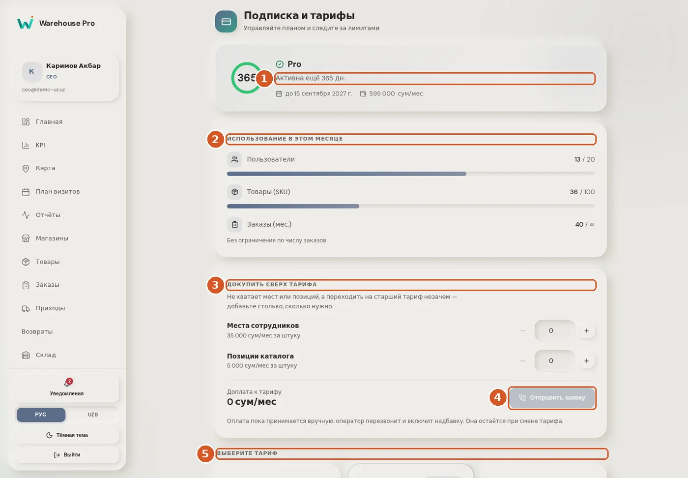
- Три счётчика. Пользователи: на пределе нового сотрудника не добавить. Товары: на пределе новый товар в каталог не заведётся. Заказы в месяц — справочный: обнуляется первого числа, заказы не блокирует.
- Не хватает пары мест, а старший тариф незачем — «Докупить сверх тарифа»: «+» прибавляет по пять к «Места сотрудников» или «Позиции каталога», точное число впишите в поле → «Отправить заявку». Надбавка остаётся при смене тарифа.
- Оплата — Click, Payme, Uzum Pay; оператор поставщика связывается в течение 30 минут после заявки. Пробный период даёт все функции.
Настройки — что заполнить директору
| Раздел | Что там | Кому виден |
|---|---|---|
| «Профиль» | Имя, телефон, смена пароля, «Вход с кодом из приложения» | всем |
| «Компания» | Название, валюта, реквизиты, логотип, порог скидки, точка заказа для новых товаров | директор |
| «Брендинг» | Логотип и цвета приложения для сотрудников и экрана входа | директор |
| «Склады» | Список складов и основной — с него продают | директор |
| «Прайс-листы» | Свои цены для отдельных магазинов; цену даёт список с бо́льшим приоритетом | директор, оператор |
| «Ключи API» | Доступ чужой программы к данным; ключ виден один раз | директор |
| «Права оператора» | Галочки по действиям; выключенное закрыто и на сервере | директор |
| «Telegram» | Свой Telegram, группа сотрудников, «Кому что приходит» | все; группа и правила — директор |
| «1С» | Подключение к 1С:Бухгалтерии по OData и расписание обмена | директор |
| «Внешний вид» | Тема и язык — личная настройка | всем |
Telegram — чтобы о новом заказе, долге и остатке узнавать без открытия программы.
- «Настройки» → «Telegram» → «Подключить в 1 клик»: откроется бот, нажмите в нём «Start». Или вручную: в Telegram найдите @userinfobot → /start → скопируйте числовой ID → вставьте в поле → «Подключить».
- Проверьте: «Отправить проверку» — сообщение должно прийти в Telegram сразу.
- Группа для офиса: «Получить код для группы» → создайте группу в Telegram, добавьте сотрудников и бота Warehouse Pro → отправьте в группу команду /link с кодом. События пойдут в этот чат.
- Сотрудники: в списке «Сотрудники» видно, кто подключён; «Напомнить неподключённым» — бот сам напишет каждому. ID сотрудника можно вписать и вручную.
- «Кому что приходит»: таблица событий × ролей — «Новый заказ», «Заканчивается товар», «Просроченный долг», «Назначена доставка». Поставьте галочки, кому что слать. Ночью с 22:00 до 08:00 сообщения копятся и приходят утром.
1С — коротко. Нужна 1С:Бухгалтерия 8 для Узбекистана с опубликованным OData. «Настройки» → «1С»: введите «Адрес публикации», «Пользователь 1С» и «Пароль» → «Проверить связь» → выберите «Организация», «Склад», «Тип цен» из списков самой 1С → задайте «Интервал обмена, мин» → включите нужное: «Номенклатура из 1С», «Контрагенты из 1С», «Доставленные заказы → реализация» → «Обмен по расписанию включён». Сверху видно последний обмен, очередь и последний отказ; магазины без пары в 1С создаются кнопкой в этом же разделе.
- Реквизиты и валюта в «Компании» заполнены
- Telegram подключён, «Кому что приходит» настроено
- Оклады и ставки заданы, первая ведомость сошлась
- Второй фактор у директора включён
Супервайзер
В вебе у супервайзера: «KPI», «Карта», «План визитов», «Магазины», «Заказы», «Отчёты», «Настройки». Магазины и заказы — только посмотреть: кнопок создания и правки нет. На телефоне: «Главная», «Магазины», «Планы», «Нормы», «Долги», «Карта». Директор видит те же экраны.
Карта — кто вышел

| Состояние | Что значит | Что делать |
|---|---|---|
| «На связи» (зелёный) | Сигнал за последние 10 минут | Ничего — человек работает |
| «Были раньше» (жёлтый) | Сигнал за сутки был, но больше 10 минут назад — телефон в кармане без сети или экономит заряд | Посмотрите время; если больше часа в рабочее время — позвоните |
| «Без сигнала» (серый) | За сутки ни одной точки: GPS выключен или геолокация не «всегда» | Позвонить: включить GPS и разрешение «всегда» (см. «Часть 4») |
- Нажмите на карточку агента слева → карта покажет его маршрут за день, а под карточкой — «Обход» (точек обойдено из плана), «Норма» (план продаж за месяц), пробег в км, заряд телефона и «Фотоотчёты».
- Красная пометка «подмена координат» у агента — телефон сообщил, что координаты подставлены приложением. Такие визиты попадут в «Подозрительную активность» в KPI.
- Включите «Магазины» → красные метки — «Долго не платят», жёлтые — «Есть долг», зелёные — «Рассчитываются». Клик по метке: «Принёс за всё время», заказов, долг. Магазины без координат на карту не попадают — координаты заполняются в карточке магазина.
План визитов — день

- Разовый план: «Создать план» → «Агент» → «Территория» (в скобках — сколько магазинов) → снимите галочки с ненужных точек → «Примечания» для всех → создать. Каждая точка станет отдельным визитом на этот день.
- В течение дня: строки «Запланирован» меняются на «Посещён», когда агент отмечает визит на телефоне. Отчитался по звонку — нажмите «Посещён» сами; не доехал — «Пропущен».
- Красная сумма справа в строке — долг этого магазина: агент должен забрать деньги на визите.
- Вечером: «Как прошёл день» у каждого агента → пробег за день, «в точках», «в дороге», «вышел — закончил», «визитов с замечаниями». Замечание — визит отмечен далеко от магазина или слишком быстро. Если за день не пришло ни одной точки GPS, разбор так и скажет: подтвердить визиты нечем.
- Значок фото в строке — «Открыть фотоотчёт»: снимок с визита.
«Расписание визитов — задать один раз и разворачивать в планы»: раскройте блок → выберите агента → найдите магазин → отметьте дни недели → «Сгенерировать». Дальше месяц расставляется по этому расписанию одной кнопкой.
План на месяц одной кнопкой

- «План визитов» → «Месяц» → стрелками выберите месяц (следующий можно расставить заранее).
- «Сотрудник» → агент. «Что ставим»: если расписание уже задано — оставьте «По расписанию сотрудника»; если нет — выберите территорию, отметьте «Дни недели» и поставьте «Запомнить расписанием — следующий месяц одной кнопкой».
- Оставьте галочку «Не заполнять прошедшие дни» → нажмите «Расставить — N визитов». Под кнопкой написано: сколько точек × сколько дней.
- Проверьте сетку: «месяц не расставлен» у агента — повторите для него. Выходные показаны серым.
- Агент ушёл или маршрут поменялся — «Убрать незакрытые» → подтвердите → расставьте заново. Уже посещённые визиты не тронет.
Нормы и KPI — кто отстаёт
Вкладка «Нормы» в «Планах визитов»: у каждого агента на месяц — «Сумма продаж», «Заказов», «Визиты» (доля закрытых, %). Пустое поле — нормы нет. «Подсказать по истории» заполнит по прошлым месяцам, «Сохранить нормы» — записать. Справа — «Факт за месяц»: продано, заказов, визитов; выполненное подсвечено. Норму видит и агент на телефоне.
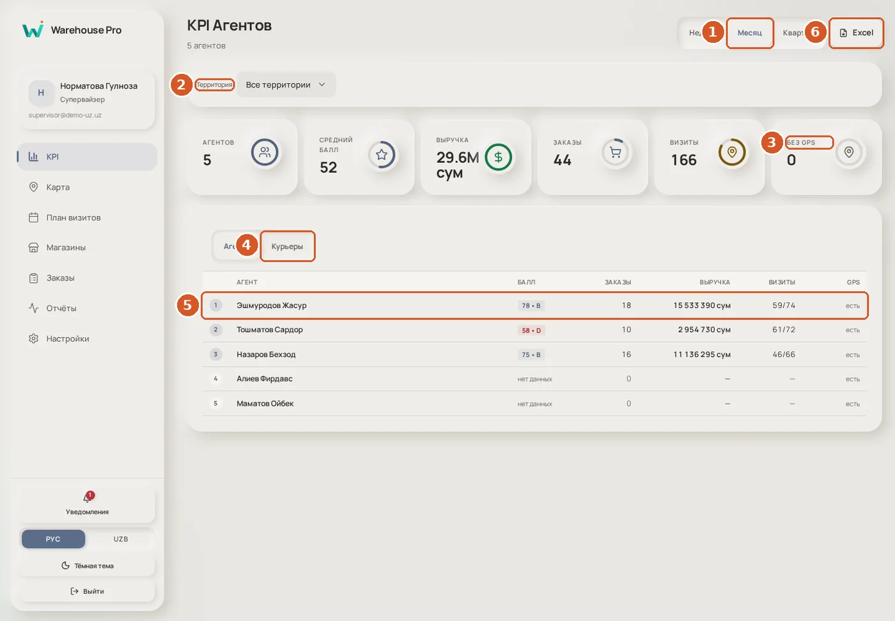
- Балл из пяти частей: план визитов 30%, выручка 25%, конверсия (заказов на визит) 20%, без возвратов 15%, сбор долгов 10%; минус штраф за подозрительные визиты. Оценка: A — от 90, F — ниже 40.
- «нет данных» вместо балла — агенту ничего не назначали и заказов нет: сравнивать не с чем. «—» в визитах — план на период не ставили.
- «нет GPS» серым — не приговор, а факт: следов на карте нет. Сначала проверьте телефон, потом спрашивайте с человека.
- Клик по строке раскрывает разбор: плитки, «Детализация балла», «Подозрительная активность» и зарплата агента за период — снимок в главе «Директор: Зарплаты».
Телефон супервайзера
В приложении те же шесть вкладок, что и у директора: «Главная», «Магазины», «Планы», «Нормы», «Долги», «Карта». Полные разборы удобнее на вебе; телефон — чтобы в дороге увидеть, кто где, назначить план и норму. Закрыть визит за агента можно только на вебе.

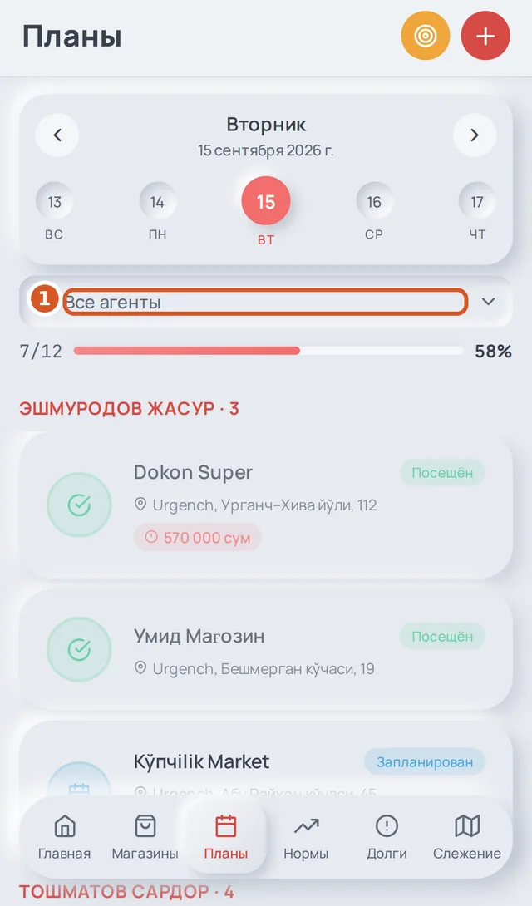
- «Планы»: стрелки и лента дат — день; «+» — «Новый план визита» (агент, территория, магазины); мишень — «Месячная норма»: агент, «Норма выручки», «Норма визитов» (%) → «Создать норму».
- «Нормы» («Показатели»): «Нормы» — план, факт и среднее выполнение по агентам; «Визиты» — визиты по дням с фильтром по агенту. Пусто — нормы ещё не созданы.
- «Долги»: магазины с долгом и агентом, «старше месяца», поиск «Магазин или агент», сортировка по сумме или возрасту, «Открыть магазин →» — телефон владельца и заказы.
- «Главная»: «Прогресс дня», «Доставки», «Долги магазинов», «Динамика продаж», «Последние заказы»; сигналов, как на вебе, здесь нет.
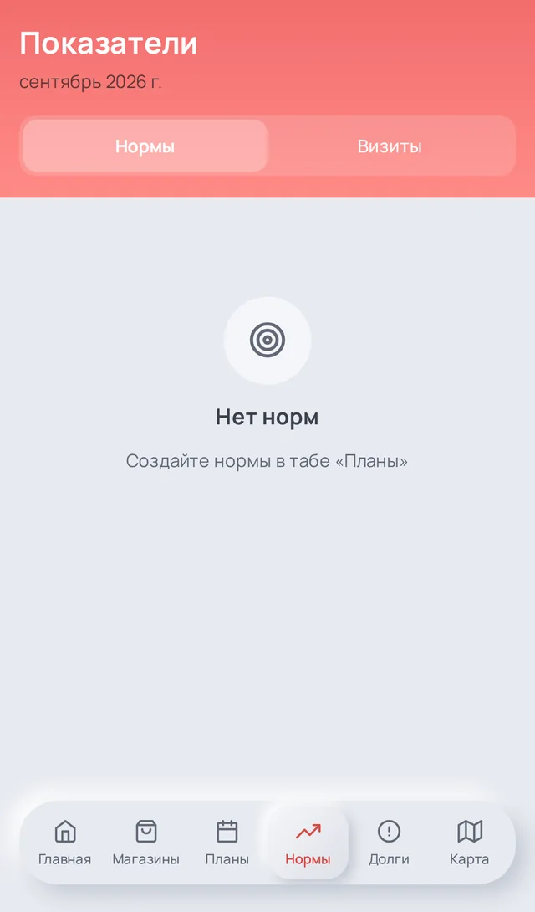
- У каждого агента расставлен месяц и задана норма
- Утром на карте нет «Без сигнала» без объяснения
- Вечером «Как прошёл день» просмотрен у отстающих
Торговый агент (телефон)
Агент работает только с телефона. Внизу пять вкладок: «Главная», «Магазины», «Каталог», «Заказы», «Профиль». План визитов, долги, GPS и зарплата открываются с главной и из профиля.
Вход
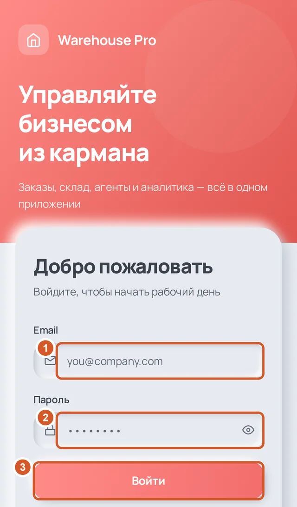
- 1E-mail — тот же, что в веб-версии
- 2Пароль; значок глаза показывает введённое
- 3«Войти»
- Откройте приложение → введите e-mail в поле «you@company.com» → пароль → «Войти».
- Логин и пароль те же, что для веб-версии; их выдаёт офис (см. «День 2»).
- После первого входа появится «Войти с отпечатком» или «Войти с Face ID» — пароль каждый раз вводить не нужно.
Главная — «Мой день»

- 1«Визиты сегодня» и счётчик «сделано / всего»; стрелка → открывает «План»
- «Визиты сегодня» — маршрут на день, статус у каждой точки: «Запланирован», «Посещён», «Пропущен». Отметка ставится на экране «План» — стрелка → справа от заголовка.
- Ниже, если прокрутить: «Динамика продаж» (выручка за 7 дней), плитки «НОВЫЙ ЗАКАЗ», «МАГАЗИНЫ», «GPS», «БАРКОД», «ПРОФИЛЬ», блок «ДОЛГИ» и «Мои заказы сегодня».
- Колокольчик справа вверху — уведомления: новые заказы, оплаты, остатки; цифра — сколько непрочитанных.
План визитов
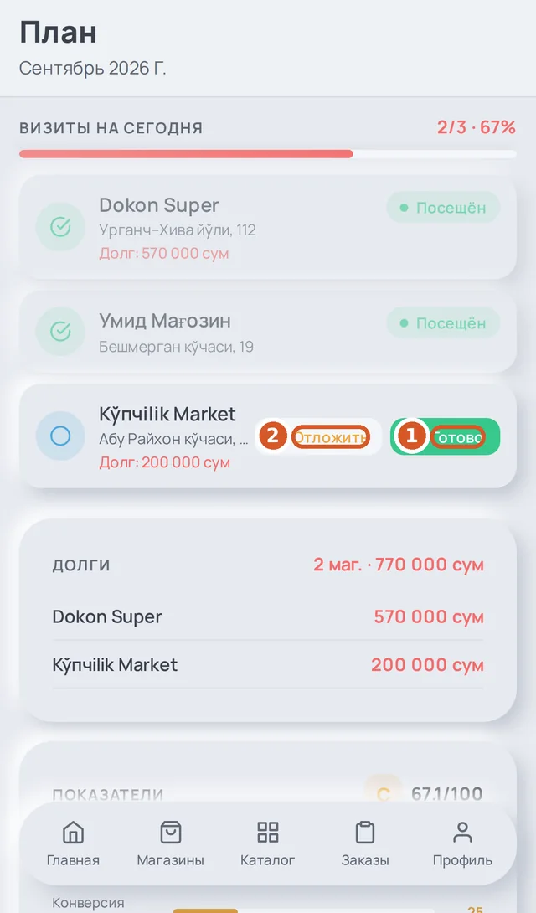
- 1«Готово» — визит сделан, уходит вместе с точкой GPS
- На главной нажмите стрелку → у «Визиты сегодня» → откроется «План» со счётчиком «сделано / всего · %».
- В магазине нажмите «Готово» → строка станет «Посещён». Без связи появится «Нет связи — отметка сохранена и уйдёт сама».
- Не попали в точку — «Отложить» → «Пропущен». Пропуск виден супервайзеру в разборе дня.
- Ниже — «ДОЛГИ» по магазинам маршрута, «ПОКАЗАТЕЛИ» (оценка месяца: визиты, выручка, конверсия, без возвратов, долги) и строка «Зарплата».
Магазины и каталог
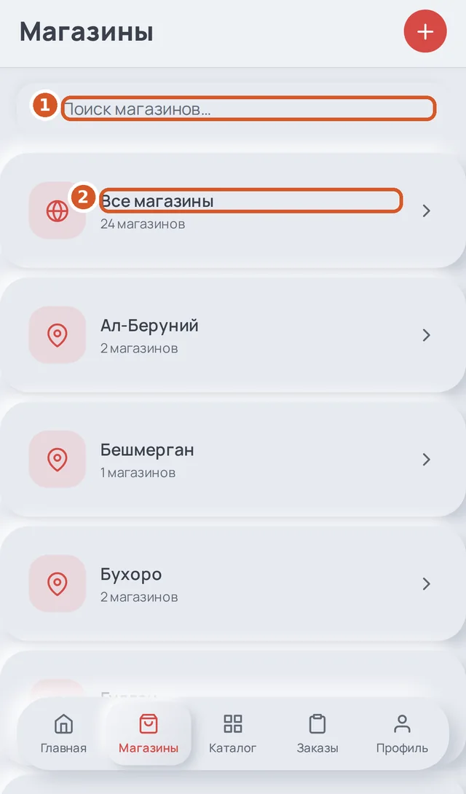
- «Магазины» → территория или «Все магазины» → список. При включённом GPS значок навигации сортирует по расстоянию: ближайшие первыми, у каждого — метры и время в пути.
- На карточке магазина значок корзины — заказ в один тап; сама карточка открывает магазин: «ТЕКУЩИЙ ДОЛГ», телефон, адрес, «Новый заказ», редактирование и «Определить местоположение».
- Новая точка: «+» справа вверху → «Новый магазин»: название, владелец, телефон, город, район, адрес, фото. Стоя у магазина нажмите «Определить местоположение» → «Координаты сохранены» → «Создать магазин».
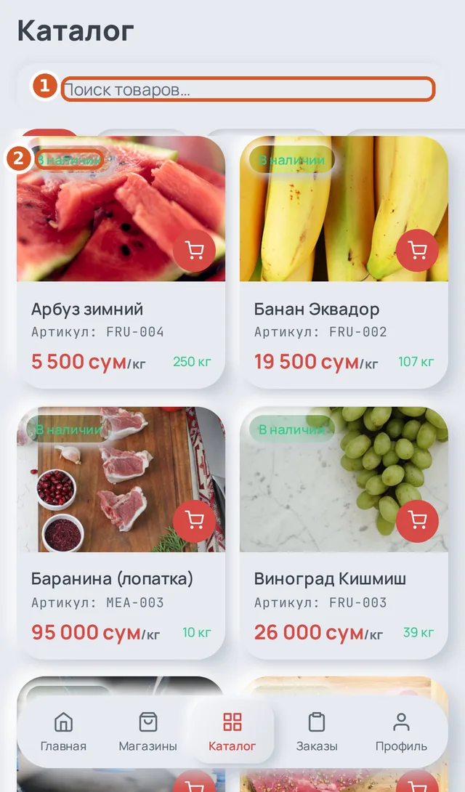
«Каталог» — справочник цен и остатков, когда магазин спрашивает «а что есть». Корзина на товаре → «Выберите магазин» → «Создать заказ» → «Способ оплаты» → «Подтвердить» — заказ на одну позицию. Тап по карточке открывает товар: количество «− n +» и «Добавить в заказ». Полный заказ удобнее собирать через «Новый заказ» — там сканер и черновик.
Новый заказ: шаг 1 — магазин

- «Новый заказ» с главной, «+ Новый» в «Заказах» или корзина на карточке магазина.
- Найдите магазин: поиск, фильтр по городу, блок «НЕДАВНИЕ». Рядом с названием — «Долг: …» — посмотрите его до того, как брать заказ.
- Выберите магазин → «Продолжить →».
Шаг 2 — товары
- Нажмите «Добавить товар» → откроется «Выбор товара». Ищите по названию или артикулу, либо нажмите камеру и наведите на штрих-код — «Каждый скан — плюс единица».
- У каждого товара — цена и «остаток N». «+» добавляет в корзину. Закончили — «Готово».
- В списке заказа у строки: «КОЛ-ВО» с «− n +», «СКИДКА (%)», «СУММА»; крестик убирает позицию. Заказать больше остатка нельзя.
- «Продолжить →» — к шагу 3.
Шаг 3 — итог и подтверждение
- «СПОСОБ ОПЛАТЫ»: «Наличные», «Карта», «Перевод» или «Долг».
- Проверьте таблицу «ТОВАР / КОЛ / СУММА» и итог. «Примечания» — что важно знать складу и курьеру.
- «Обещанный срок» — когда магазину обещали привезти; необязательно. Не ставьте дату, которую не называли: просроченные заказы подсвечиваются офису.
- «Подтвердить заказ» → «Заказ создан!». Заказ сразу резервирует остаток на складе; дальше его видит оператор (см. «Оператор офиса и склад»).
Заказы

- Сводка: «ВСЕГО», «НОВЫЕ», «ВЫПОЛНЕНЫ». Ниже — заказы по дням: «СЕГОДНЯ», «ВЧЕРА», дата.
- В заказе: состав, статус, оплата, срок. «Изменить» открывает «Редактировать заказ»: вкладка «Товары» (количества, позиции) → «Сохранить состав», вкладка «Детали» (заметки, скидка) → «Сохранить детали». «Отменить» есть, пока заказ «Новый» или «В обработке»; отгруженный заказ меняет только офис.
- Без связи заказы копятся вверху в блоке «ОЖИДАЮТ ОТПРАВКИ» с пометкой «Ожидает отправки» и уходят сами, как только появится сеть.
Без связи
- Магазины и каталог берутся из копии на телефоне; вверху видна дата копии — «Каталог сохранён … — связи нет, остатки и цены могли измениться».
- Заказ ложится в очередь: «Ошибка сети. Заказ сохранён офлайн. Итог будет пересчитан по ценам на момент отправки» — отправлять повторно не нужно.
- Отметки визитов и точки GPS тоже сохраняются и уходят сами. Ничего повторно нажимать не нужно.
Долги

- «Профиль» → «Мои долги» (или блок «ДОЛГИ» на главной). Вверху — общая сумма и число точек.
- В строке: магазин, номер заказа, дата, сколько дней прошло, адрес. Тап по строке открывает заказ, кнопка с номером — звонок.
- Деньги за долг агент в приложении не принимает: оплату проводит офис по заказу (см. «Оператор офиса и склад» и «Долг магазина — два правила»).
GPS
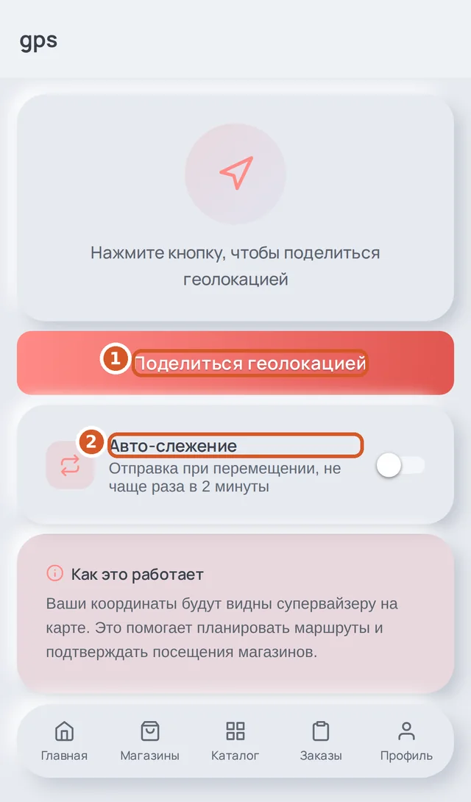
- Главная → плитка «GPS». При первом запросе телефона разрешите геолокацию «Всегда», иначе точки уходят только пока экран открыт.
- Включите «Авто-слежение» — отправка при перемещении, не чаще раза в 2 минуты. После первой отправки ниже видна «ПОСЛЕДНЯЯ ОТПРАВКА» и качество сигнала.
- «Поделиться геолокацией» — отправить точку прямо сейчас, например по просьбе супервайзера.
Зарплата
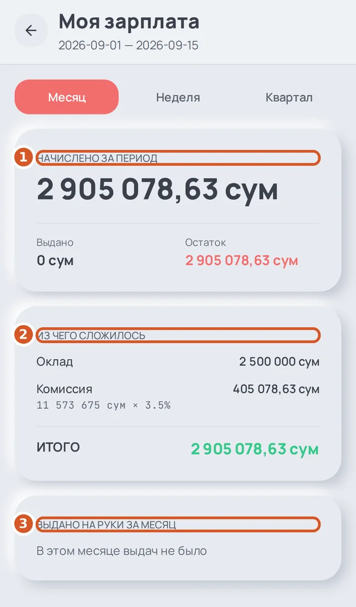
- «Профиль» → «Моя зарплата». Вверху «Начислено за период», под ним «Выдано» и «Остаток».
- «Из чего сложилось»: «Оклад», «Комиссия» (сумма продаж × процент), «Обед и дорожные», «Вычет за подозрительные визиты» — если такие были.
- «Выдано на руки за месяц» — каждая выдача отдельной строкой. Получили деньги — «Подтвердить получение денег» → «Получил»: у директора выдача помечается «подтверждено».
- Как считается процент и что идёт в P&L — см. «Часть 3: Зарплата».
Профиль, язык, выход
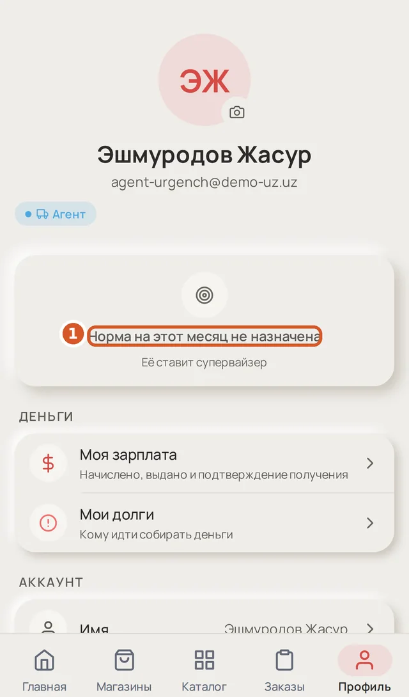
- Вкладка «Профиль». Вверху — карточка нормы: «План на <месяц>» — выручка, заказы, визиты от супервайзера и сколько уже сделано; нормы нет — «Норма на этот месяц не назначена».
- Имя можно поправить → «Сохранить профиль». «СМЕНА ПАРОЛЯ»: текущий, новый, повтор → «Изменить пароль».
- Прокрутите вниз: «Моя зарплата», «Мои долги», «ТЕМА» («Светлая» / «Тёмная»).
- Язык: блок «ЯЗЫК» → «Русский» или «O'zbekcha». Приложение переключается сразу и целиком, повторный вход не нужен; выбор запоминается на этом телефоне.
- «Выйти из аккаунта» → «Выйти». На чужом телефоне выходите всегда: ваши заказы и зарплата останутся открытыми.
Уведомления
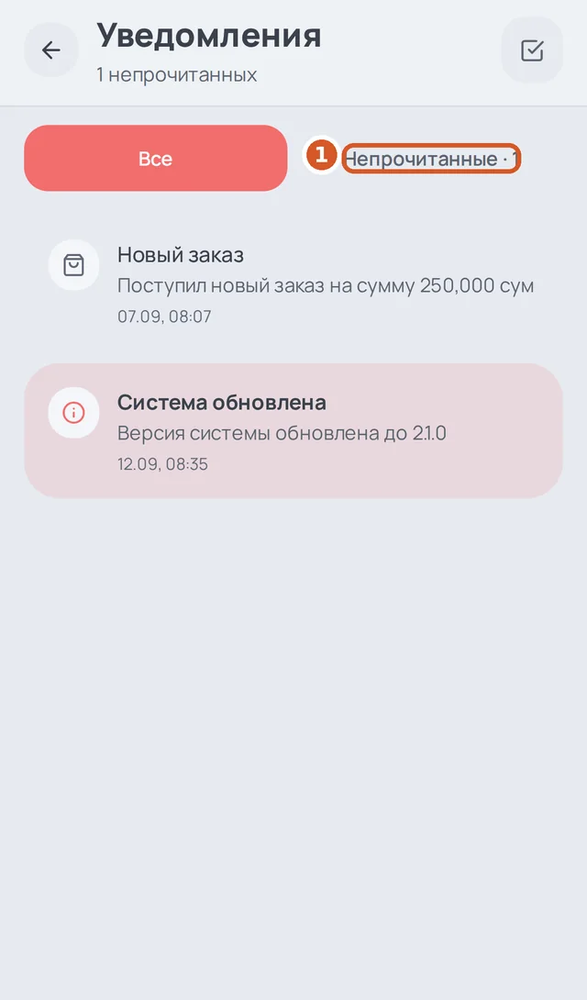
Колокольчик на главной → список: новые заказы, оплаты, изменения остатков, обновления системы. Непрочитанные подсвечены; галочка справа вверху — «Отметить всё прочитанным».
- Все точки плана отмечены «Готово» или «Отложить»
- В «Заказах» нет блока «ОЖИДАЮТ ОТПРАВКИ» и строк «Сервер отклонил»
- «Авто-слежение» было включено весь день
- Обещанные сроки в заказах — те, что назвали магазину
Курьер (телефон)
У курьера три вкладки: «Главная», «Доставки», «Профиль». Вся работа — на «Доставках»: заказы приходят туда после того, как оператор назначил курьера на погрузочный лист (см. «Оператор: Погрузочный лист и сборка»). Вход в приложение и смена языка — как у агента (см. «Торговый агент: Вход» и «Профиль, язык, выход»).
Главная
Плитки «ОЖИДАЮТ», «В ПУТИ», «ДОСТАВЛЕНО» и круг «ПРОГРЕСС» — состояние дня одним взглядом; ниже — «Последние доставки». Колокольчик — уведомления офиса.
Доставки: выезд и точка

- 1«Доставлено» — всё привезли; спросит «Доставлено?» → «Да»
- 2«Оформить подробно» — частичная оплата, возврат, долг с датой
- 3«Не доставлено» — с причиной
- Утром заказы стоят в разделе «ОЖИДАЮТ ДОСТАВКИ». У каждого — «Взять в доставку»; если точек больше одной, над списком есть «Выехал по всем (N)» → «Выехал». Заказы переходят в «В ПУТИ», офис видит это сразу.
- У точки: «На карте» ведёт по адресу. Отдали товар и взяли деньги — впишите «Сумма наличных» → «Доставлено» → «Да». Появится «Доставлено!».
- Магазин оплатил не всё, вернул часть товара или обещал доплатить позже — «Оформить подробно» (следующий раздел).
- Не отдали товар — «Не доставлено» → причина.
«Оформить подробно»

- 1«Частичный возврат» — часть позиций назад, за остальное деньги
- 2«ЗАВЕРШИТЬ ДОСТАВКУ» → «Подтвердить»
- Сверьте «СОСТАВ» с тем, что отдали. Выберите «РЕЗУЛЬТАТ ДОСТАВКИ»: «100% оплачен», «Частично оплачен», «Возврат» или «Частичный возврат».
- «ОПЛАТА»: впишите сумму, выберите «Наличные», «Карта» или «Перечисление». При частичной оплате ниже покажется «Долг: …» и поле «Когда обещал доплатить:» — дата как привыкли, 15.09.2026.
- «ВОЗВРАТ»: «Причина возврата:» — «Передумал», «Не влезло в машину», «Товар испорчен», «Не тот товар», «Клиент не тот», «Свой вариант». При частичном возврате укажите «Возвращённое количество:» по каждой позиции — оплата пересчитается за оставшееся.
- «Комментарий:» — что важно офису. «ЗАВЕРШИТЬ ДОСТАВКУ» → «Подтверждение доставки» → «Подтвердить».
«Не доставлено»

- В карточке заказа нажмите «Не доставлено» → откроется «Почему не доставлено?».
- Выберите причину или «Другое» и напишите «Что случилось» → «Не доставлено». Появится «Отмечено как недоставлено»; заказ вернётся в «Новые» на повторную доставку, товар остаётся за ним на складе, оператор увидит причину в заказе.
Без связи
- Все отметки записываются на телефон: «Записано на телефоне. Уйдёт на сервер, когда появится связь». Заказ с отложенным «Выехал» показывается «в пути» со всеми кнопками — работайте дальше.
- Отметку, которую сервер отклонил (например, офис уже закрыл заказ), видно с причиной и кнопками «Повторить» / «Убрать». Перед «Убрать» позвоните в офис.
- Деньги: наличные и карта записываются на заказ; долг магазина уменьшается на оплаченное. Что дальше делает офис — см. «Долг магазина — два правила».
Профиль и зарплата
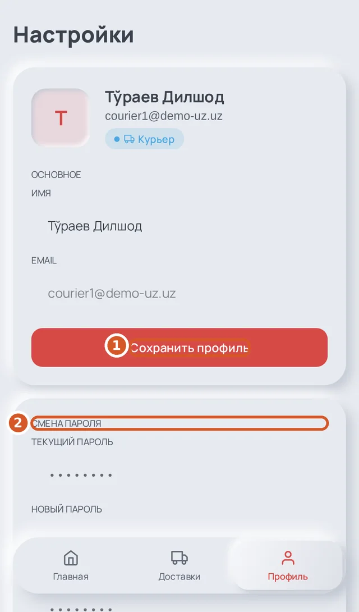
- «Профиль» → «Моя зарплата»: «Начислено за период», строка «Довезено × ставка» или «Сумма довезённого × процент» — способ оплаты выбирает директор для каждого курьера. Недовезённое не оплачивается.
- Получили деньги на руки — «Подтвердить получение денег» → «Получил».
- Язык: прокрутите профиль до блока «ЯЗЫК» → «Русский» или «O'zbekcha» — приложение переключается сразу. «Выйти из аккаунта» — внизу.
- В «Доставках» не осталось заказов «В ПУТИ»
- Нет строк «Сервер отклонил» и «Записано на телефоне»
- Наличные в кассе равны сумме отметок «Доставлено» и «Оформить подробно» за день
Мерчандайзер (телефон)
У мерчандайзера четыре вкладки: «Главная», «Магазины», «План», «Профиль». Заказов он не оформляет — его работа это отчёт о визите: фото полки и чек-лист присутствия товаров. Вход и смена языка — как у агента (см. «Торговый агент: Вход» и «Профиль, язык, выход»).
Главная
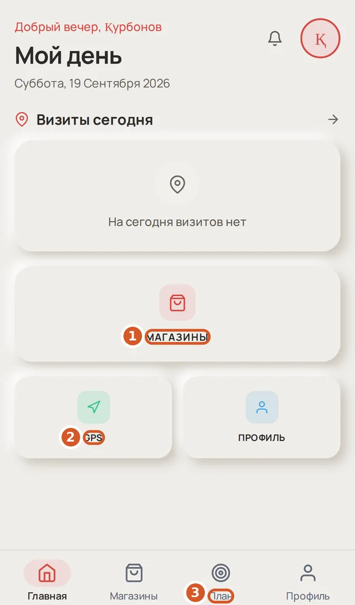
«Визиты сегодня» — те же точки, что на «Плане»; стрелка → открывает план. «На сегодня визитов нет» — план на день не назначен: спросите супервайзера (см. «Супервайзер»). GPS работает так же, как у агента (см. «Торговый агент: GPS»).
План

- 1«Готово» — у мерчандайзера открывает «Отчёт о визите»
- Вкладка «План». У каждой точки — название, адрес и две кнопки: «Отложить» и «Готово».
- В магазине нажмите «Готово» → откроется «Отчёт о визите». Визит засчитывается только после отправки отчёта.
- Не попали в точку — «Отложить» → «Пропущен».
Отчёт о визите
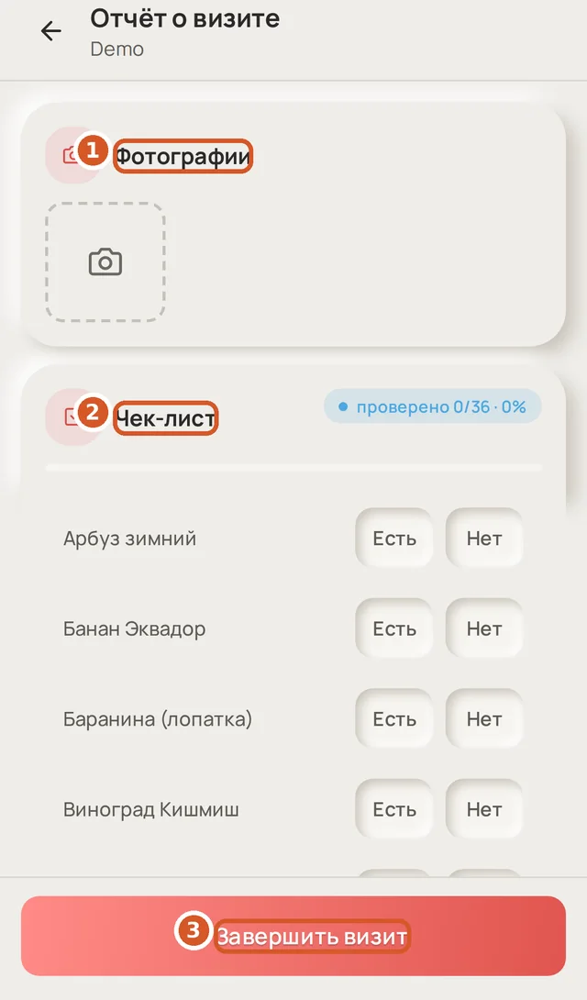
- «Фотографии»: нажмите пунктирный квадрат → «Добавить фото» → «Камера» или «Галерея». Снимите полку целиком и крупно — свой товар.
- «Чек-лист»: тап по товару — он есть на полке (кружок закрашивается, счётчик растёт). В полях справа впишите «Цена» и «Акция», если видите.
- «Заметки о конкурентах» — «Что видно на полках конкурентов…»: новинки, цены, выкладка.
- «Завершить визит» → «Завершить визит?» → «Отправить» → «Отчёт отправлен!». Точка в плане станет «Посещён».
Магазины
Территория → магазин: телефон, адрес, «Определить местоположение», фото магазина. «+» заводит новую точку — «Создать магазин». Подробно — см. «Торговый агент: Магазины и каталог».
Профиль
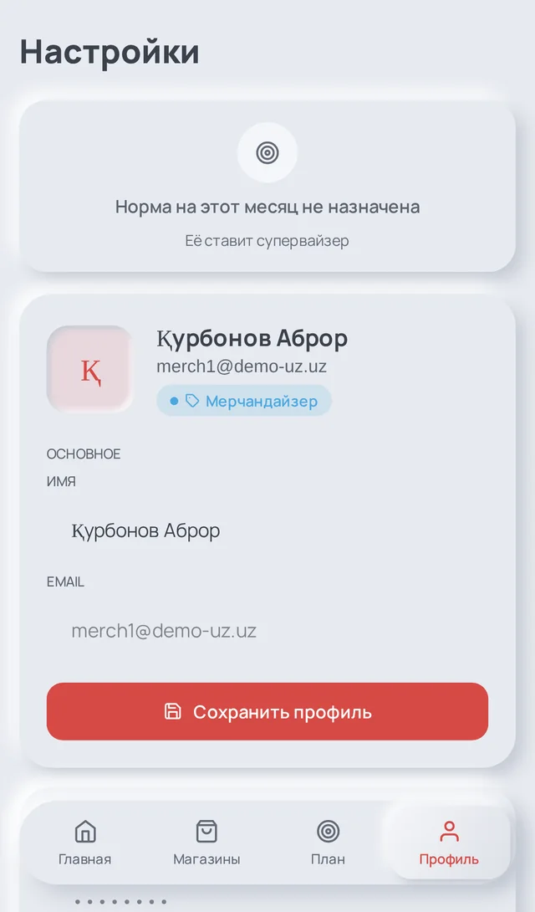
Норма на месяц — сколько визитов ждёт супервайзер; факт / план виден здесь и в карточке «ПЛАН МЕСЯЦА» вверху «Плана». Язык: прокрутите до блока «ЯЗЫК» → «Русский» или «O'zbekcha» — приложение переключается сразу. Внизу — «Выйти из аккаунта».
- Каждая точка плана — «Посещён» или «Пропущен»
- В каждом отчёте есть хотя бы одно фото полки
- Черновиков «Продолжить черновик?» не осталось
Часть 3. Деньги и остаток — как система считает
Цифры на экранах директора честные только тогда, когда команда понимает, что за ними стоит. Здесь четыре правила: как движется остаток, как считается долг магазина, из чего складывается зарплата и что попадает в P&L. Читать владельцу и бухгалтеру; оператору — разделы про остаток и долг.
Остаток: всего, резерв, доступно
На экране «Склад» у каждого товара три числа. «Всего» — сколько физически лежит на полке. «Резерв» — сколько занято открытыми заказами (новый, ожидает, в обработке, отгружен). «Доступно» — разница: это и есть то, что можно продать. Агент на телефоне («Остаток: …» у товара) и оператор в быстром заказе («свободно …») видят именно это число, и больше него заказать нельзя.
- Продают только с основного склада (★ в списке складов). Товар на другом складе для заказа невидим: «Склад» → «Перемещения» → «Переместить» → «Завести», а когда доехал — «Провести».
- Заказ резервирует остаток в момент оформления — и с телефона без связи тоже, как только уйдёт на сервер. Резерв держится, пока заказ открыт; снимается при отмене, удалении и при доставке.
- Со склада («Всего») товар уходит только при статусе «Доставлен» — по отчёту курьера или по «Выполнить» у оператора. Недовезённая часть возвращается в «Доступно» сама.
- Партии списываются по FEFO: первой уходит та, что раньше сгорает; без срока — последними. Просроченная партия в отгрузку не берётся — только в списание: «Скорректировать» → «Расход», инвентаризация или возврат поставщику.
- Инвентаризация: «Склад» → «Инвентаризация» → «Новая инвентаризация». Черновик снимает остатки на момент создания, считать можно несколько дней (сканер прибавляет по единице), затем «Применить». Недостача списывается с партий по FEFO; найденное сверх учёта ложится в остаток без партии.
Путь заказа: остаток и долг по статусам
| Статус | Что произошло | Остаток | Долг магазина |
|---|---|---|---|
| Новый | Оформлен агентом или оператором | Резерв: «Доступно» уменьшилось, «Всего» — нет | — (заказ со способом «Долг» должен уже сейчас) |
| Ожидает | Скидка агента выше порога — ждёт «Подтвердить» или «Отклонить» офиса | Резерв | — |
| В обработке / Отгружен | Офис ведёт заказ; лист собран, машина уехала | Резерв — склад ещё не списан | — |
| «Не доставлено» (курьер) | Магазин закрыт, не дозвонились — заказ вернулся в «Новый» без курьера | Резерв остаётся | — |
| Доставлен | Курьер отчитался или оператор нажал «Выполнить» | Списан со «Всего» по партиям FEFO; недовезённое — снова в «Доступно» | + сумма довезённого − оплаты по этому заказу |
| Отменён / Возвращён | Заказ снят или вернулся целиком | Резерв снят / товар вернулся на склад | Долг по заказу снят; оплаты по нему зачтутся магазину |
Сборка листа показывает партии по тому же правилу FEFO заранее, чтобы кладовщик брал именно их (см. «Оператор: Сборка листа и курьер»). Само списание происходит при «Доставлен» — по тому, что реально уехало.
Долг магазина — два правила
Возвраты вычитаются по двум разным правилам, и смешивать их нельзя: у долга нет отчётного месяца, у выручки нет отдельного заказа.
- Правило 1 — по заказу (долг). Долг магазина = сумма его доставленных заказов − оплаты по каждому из них + ручные «Новый долг» − ручные «Оплата» − проведённые возвраты. Заказ со способом оплаты «Долг» должен с момента оформления, остальные — с «Доставлен». Число пересчитывается заново после каждой операции и ниже нуля не опускается.
- Правило 2 — за период (выручка). В «Отчётах», P&L, KPI и комиссии возврат уменьшает выручку того месяца, в котором он проведён, а не месяца продажи: закрытый месяц не переписывается задним числом.
- Частичная доставка: сумма заказа уменьшается до довезённого, долг считается только по нему. Оплата больше остатка по заказу пишется отдельной строкой «Излишек сверх остатка по заказу …» и гасит долг по другим заказам магазина.
- Кредитный лимит («Магазины» → магазин → поле «Кредитный лимит (пусто — без лимита)»): заказ «Долг», при котором долг + сумма превысят лимит, не оформится — агент видит текст отказа у прилавка. Пусто — без лимита; ноль — в долг нельзя вовсе. Выход — принять оплату или поднять лимит.
- Возраст долга в отчёте считается с первого оформления заказа — даже если его возвращали в работу и оформляли снова.
Возвраты: при доставке и после
- При доставке: курьер — «Оформить подробно» → «Частичный возврат» → количество по строкам; оператор — «Выполнить» → у строки «Возврат» → «Завершить заказ». Заказ переписывается на довезённое: невывезенное сразу в «Доступно», долг — по довезённому, документ возврата не нужен.
- После доставки целиком: статус заказа «Возвращён» — товар возвращается на склад, долг по заказу снимается, из выручки заказ выпадает.
- После доставки частично — документ на экране «Возвраты» (фильтр «на рассмотрении»): «Одобрить» → «На склад» (годный товар) или «Списать» (брак, просрочка). Проведённый возврат уменьшает долг этого заказа и выручку месяца проведения; отклонённый денег не трогает. Кнопки «создать возврат» в программе пока нет — документ приходит только через API (интеграцию).
- Один возврат никогда не считается дважды: если заказ после проведённого возврата отменили, возврат из расчёта исключается — сумма заказа и так ушла целиком.
Зарплата: из чего складывается
Ставки задаёт директор: «KPI» → «Настройка ЗП». Там четыре блока: «Комиссия агентов» (% от продаж), «Оплата курьеров за доставку» (сум за заявку или % — переключатель у каждого), «Обед и дорожные» (суммы за день) и «Проценты по товарам». Оклад — на экране «Зарплаты», кнопка «Оклад» в строке сотрудника.
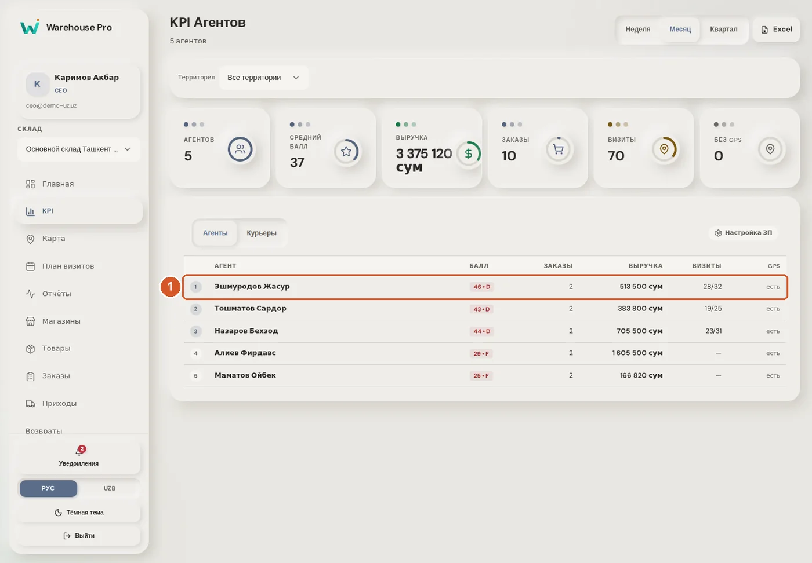
- 1Строка агента — разбор и зарплата за период
| Кому | Формула | Что важно |
|---|---|---|
| Агент | оклад + продажи × % − вычет | Продажи — доставленные заказы агента за период минус возвраты, проведённые в этом периоде. У товара из блока «Проценты по товарам» продажи считаются по его проценту, остальные — по проценту человека. Балл KPI денег не двигает. |
| Курьер | оклад + довезено × ставка (или сумма довезённого × %) + (обед + дорога) × рабочие дни | Довезённое — заказы «Доставлен», закреплённые за курьером, кто бы ни нажал кнопку. Сорванные доставки выплату не уменьшают. Рабочий день — день, когда курьер что-то довёз: пять доставок за день — один обед. |
| Вычет за подозрительные визиты | оклад × уровень фрода × ½ | Система только предлагает. Из зарплаты уходит после «применить» директором на экране «Зарплаты»; «снять» отменяет. |
Выдача и подтверждение
- «Зарплаты» → период (неделя, месяц, квартал) → в строке сотрудника «Выплатить» → «Выплата» или «Аванс», сумма («Весь остаток») → «Записать выдачу». Аванс уменьшает остаток так же, как выплата.
- «Выдать всем» — одной кнопкой записать остаток каждому, у кого он есть; «Только с остатком» отфильтрует список заранее.
- Вкладка «Выплаты»: каждая выдача с номером, датой и кто выдал; «Печать ордера» даёт расходный ордер с подписями «Выдал / Получил». «Ведомость» — Excel за период.
- Сотрудник видит выдачу на телефоне («Моя зарплата») и нажимает «Получил». Это только отметка: денег и остатка она не меняет; пусто значит «ещё не подтвердил».
- 1Выдать всем — остаток каждому, у кого он есть
P&L: что складывается в прибыль
| Строка | Что входит | По какой дате |
|---|---|---|
| Выручка | Заказы «Доставлен» минус проведённые возвраты | Заказ — по дате заказа; возврат — по дате проведения |
| Себестоимость | Цена закупки товара на момент оформления заказа × довезено − себестоимость возвращённого | Вместе с выручкой |
| Закупка (расходы приходов) | «Топливо», «Дорога», «Прочее» из завершённых приходов | По дате прихода |
| Зарплата | Выданное на экране «Зарплаты» — выплаты и авансы, а не начисленное | По дате выдачи |
| Валовая прибыль | Выручка − себестоимость | — |
| «Заработали за период» | Валовая прибыль − закупка − зарплата | — |
Выручка в «Отчётах» и в KPI считается тем же правилом, что и в P&L. Удалённый заказ исчезает отовсюду, поэтому удаление — только для ошибки ввода; настоящий заказ отменяют или возвращают, чтобы след остался.
Аудит-лог: кто и когда
«Аудит-лог» хранит чувствительные действия: создание и отмену заказа, принятую оплату и её отмену, смену кредитного лимита, корректировку склада и инвентаризацию, ставки и удержания из зарплаты, изменения пользователей и настроек. У каждой записи — кто, когда, что было и что стало. Фильтры по разделам; «Выгрузить CSV» — для бухгалтера. Стереть записи из журнала не может никто из сотрудников организации — его ведёт поставщик системы.
Часть 4. Что делать, если
Ситуации собраны из глав про роли и про деньги. В каждой строке — что нажать и что при этом произойдёт с остатком и долгом.
| Ситуация | Что делать |
|---|---|
| Агент говорит: «заказ не ушёл» | На телефоне «Заказы» → карточка «Ожидает отправки» — уйдёт при связи. «Сервер отклонил» — причина написана: не хватило «Доступно» на основном складе (оператор смотрит «Склад», при нужде «Перемещения») или превышен кредитный лимит (принять оплату или поднять лимит в карточке магазина). |
| Заказ висит в «Ожидает» | Так встаёт заказ агента со скидкой выше порога. Оператор: строка заказа → панель → причина написана рядом со статусом → «Подтвердить» (заказ станет «Новый») или «Отклонить». Пока заказ ждёт, остаток под ним держится в резерве. |
| Агенту отказано: «Кредитный лимит магазина … превышен» | Заказ в долг не оформился: долг + сумма выше лимита. Либо магазин гасит старый долг (оператор проводит оплату в вебе), либо директор поднимает лимит в карточке магазина. Пусто — без лимита; ноль — в долг нельзя. |
| Склад собрал меньше, чем в листе | Это недостача при сборке: она записана в строках листа и в уведомлении офису. Проверьте остаток и партии на экране «Склад», при расхождении — «Скорректировать» или инвентаризация. |
| Курьер привёз меньше или магазин взял не всё | У точки — «Оформить подробно» → «Частичный возврат» → количество по строкам → деньги за оставшееся → «Завершить доставку». Заказ переписывается на довезённое, долг — только по нему, невывезенное сразу свободно на складе. Если курьер уже нажал «Доставлено» на всё — оператор возвращает заказ в «Новый» и проводит «Выполнить» с возвратом по строкам. |
| Курьер не довёз: магазин закрыт, не дозвонились | «Не доставлено» → причина. Заказ возвращается в «Новый» без курьера, остаток остаётся в резерве, долга нет. Оператор ставит заказ в следующий лист или отменяет — тогда резерв освободится. |
| Магазин вернул товар через несколько дней после доставки | Целиком — статус заказа «Возвращён»: товар на склад, долг снят, из выручки заказ выпал. Частично — документ на экране «Возвраты» (заводится через API/интеграцию: кнопки в программе пока нет) → «Одобрить» → «На склад» или «Списать»: долг заказа и выручка месяца проведения уменьшатся на сумму возврата. Замена оформляется новым заказом. |
| Нужно вернуть закрытый заказ в работу | Оператор ставит статус «Новый»: резерв берётся заново, дата заказа становится сегодняшней, оплаты по нему остаются зачтёнными. Система откажет, если по заказу проведён возврат или он был довезён частично — тогда новый заказ на остаток. Возраст долга всё равно считается с первого оформления. |
| Магазин заплатил больше, чем должен по заказу | Излишек не теряется: он записан отдельной строкой «Излишек сверх остатка по заказу …» и гасит долг по другим заказам магазина. Виден в карточке магазина («Деньги магазина») и в «Акт сверки». |
| Магазин спорит о долге | Карточка магазина → «Акт сверки» → период → «Печать» или Excel: каждая отгрузка и оплата с остатком после неё. Ошибочный платёж — там же «Сторно» с причиной; след остаётся в журнале «Аудит-лог» (фильтр «Оплаты»). |
| Остаток на экране не совпадает с полкой | Одна позиция — «Склад» → «Скорректировать» → «Приход» / «Расход» / «Корректировка», количество, примечание → «Применить». Весь склад — «Инвентаризация» → «Новая инвентаризация» → подсчёт (сканер прибавляет по единице) → «Применить»: излишек и недостача по себестоимости видны до применения. Товар на другом складе — «Перемещения»: продать оттуда нельзя. |
| Магазин не находится в поиске | Ищите по владельцу или телефону; проверьте, что магазин не в архиве. |
| Просрочка на складе | «Отчёты склада» → блок «Что сгорает и на какую сумму». Списать: «Скорректировать» → «Расход» (списание берёт просроченные партии первыми), инвентаризация или возврат поставщику («Приходы» → «Контрагенты и долги» → «Вернуть товар»). В отгрузку просроченное не попадёт само. |
| Нужно отменить или исправить заказ | До «Доставлен» — состав в панели заказа или отмена: резерв освободится. После — только «Возвращён» целиком или документ возврата. Удаление — лишь для ошибочно введённого заказа: он исчезнет из всех отчётов; настоящий заказ отменяйте, чтобы след остался. |
| Зарплата агента «не сходится» | «KPI» → строка агента → «Детализация расчёта»: выручка за период (доставленные заказы минус возвраты, проведённые в периоде) × ставка; если у товаров свои проценты — строка так и скажет. Ставка изменилась — «Настройка ЗП» → «Пересчитать комиссии за месяц». Балл KPI на деньги не влияет. Вычет за визиты появляется только после «применить» директором. |
| Курьер говорит, что довёз больше, чем в зарплате | Считаются заказы «Доставлен», закреплённые за курьером в этом периоде, — кто бы ни нажал кнопку. Проверьте курьера в панели заказа и период (по дате доставки). Сорванные доставки не вычитаются; обед и дорожные — по дням с доставками. |
| Выдали зарплату по ошибке | Запись не удаляется. «Зарплаты» → «Выплатить» → сумма с минусом → «Записать выдачу»: остаток восстановится, обе записи останутся во вкладке «Выплаты» и в P&L. |
| P&L показывает себестоимость 0 или прибыль «слишком большую» | Цена закупки не заполнена в приходах: себестоимость запоминается в строке заказа при оформлении. Заполните цену закупки в приходе — новые заказы посчитаются верно, старые не пересчитываются. Проверьте также, что зарплата выдана через «Зарплаты»: иначе в расходы она не попадёт. |
| Сотрудник забыл пароль | «Забыли пароль?» на экране входа — письмо на e-mail. Директор: «Пользователи» → в строке сотрудника «Сбросить пароль». |
| Нет карты у супервайзера | У агента не разрешена геолокация «Всегда» или выключен GPS. «Без сигнала» на карте — позвоните агенту. |
| Не хватает функции в тарифе | Пробный период даёт все функции. Границы платных отчётов (P&L, KPI, долги) — по тарифу; обратитесь к поставщику. |
| Как поменять язык | Веб: РУС / UZB внизу меню. Телефон: «Профиль» → «Язык». |
Словарь терминов
| Русский | O'zbekcha | Что это |
|---|---|---|
| Заказ | Buyurtma | Заявка магазина, оформленная агентом или оператором; резервирует остаток с момента оформления |
| Статус заказа | Buyurtma holati | Новый → Ожидает / В обработке / Отгружен → Доставлен; закрытые: Отменён, Возвращён |
| «Ожидает» | «Kutishda» | Заказ агента со скидкой выше порога — ждёт «Подтвердить» или «Отклонить» офиса |
| Порог скидки | Chegirma chegarasi | Максимальная скидка полевого сотрудника («Настройки» → «Компания»); выше — заказ в «Ожидает» |
| Способ оплаты | To'lov usuli | Наличные, карта, перечисление или «Долг»; заказ «Долг» должен с момента оформления |
| Погрузочный лист | Yuklash varaqasi | Задание складу и рейс курьера из нескольких заказов |
| Сборка | Yig'ish | Подтверждение по строкам листа, сколько собрано; недостача уходит офису уведомлением |
| Партия / срок | Partiya / muddat | Порция товара с одним сроком годности из одного прихода |
| FEFO | FEFO | «Раньше сгорает — раньше уходит»: порядок списания партий; просроченная в отгрузку не берётся |
| Остаток («Всего») | Qoldiq («Jami») | Сколько товара физически лежит на складе |
| Резерв | Zahira | Часть остатка, занятая открытыми заказами |
| Доступно (свободно) | Mavjud | Всего − резерв; столько можно продать |
| Основной склад | Asosiy ombor | Склад со звёздочкой ★ — единственный, с которого продают; остальные — хранение |
| Перемещение | Ko'chirish | Передача товара между складами: «Завести» — уехал, «Провести» — доехал |
| Корректировка остатка | Qoldiqni tuzatish | «Скорректировать»: приход, расход или корректировка одной позиции с примечанием |
| Инвентаризация | Inventarizatsiya | Пересчёт всего склада документом: черновик → подсчёт → «Применить» |
| Порог (минимальный остаток) | Chegara (minimal qoldiq) | Ниже него товар подсвечивается красным и попадает в алерты директора |
| Мёртвый сток | O'lik stok | Товар без продаж за период |
| Дозаказ | Qayta buyurtma | Подсказка склада, что пора заказать у поставщика |
| Приход | Kirim | Поступление товара от поставщика: строки, партии, цена закупки, расходы на доставку |
| Цена закупки | Xarid narxi | Цена в строке прихода; становится себестоимостью товара в новых заказах |
| Возврат поставщику | Yetkazib beruvchiga qaytarish | Товар обратно поставщику; списывает остаток, просроченные партии — первыми |
| Частичная доставка | Qisman yetkazish | Довезли не всё: заказ переписан на довезённое, остальное снова свободно на складе |
| Недовоз | Yetkazilmadi | «Не доставлено» с причиной: заказ вернулся в «Новый», резерв остался |
| Возврат (документ) | Qaytarish (hujjat) | Товар от магазина после доставки: «На склад» или «Списать»; уменьшает долг заказа и выручку месяца проведения |
| Долг магазина | Do'kon qarzi | Доставленное − оплаты по заказам ± ручные записи − проведённые возвраты; ниже нуля не бывает |
| Кредитный лимит | Kredit limiti | Потолок долга: заказ «Долг» сверх него не оформится; пусто — без лимита, ноль — в долг нельзя |
| «Новый долг» | «Yangi qarz» | Ручное начисление на магазин без заказа (карточка магазина → «Добавить платёж») |
| Излишек | Ortiqcha to'lov | Оплата сверх остатка по заказу; отдельной строкой гасит другие долги магазина |
| Сторно | Storno | Отмена ошибочного платежа с причиной; след в аудит-логе |
| Акт сверки | Solishtirma dalolatnoma | Ведомость по магазину за период: отгрузки, оплаты и остаток после каждой |
| Возраст долга | Qarz yoshi | Дней с первого оформления заказа; корзины до 7, 8–30, 31–60, больше 60 |
| Выручка | Tushum | Сумма заказов «Доставлен» за период минус возвраты, проведённые в периоде |
| Себестоимость | Tannarx | Цена закупки товара на момент оформления заказа × довезено |
| Валовая прибыль | Yalpi foyda | Выручка − себестоимость |
| Расходы | Xarajatlar | Расходы приходов (топливо, дорога, прочее) + выданная зарплата |
| P&L («Доходы и расходы») | P&L («Foyda va zarar») | Экран прибыли за период со сравнением с прошлым периодом |
| Оклад | Maosh | Фиксированная часть зарплаты за месяц |
| Комиссия | Komissiya | Процент от продаж агента за период; у товара может быть свой процент |
| Ставка курьера | Kuryer stavkasi | Сумма за довезённую заявку или процент от суммы довезённого — способ задаётся по человеку |
| Обед и дорожные | Tushlik va yo'l puli | Суммы курьеру за каждый рабочий день — день, в который он что-то довёз |
| Вычет за подозрительные визиты | Shubhali tashriflar uchun ushlanma | Предложение системы по уровню фрода; из зарплаты уходит только после «применить» директором |
| Уровень фрода | Frod darajasi | Доля подозрительных визитов: далеко от магазина, подменённые координаты, слишком короткие, повторные в один магазин; без GPS-следа визит просто не проверен |
| Начислено / Выдано / Остаток | Hisoblangan / Berilgan / Qoldiq | Расчёт за период, выданные деньги и разница между ними |
| Аванс | Avans | Выдача до конца периода; уменьшает остаток так же, как выплата |
| Ведомость | Vedomost | Excel-выгрузка зарплат за период |
| Расходный ордер | Xarajat orderi | Печатная форма выдачи с подписями «Выдал / Получил» |
| «Получил» | «Oldim» | Отметка сотрудника на телефоне, что деньги получены; денег не меняет |
| KPI / балл | KPI / ball | Показатели агента: план, выручка, конверсия, возвраты, долги; на деньги не влияет |
| Визит | Tashrif | Посещение точки агентом или мерчандайзером по плану |
| Норма | Norma | Сколько визитов в месяц должен сделать агент |
| Территория | Hudud | Маршрут агента; по ней супервайзер расставляет план на месяц |
| Прайс-лист | Narxnoma | Свои цены для привязанных магазинов; нет строки — цена из карточки товара |
| Аудит-лог | Audit jurnali | Журнал чувствительных действий: кто, когда, что было и что стало |
| Пробный период / тариф | Sinov davri / tarif | Пробный даёт все функции; платные отчёты (P&L, KPI, долги) — по тарифу |
Bu kitobdan qanday foydalanish
Warehouse Pro — distribyutor hisobi: dala, ombor, qarzlar va oylik bitta tizimda. Agent buyurtmani peshtaxta oldida telefondan rasmiylashtiradi, ombor uni partiyalar ko'rsatilgan ro'yxat bo'yicha yig'adi, kuryer tovarni topshirib pulni oladi, direktor esa o'sha zahoti tushum, qoldiq va qarzlarni ko'radi. Kitob egasi va uning jamoasi uchun yozilgan: besh kunda ishni yo'lga qo'yish va birinchi haftadanoq halol raqamlarga ega bo'lish.
1-qism — kunma-kun joriy etish rejasi: har kun yo'riqnoma sifatida yozilgan — menyuda qayerda, nimani bosish, nimani ko'rish va kun oxirida qanday tekshirish. 2-qism — har bir rolning ish kuni, haqiqiy ekran suratlari bilan: avval ofis uchun veb, keyin dala uchun telefon. 3-qism — tizim qoldiq, qarz va oylikni qanday hisoblaydi: buni egasi va buxgalter o'qib chiqishi kerak. 4-qism — biror narsa noto'g'ri ketsa, nima qilish kerak.
| Belgi | Ma'nosi |
|---|---|
| «Buyurtmalar» → «Yangi buyurtma» | Chapdagi menyu bandi, so'ng ekrandagi tugma — nomlar dasturda qanday yozilgan bo'lsa, shunday berilgan |
| 1, 2, 3… qadamlar | Tartib bilan bajaring: bir qadam — bitta amal va undan keyin nimani ko'rishingiz |
| Suratdagi ① ② ③ | Izohlar: suratdagi raqamlar uning ostidagi izohlarga mos keladi |
| Maslahat | Tajribali jamoalar shunday qiladi — majburiy emas, lekin vaqtni tejaydi |
| Diqqat | Pul yoki qoldiqqa ta'sir qiladigan va bekor qilish qiyin bo'lgan amal |
| Tekshiring | Qadam yoki kun oxiridagi tekshiruv ro'yxati: to'g'ri chiqmaguncha oldinga o'tmang |
Suratlar haqiqiy dasturdan, «Demo UZ» namoyish tashkilotida olingan. Sizda o'z do'konlaringiz va mahsulotlaringiz bo'ladi, lekin tugmalar va ekranlar o'sha-o'sha. 1-qismdagi ba'zi suratlar operator nomidan olingan: direktorda ham ekranlar o'sha, faqat chapdagi menyu uzunroq. Interfeys tili — rus yoki o'zbek — istalgan vaqtda almashtiriladi: vebda menyuning pastida («РУС» / «UZB»), telefonda profilda.
1-qism. Besh kunda joriy etish
Reja 3–15 agentli va bitta omborli tashkilotga mo'ljallangan. Har kun tekshiruv bilan tugaydi: u o'tsa, keyingi kunni boshlash mumkin. Hammasi vebda direktor yoki operator tomonidan bajariladi; telefon uchinchi kuni ulanadi. Kunlar tartibi tasodifiy emas: mahsulot va qoldiqsiz buyurtma qabul qilib bo'lmaydi, do'kon va odamlarsiz uni qabul qiladigan kishi yo'q, varaqa va kuryersiz pul hisobotgacha yetib bormaydi.
| Kun | Nima qilamiz | Kim | Kun oxiridagi tekshiruv |
|---|---|---|---|
| 1 | Kompaniya, ombor, mahsulotlar, boshlang'ich qoldiq | Direktor | «Ombor»da barcha mahsulotlar to'g'ri «Mavjud» bilan |
| 2 | Do'konlar, hududlar, xodimlar va rollar | Direktor, operator | Har bir xodim tizimga kirib, o'z ekranini ko'rdi |
| 3 | Dala: agentlar telefonlari, tashrif rejasi, birinchi buyurtmalar | Supervayzer, agentlar | Agent buyurtmasi operatorning «Buyurtmalar»ida paydo bo'ldi |
| 4 | Ombor va yetkazish: varaqa, yig'ish, kuryer, pul | Operator, kuryer | Birinchi buyurtma «Yetkazildi»gacha yo'lni bosib o'tdi, pul va qarz to'g'ri chiqdi |
| 5 | Nazorat: bosh sahifa, hisobotlar, qarzlar, P&L, oylik, audit | Direktor | Direktor kunning beshta savoliga birinchi ekrandanoq javob berdi |
1-kun. Ro'yxatdan o'tish
Nima uchun: ro'yxatdan o'tish tashkilotni, direktor hisobini va asosiy omborni yaratadi — keyin qoldiq va pul shularga bog'lanadi. Bu besh daqiqa.
- Ro'yxatdan o'tish sahifasini oching: «Ismingiz», «Kompaniya nomi», Email, «Parol (kamida 8 ta belgi)» → «Ro'yxatdan o'tish». Bu e-mail direktorning loginiga aylanadi — baza nusxalari va to'lov haqidagi xatlar ham unga keladi.
- Nollar bilan «Bosh sahifa» ochiladi — shunday bo'lishi kerak. Tizim «Основной склад» omborini (sotuv undan) allaqachon yaratdi va 14 kunlik sinov davrini yoqdi. Omborni qayta nomlash: «Sozlamalar» → «Omborxonalar» → «Omborxonani tahrirlash» belgisi → «Nomi», «Manzil», «Shahar» → «Saqlash».
1-kun. «Sozlamalar»: kompaniya va omborlar
Nima uchun: rekvizitlar har bir yuk xatida chop etiladi, valyuta narxlar, qarzlar va oylik qaysi pulda hisoblanishini belgilaydi, chegirma chegarasi va buyurtma nuqtasi esa keyin sizning ishtirokingizsiz pulni asraydigan ikki chegara.
- «Sozlamalar» → «Kompaniya»: «Kompaniya nomi», «Manzil», «STIR», «Direktor», «Telefon». Bu maydonlar yuk xatlari va hisob-fakturalarga tushadi.
- O'sha yerda «Valyuta» — «UZS — O'zbek so'mi»ni (yoki USD / RUB) tanlang. Narxlar, qarzlar va oylik shu pulda hisoblanadi; birinchi buyurtmalardan keyin uni o'zgartirish — hammasini qo'lda qayta hisoblash degani. Hozir hal qiling.
- «Bank rekvizitlari»: «Bank», «Hisob raqam», «MFO» — to'lov hisob-fakturalari uchun. «Logotipni yuklash» — u hujjatlar sarlavhasiga qo'yiladi.
- «Dala xodimlari uchun chegirma chegarasi, % (bo'sh — chegarasiz)»: agentning chegaradan yuqori chegirmasi o'z-o'zidan o'tmaydi — buyurtma «Kutishda»ga tushadi va operator hal qiladi.
- «Yangi tovarlar uchun buyurtma nuqtasi (bo'sh — 10)»: qoldiq undan pastga tushsa, tizim qayta buyurtma berishni eslatadi. Alohida mahsulot uchun chegara uning kartochkasida o'zgartiriladi.
- «Saqlash». So'ng «Sozlamalar» → «Omborxonalar»: «Основной склад» omborida «Asosiy» belgisi turibdi. Qo'shimcha omborlar — «Omborxona qo'shish» → «Nomi», «Manzil», «Shahar» → «Qo'shish» — faqat saqlash va ko'chirish uchun; sotuv faqat asosiy ombordan.

1-kun. «Mahsulotlar»: katalogni yuklash
Nima uchun: buyurtmani faqat katalogdagi mahsulotga qabul qilish mumkin. Sotish narxi tushumni, tannarx P&L'dagi marjani, shtrix-kod kirim va yig'ishdagi skanerni, qadoq esa peshtaxta oldida quti bilan sanashni beradi.
- «Mahsulotlar» → «Import» → «Shablonni yuklab olish». Ustunli Excel-fayl ochiladi: «Код», «Штрихкод», «Название», «Категория», «Себестоимость (сум)», «Цена продажи (сум)», «Ед. измерения», «Вес (кг)», «Мин. остаток», «Остаток на складе», «Описание», «Фото URL».
- Qatorlarni to'ldiring. Kod, nom va sotish narxi majburiy; tannarx — P&L marjani hisoblashi uchun; «Ед. измерения»: kg, l, pcs (dona), box, pack. Har bir mahsulotning o'z kodi — keyin u bo'yicha qidiriladi va skanerlanadi.
- Faylni import oynasiga tashlang yoki «yoki tanlash uchun bosing» maydonini bosing. Tizim birinchi qatorlar va xatolarni ko'rsatadi — faylda tuzating va qayta yuklang, hali hech narsa yozilmagan.
- «Import qilish — N qator» → «Tayyor». Mahsulotlar ro'yxatda paydo bo'ldi; yuqoridagi «JAMI MAHSULOTLAR» hisoblagichi fayldagi qatorlar soniga teng.
- Yakka mahsulot — «Qo'shish»: «Kod *», «Shtrix-kod (ixtiyoriy)», «Nomi *», «Kategoriya», «Tannarx», «Sotish narxi *», «1 dona vazni, kg», «Qayta buyurtma chegarasi», «Qadoqda, dona (12)», «Qadoq nomi (quti)», «Tavsif» → «Saqlash».

1-kun. «Kirim»: boshlang'ich qoldiq
Nima uchun: qoldiq faqat kirim orqali paydo bo'ladi. Kirimning har bir qatori — yaroqlilik muddatli partiya; ular bo'yicha ombor keyin buyurtmalarni «muddati oldin tugaydigani oldin ketadi» (FEFO) tartibida yig'adi, direktor esa nimaning muddati yaqinda tugashini ko'radi.
- Javonlarni sanab chiqing. Har bir mahsulot bo'yicha haqiqiy miqdor, oziq-ovqat uchun esa yorliqdagi partiya va yaroqlilik muddati kerak.
- «Kirim» → «Yangi kelish». Boshlang'ich qoldiq uchun «Mashina ma'lumotlari» va «Sana va xarajatlar»ni o'zgartirmang (sana bugungi bo'lib qo'yiladi); «Yetkazib beruvchi va qarz» — «Yetkazib beruvchisiz» (aks holda tizim sizga yetkazib beruvchiga qarz yozadi).
- Mahsulot qatori: «Mahsulot tanlang…» → «Miqdor» → «Tannarx» (birlik xarid narxi) → «Partiya» → «Muddati». Keyingi mahsulot — «Mahsulot qo'shish». Skaner bilan tezroq: kursor «Shtrix-kod + Enter»da, har bir skan bittadan qo'shadi.
- «Izohlar»ga «boshlang'ich qoldiq» deb yozing — bir yildan keyin bu raqamlar qayerdan kelganini tushuntiradi.
- Shakl pastida: «Saqlash va yakunlash». «Ombor»dagi qoldiq darhol o'zgaradi. Faqat «Saqlash» — qoralama: qoldiq o'zgarmaydi, kelish «Kutilmoqda» holatida qoladi; keyin ro'yxatdan yakunlash mumkin: «Tushirish» → «Yakunlash».

1-kun. Tekshiruv: «Ombor»
Nima uchun: «Ombor» — qoldiq agent peshtaxta oldida ko'rgandek ko'rsatiladigan yagona joy: «Mavjud» = «Jami» minus qabul qilingan buyurtmalar uchun «Zahira». Bu yerda raqamlar javonlarga mos kelmasa, ertangi barcha buyurtmalar havoga qabul qilinadi.
- «Ombor» → «Qoldiqlar» yorlig'i. Yuqorida — «POZITSIYALAR», «JAMI KG», «OMBOR QIYMATI» (tannarx bo'yicha), «O'LIK STOK», «KAM STOK».
- Ro'yxatni ko'rib chiqing: har bir mahsulotda «Mavjud» javondagiga teng. 1-kuni «Zahira» — nol. Qizil qatorlar — chegaradan past: yo qayta buyurtma bering, yo mahsulot kartochkasida «Qayta buyurtma chegarasi»ni to'g'rilang.
- Miqdorda xato bo'lsa — qatordagi «Tuzatish»: «OPERATSIYA TURI», «MIQDOR», «IZOH» (sabab) → «Qo'llash». Tuzatish «Audit jurnali»ga tushadi — bu normal, shunday mo'ljallangan.
- Farqlar ko'p bo'lsa — «Inventarizatsiya» yorlig'i → «Yangi inventarizatsiya»: tizim shu paytdagi qoldiqlarni oladi, siz javonlarni sanaysiz (qo'lda yoki «Shtrix-kod + Enter» / «Skaner») → «Qo'llash» — barcha farqlar bitta hujjat bilan o'tkaziladi.

- «Sozlamalar» → «Kompaniya»: valyuta, rekvizitlar, chegirma chegarasi va buyurtma nuqtasi to'ldirilgan
- Barcha mahsulotlar yuklangan; sotiladiganlarida sotish narxi, tannarx va o'lchov birligi bor
- Boshlang'ich qoldiq kirimi yakunlangan — holati «Yakunlandi», «Kutilmoqda» emas
- «Ombor» → «Qoldiqlar»: «Mavjud» javonlarga mos, «Zahira» — nol
2-kun. «Do'konlar»: nuqtalar va hududlar
Nima uchun: do'kon — sizga pul qarz bo'lgan tomon. Boshlang'ich qarz va kredit limiti shu yerda kiritiladi, va shu kundan tizim qarzni o'zi yuritadi: har bir yetkazish qo'shadi, har bir to'lov kamaytiradi. Hudud — agentning marshruti, u bo'yicha supervayzer oylik rejani joylashtiradi.
- «Do'konlar» → «Import» → «Shablonni yuklab olish». Ustunlar: «Название», «Владелец», «Телефон», «Город», «Район», «Адрес», «Долг», «Широта», «Долгота», «Территория», «Примечания».
- «Долг» — do'kon bugungi kunda daftar bo'yicha sizga qancha qarz. Qarz qo'lda kiritiladigan yagona payt shu: keyin u yetkazishlar va to'lovlar bo'yicha hisoblanadi. «Территория» — nomi; bunday hudud hali bo'lmasa, import uni yaratadi.
- Faylni yuklang → oldindan ko'rishni tekshiring → «Import qilish — N qator». Yuqoridagi «JAMI DO'KONLAR» va «UMUMIY QARZ» daftaringizga mos kelishi kerak.
- Yakka do'kon — «Qo'shish»: «Nomi *», «Egasi», «Telefon», «Shahar», «Tuman», «Manzil», «Telegram havolasi (GPS uchun)» — Telegram'dan geolokatsiya havolasini qo'ying, koordinatalar o'zi qo'yiladi; «— Agent —», «— Territoriya —» → «Saqlash».
- Hududlar: «Territoriyalar» (yuqori o'ngdagi tugma) → «Territoriya qo'shish» — nom va rang; yoki «Do'konlardan» → «Shaharlar» / «Tumanlar» — tizim yuklangan manzillardan hududlarni o'zi yig'adi.
- Kredit limiti — do'kon kartochkasida: do'konni oching → «O'zgartirish» → «Kredit limiti (bo'sh — limitsiz)» → «Saqlash». Agentda limitdan oshgan qarzga buyurtma o'tmaydi: tizim oshib ketgani haqida xabar bilan rad etadi — agent to'lov oladi yoki ofis limitni ko'taradi.

- 1Nom, egasi va telefon bo'yicha qidiruv — uchalasini ham to'ldiring
2-kun. «Foydalanuvchilar»: xodimlar va rollar
Nima uchun: rol odam nimani ko'rishi va nimani o'zgartira olishini belgilaydi. Agent boshqalarning do'konlari va oyliklarini ko'rmaydi, operator P&L ko'rmaydi, kuryer faqat o'z yetkazishlarini ko'radi. Bu ham pulni himoya qilish, ham tartib: har kim o'z ekrani uchun javob beradi.
- «Foydalanuvchilar» → «Yaratish». «Foydalanuvchi yaratish» shakli: «ISM *», «EMAIL *», «PAROL *» (kamida 8 ta belgi), «LAVOZIM *» → «Foydalanuvchi yaratish». Xodim shu parol bilan darhol kiradi; uni «Sozlamalar» → «Profil»da o'zgartira oladi.
- Har rolga bittadan odam kiriting: operator, supervayzer, agent, kuryer, merchandayzer. Rollar — quyidagi jadvalda. Ikkinchi direktorni kiritib bo'lmaydi — shunday mo'ljallangan.
- Agentga hudud biriktiring: agent qatoridagi «Ish zonasi» belgisi yoki sahifa pastidagi «Agentlar hududlari» bloki → «O'zgartirish» → hududlarni tanlang → «Saqlash». Hududsiz agentda 3-kuni reja bo'lmaydi.
- Xodim ketdi — «O'chirish» (qatordagi quvvat belgisi). Uning buyurtmalari, qarzlari va tarixi qoladi; u endi kira olmaydi. Parolni unutdi — «Parolni tiklash» (kalit belgisi).
- Direktor uchun — ikki bosqichli himoyani yoqish: «Sozlamalar» → «Profil» → «Ilova kodi bilan kirish» → «Yoqish» → «Sozlash kaliti»ni Google Authenticator'ga kiriting → «Ilovadagi birinchi kod» → «Tasdiqlash va yoqish». Usiz baza nusxasini yuklab olib va amallar jurnalini tozalab bo'lmaydi.
- Agar operatoringiz «o'ng qo'l» emas, «telefondagi odam» bo'lsa: «Sozlamalar» → «Operator huquqlari» → «Buyurtmalarni o'chirish», «Qoldiqlarni tuzatish», «Mukofotni boshqarish»ni olib tashlang → «Saqlash». Rol shiftni belgilaydi, bu yerda siz uni faqat pasaytirasiz.

| Rol | Veb | Telefon | Nimani ko'radi |
|---|---|---|---|
| Rahbar (direktor) | ha | ha | Hammasi: pul, hisobotlar, P&L, oylik, sozlamalar, foydalanuvchilar, audit jurnali |
| Operator | ha | ha (ko'rish) | Buyurtmalar, do'konlar, mahsulotlar, ombor, kirim, qaytarishlar; oylik — faqat o'ziniki |
| Supervayzer | ha | ha | Xarita, tashrif rejasi, agentlarning KPI va oyligi, do'konlar |
| Agent | qisman | ha | O'z do'konlari, buyurtmalar, reja, qarzlar, KPI va oylik |
| Kuryer | qisman | ha | O'z yetkazishlari va oylik |
| Merchandayzer | qisman | ha | Tashrif rejasi va javon bo'yicha hisobotlar |
- Barcha do'konlarda telefon va hudud bor; «UMUMIY QARZ» daftarga mos keldi
- Kredit limitlari hech bo'lmaganda qarzdorlarga qo'yilgan
- Har bir xodim o'z paroli bilan kirib, o'z ekranini ko'rdi
- Har bir agentda hudud bor
- Direktorda ikki bosqichli himoya yoqilgan
3-kun. Dala: telefonlar, reja, birinchi buyurtmalar
Nima uchun: peshtaxta oldida telefondan qabul qilingan buyurtma darhol qoldiqni band qiladi va operatorga tushadi — qo'ng'iroqlar va qayta yozishsiz. Tashrif rejasi agentga qayerga borishni, supervayzerga esa kim yetib borganini aytadi.
- Agentlar, kuryerlar va merchandayzerlarga ilovani o'rnating (APK — yetkazib beruvchingizdan). Kirish — «Foydalanuvchilar»da kiritilgan o'sha e-mail va parol bilan; til — profilda.
- Har bir telefonda geolokatsiyaga «har doim» ruxsat bering. Usiz supervayzerning xaritasi bo'sh bo'ladi, tashriflar esa tasdiqlanmaydi.
- Supervayzer vebda: «Tashrif rejasi» → «Oy» yorlig'i → «Xodim», «Nima qo'yamiz» (hudud), «Hafta kunlari» → «Oyni joylashtirish» (tanlagach tugma «Joylashtirish — N tashrif» deb ko'rsatadi). Tizim nuqtalarni kunlarga o'zi taqsimlaydi.
- Agent telefondan: bosh sahifa «Bugungi tashriflar»ni ko'rsatadi; «YANGI BUYURTMA» plitkasi (yoki «Do'konlar»da do'kon yonidagi savat belgisi) → do'kon → «Mahsulot qo'shish»: «Nomi yoki artikuli…» qidiruvi yoki skaner, qatordagi «+» — qoldiq qo'shishdan oldin ko'rinadi → «Tayyor» → miqdor «− maydon +» → «Davom etish →» → to'lov usuli → «Buyurtmani tasdiqlash».
- Birinchi buyurtmalarni supervayzer huzurida qiling: peshtaxta oldida bir daqiqa — va odam boshqa so'ramaydi. Operator shu vaqtda «Buyurtmalar»ni kuzatadi — buyurtma «Yangi» holatida paydo bo'lishi kerak.

- Barcha agentlarda haftalik reja bor
- Agentning birinchi buyurtmasi operatorning «Buyurtmalar»ida «Yangi» holatida ko'rinadi
- «Ombor»da buyurtma qilingan mahsulotda «Zahira» paydo bo'ldi
- Agent supervayzerning «Xarita»sida ko'rinadi
4-kun. Ombor va yetkazish
Nima uchun: bu qoldiq pulga aylanadigan kun. Varaqa — omborga topshiriq va kuryer reysi; yig'ish partiyalarni hisobdan chiqaradi; yetkazish naqd pul va do'kon qarzini yozadi. Har bir qadamni bitta odam bajaradi, tizim esa kimligini eslab qoladi.
- Operator: «Buyurtmalar» → kun buyurtmalarini belgilash → «Yuklash varaqi» → «Varaqa tuzish» → «Chop etish» yoki «Tayyor, chop etmasdan». Varaqa — omborga topshiriq va ayni paytda kuryerning reysi.
- Yig'ish: «Yuklash varaqalari» → «Yig'ish». Tizim qancha kerakligini va qaysi partiyalardan olishni (FEFO) ko'rsatadi; omborchi «Yig'ildi»ni faqat yetishmagan joyda o'zgartiradi → «Yig'ishni tasdiqlash». Kam bo'lsa — kamomad, ofis bu haqda darhol biladi.
- Kuryer: «Yuklash varaqalari» oynasida varaqa qatoridagi «Kuryer tayinlanmagan» ro'yxatidan odamni tanlang — u varaqadagi barcha buyurtmalarga qo'yiladi. Kuryer telefonida marshrut paydo bo'ladi.
- Yetkazish: kuryer «Hammasiga yo'lga chiqdim (N)»ni bosadi; nuqtada — naqd summa va «Yetkazildi»; yetkazilmasa — sababi bilan «Yetkazilmadi»; qisman to'lov yoki qaytarish — «Batafsil rasmiylashtirish».
- Kechqurun operator solishtiradi: «Buyurtmalar» → «Yetkazildi» filtri; kuryer naqdi — har bir buyurtma kartochkasida; do'kon qarzi — uning kartochkasida va «Hisobotlar» → «Qarzlar»da.

- 1Yig'ildi — faqat yetishmaganini o'zgartiring
- 2«Yig'ishni tasdiqlash» — varaqa «Tayyor» bo'ladi
- Varaqa yig'ilgan, kuryer tayinlangan
- Buyurtma «Yuklandi» → «Yetkazildi» yo'lini o'tdi
- «Ombor»da «Mavjud» aynan yuklangan miqdorga kamaydi
- Do'kon qarzi va kuryer naqdi qog'ozdagiga mos
5-kun. «Bosh sahifa»: kunning beshta savoli
Nima uchun: shu kundan siz so'rashni to'xtatib, ko'rishni boshlaysiz. Direktorning bosh sahifasi beshta savolga javob beradi: qancha sotildi, qancha yetkazildi, bizga qancha qarz, marja qancha va nima yonmoqda.
- Direktor sifatida kiring. «Bosh sahifa»: «TUSHUM · BUGUN», «M dan N tasi yetkazildi» izohli «BUYURTMALAR · BUGUN», «MIJOZLAR QARZI», «SOF FOYDA».
- Pastda — ogohlantirish kartochkalari: kam qoldiq, muddati tugayotgan partiyalar, yangi buyurtmalar, muddati o'tgan qarzlar. Istalganini bosing — unga javob beriladigan ekran ochiladi («Ombor», «Buyurtmalar», «Hisobotlar» → «Qarzlar»).
- «Sotuvlar dinamikasi» — «7д» / «30д» / «Oy»; «Ishdagi buyurtmalar» — hozir nechtasi ochiq, «So'nggi buyurtmalar» — kim va qanchaga.
- Menyudagi «KPI»: qaysi agent rejani bajaryapti, qaysi biri yo'q; agent qatorini bossangiz — tahlil va davr uchun oylik.

- 1Bugungi tushum va kechagi bilan taqqoslash
- 2Bugun M dan N tasi yetkazildi — M N dan ancha katta bo'lsa, kuryerlarni tekshiring
- 3Mijozlar qarzi — «Hisobotlar» → «Qarzlar»ga olib boradi
- 4Ogohlantirishlar — har biri kerakli ekranni ochadi
5-kun. «Hisobotlar» va «Qarzlar»
Nima uchun: bosh sahifa bugunni, hisobotlar davrni ko'rsatadi. Bu yerda nima sotilayotgani, qaysi agent ishlayotgani va eng muhimi — do'konlarda qancha pul qolib ketgani va qachondan beri ekani ko'rinadi.
- «Hisobotlar» → davr «7 kun» / «30 kun» / «90 kun». «Umumiy» yorlig'i: «TUSHUM», «BUYURTMA», «O'RTACHA CHEK», «QARZDA QOLGAN»; «Tashriflar va buyurtmalar» grafigi; agentlar bo'yicha «Bugungi reja»; pastda «Top mahsulotlar», «Top do'konlar», «Eng yaxshi agentlar», «Eng ko'p qarzdorlar».
- «Sotuvlar» — agentlar va mahsulotlar bo'yicha; «Agentlar» — kim ishlayapti, kim pasaygan. «Yig'ma» — joriy davr bo'yicha Excel; «Chop etish» — chop etish oynasi (fayl uchun «PDF sifatida saqlash» printerini tanlang); «Barcha yuklamalar» — barcha hisobotlar bir joyda.
- «Qarzlar» yorlig'i: «Bizga qarzdor» — umumiy summa va qarzdorlar soni; yosh bo'yicha to'rtta savat — «7 kungacha», «8–30 kun», «31–60 kun», «60 kundan ko'p». Sariq va qizil — ortidan borish vaqti kelgan pul.
- Pastdagi jadval — do'kon, qarz, eng eski qarzning yoshi; ustidagi «Excel» va «Chop etish» — qo'ng'iroq uchun qarzdorlar ro'yxati. Do'kon bo'yicha ko'chirma (har bir yetkazish, to'lov va qaytarish) va buyurtmasiz to'lov — «Do'konlar»da: do'konni oching → «To'lov qo'shish».


5-kun. «P&L»: foyda yoki zarar
Nima uchun: tushum — foyda emas. P&L sotilganning tannarxini (kirimdagi partiyalar bo'yicha), kirim xarajatlarini va berilgan oylikni ayirib, bitta raqamni aytadi: «DAVR UCHUN FOYDA» yoki «DAVR UCHUN ZARAR».
- «P&L» → davr «7 kun» / «30 kun» / «90 kun» / «12 oy» / «Yil» / «Davr» (o'z sanalaringiz «Dan» — «Gacha»).
- Yuqori kartochka — davr yakuni va o'tgan davr bilan taqqoslash; o'ngda «YALPI MARJA» (tushum minus tannarx) va «TOZA MARJA» (yana minus xarajatlar va oylik). Pastdagi chiziq tushum qayerga ketganini ko'rsatadi: «Tannarx», «Xarid», «Ish haqi», «Qoldi» — bo'sh qismlar chizilmaydi.
- To'rtta kartochka: «TUSHUM», «TANNARX», «YALPI FOYDA», «XARAJATLAR». Agar «TANNARX» — 0 so'm, marja esa — 100% bo'lsa, mahsulotlarda tannarx to'ldirilmagan (1-kun) — raqam haqiqiy emas.
- «Oylar bo'yicha dinamika»: ustunlar — tushum va tannarx, chiziq — sof foyda. «Excel» va «PDF» — buxgalter uchun hisobot.

5-kun. «Ish haqi»
Nima uchun: oylik tushum bilan bir xil buyurtmalar va yetkazishlardan hisoblanadi. Stavkalarni bir marta sozlab, oy oxirida Excel va bahslarsiz vedomost olasiz.
- «Ish haqi» → davr («Hafta» / «Oy» / «Chorak») → xodim qatorida «Maosh» → «OYLIK MAOSH», «KOMISSIYA, SOTUVDAN %» → «Saqlash». Komissiya odam o'zi rasmiylashtirgan buyurtmalardan hisoblanadi.
- Kuryerga — «KPI» menyusi → «Oylik sozlash» → «Kuryerlarga yetkazish uchun to'lov»: har bir yetkazilgan ariza uchun summa («so'm») yoki yetkazilgandan foiz («%») — har bir odamda almashtirgich. O'sha yerda ish kuni uchun «Tushlik va yo'l puli».
- «HISOBLANGAN», «TO'LANGAN», «QOLDIQ» ustunlari o'zi hisoblanadi. «Faqat qoldiqli» — kimga hali qarz.
- Berish kuni: bittalab «To'lash» («To'lov» yoki «Avans», summa → «To'lovni yozish») yoki «Hammaga berish». Xodim olganini telefonda tasdiqlaydi. «Vedomost» — davr uchun Excel; imzo uchun xarajat orderi — «To'lovlar» yorlig'idagi «Orderni chop etish».

- 1«Hammaga berish» — oyni bitta tugma bilan yopish; xodimlar telefonda tasdiqlaydi
5-kun. «Audit jurnali» va Telegram
Nima uchun: audit jurnali — «buni kim qildi» savoliga javob. Har bir qoldiq tuzatishi, to'lov bekor qilinishi, limit o'zgarishi, parol tiklanishi ism va vaqt bilan yozilgan. Telegram — yangi buyurtmalar va qarzlar haqida tizimni ochmasdan bilish uchun.
- «Audit jurnali» → «Hammasi», «Foydalanuvchilar», «Buyurtmalar», «To'lovlar», «Do'konlar», «Ombor», «Tashkilot» filtrlari. Bugun u deyarli bo'sh — bu normal: bu yerga har bir bosish emas, faqat hassas amallar tushadi.
- Haftada bir «To'lovlar» (bekor qilingan to'lovlar) va «Ombor» (tuzatishlar va inventarizatsiyalar)ni ko'ring: bu pul yo'qotiladigan ikki joy. «CSV yuklab olish» — buxgalter bilan tahlil qilish kerak bo'lsa.
- «Sozlamalar» → «Telegram» → «1 bosishda ulash» (bot ochiladi) yoki qo'lda: botga /start → raqamli ID'ni nusxalash → «Telegram chat ID» → «Ulash». «Sinov yuborish» — xabar kelayotganiga ishonch hosil qilish.

- Direktor kunning beshta savoliga boshqa ekranlarni ochmasdan «Bosh sahifa»dan javob berdi
- «Hisobotlar» → «Qarzlar»: summa bosh sahifadagi «MIJOZLAR QARZI»ga mos keldi
- P&L noldan katta tannarx ko'rsatadi
- Oylik stavkalari hammaga qo'yilgan, vedomost kutilganiga mos
- Telegram ulangan, sinov xabari keldi
Besh kun o'tdi — keyin kitob rollar bo'yicha davom etadi: har bir xodim 2-qismdan o'z bobini o'qiydi, egasi esa — pul qanday hisoblanishi haqidagi 3-qismni.
2-qism. Har bir rolning ish kuni
Bu yerda har bir rol o'z kuni qanday o'tsa, shunday tasvirlangan: ertalab, kunduzi, kechqurun. Avval ofis (veb), keyin dala (telefon). Faqat o'z bobingizni o'qish kifoya; direktorga hammasini bilish foydali. Tugma va menyu nomlari «qo'shtirnoq» ichida — dasturda qanday yozilgan bo'lsa, shunday.
Kim nimani ko'radi
Rol shiftni belgilaydi: odamga umuman nima ochiq. Vebdagi menyu va telefondagi yorliqlar har bir rolda o'ziniki — quyida ular so'zma-so'z keltirilgan, xodim kerakli bandni darhol topsin.
| Rol | Vebdagi menyu | Telefondagi yorliqlar | Nimaga javob beradi |
|---|---|---|---|
| Direktor | Hammasi: «Bosh sahifa», «KPI», «Xarita», «Tashrif rejasi», «Hisobotlar», «Do'konlar», «Mahsulotlar», «Buyurtmalar», «Kirim», «Qaytarishlar», «Ombor», «Ombor hisobotlari», «Audit jurnali», «P&L», «Ish haqi», «Foydalanuvchilar», «To'lov», «Sozlamalar» | Supervayzerniki kabi: «Bosh sahifa», «Do'konlar», «Rejalar», «Normalar», «Qarzlar», «Xarita» | Pul, odamlar, tarif, tashkilot sozlamalari |
| Operator | «Bosh sahifa», «KPI», «Hisobotlar», «Buyurtmalar», «Mahsulotlar», «Do'konlar», «Kirim», «Qaytarishlar», «Ombor», «Sozlamalar» | «Bosh sahifa», «Do'konlar», «Rejalar», «Normalar», «Qarzlar» («Xarita»siz) | Buyurtmalar, yuklash varaqalari, kirim, qaytarishlar, ombor |
| Supervayzer | «KPI», «Xarita», «Tashrif rejasi», «Do'konlar», «Buyurtmalar», «Hisobotlar», «Sozlamalar» | «Bosh sahifa», «Do'konlar», «Rejalar», «Normalar», «Qarzlar», «Xarita» | Dala: kim qayerda, tashrif rejasi, normalar, agentlar KPI'si |
| Agent | «Mening kunim», «KPI», «Do'konlar», «Mahsulotlar», «Yangi buyurtma», «Mening buyurtmalarim», «Skaner», «GPS», «Sozlamalar» | «Bosh sahifa», «Do'konlar», «Katalog», «Buyurtmalar», «Profil» | Peshtaxta oldida buyurtma, reja bo'yicha tashriflar, o'z do'konlari qarzi |
| Kuryer | «KPI», «Yetkazishlar», «Sozlamalar» | «Bosh sahifa», «Yetkazish», «Profil» | Yetkazish, pul olish, yetkazilmaganini rasmiylashtirish |
| Merchandayzer | «Mening kunim», «KPI», «Do'konlar», «Tashrif rejasi», «Hisobotlar», «Sozlamalar» | «Bosh sahifa», «Do'konlar», «Reja», «Profil» | Javon: foto, teruv ro'yxati, raqobatchilar |
- Menyuda band yo'q — demak rolga tegishli emas. Manzil orqali qidirmang: server rad etadi.
- Operatorni roldan ham qattiqroq cheklash mumkin: «Sozlamalar» → «Operator huquqlari». O'chirilgani serverda ham yopiladi, faqat tugmalarda emas.
- O'z KPI'si va o'z oyligini har kim ko'radi. Barcha agentlar KPI'sini — direktor, operator va supervayzer; boshqalarning oyligini — faqat direktor va supervayzer.
- Til: vebda — menyu pastida «РУС» / «UZB», telefonda — «Profil» → «Til». Sozlama shaxsiy, boshqalarga ta'sir qilmaydi.
Ofis operatori va ombor
Operator vebda ishlaydi. Chapdagi menyu: «Bosh sahifa», «KPI», «Hisobotlar», «Buyurtmalar», «Mahsulotlar», «Do'konlar», «Kirim», «Qaytarishlar», «Ombor», «Sozlamalar»; operatorda «Bosh sahifa» «Buyurtmalar»ni ochadi. Ikki ekran menyuda ko'rsatilmagan va manzil orqali ochiladi: «Ombor hisobotlari» (/warehouse-reports) va «Shtrix-kod» (/barcode). Chapda, ism ostida — joriy ombor: qoldiq va «bo'sh» shu ombor bo'yicha ko'rsatiladi.
Buyurtmalar — ish ekrani

- 1Xulosa — har bir raqam filtr; «Kutishda» — ofis qarorini kutayotgan buyurtmalar
- 2Buyurtma raqami yoki do'kon bo'yicha qidiruv; agent — «Barcha agentlar» filtri orqali
- 3«Yuklash varaqalari» — yig'ish va kuryerlar
- 4«Yangi buyurtma» — qo'ng'iroq bo'yicha buyurtma
- 5Holat to'g'ridan-to'g'ri qatorda, qayta so'ramasdan o'zgaradi; «Yetkazildi» «Buyurtmani tugatish» oynasini ochadi
- 6«Bajarildi» — «Buyurtmani tugatish» oynasi: nima yetkazildi va qancha to'landi
- Yuqoridagi xulosa: «Jami», «Kutishda», «Yangi», «Jarayonda», «Yuklandi», «Yetkazildi», «Bekor» — raqamni bossangiz ro'yxat toraytiriladi. O'ngda — ko'rsatilgan buyurtmalar summasi.
- Xulosa ostidagi tezkor filtrlar: «Bugun», «Kecha», «Bu hafta», «Bu oy», holatlar va to'lov usuli («Naqd», «Karta», «O'tkazma», «Qarzga»). Yuqoridagi sanalar davrni belgilaydi; «Excel» va «PDF» ko'rsatilganini yuklab beradi.
- Bir nechta buyurtmani belgilang — pastda panel chiqadi: «To'lov bilan bajarish», «Bajarish», «Nakladlar», «Yuklash varaqi», «Holatni o'zgartirish», «…» («Yana amallar») ichida — «Agent tayinlash», «Kuryer tayinlash» va tanlanganlar bo'yicha Excel.
- «Ustunlar» — ortiqcha ustunlarni yashirish; o'ngdagi uchta belgi ko'rinishni almashtiradi: «Jadval», «Doska», «Agentlar bo'yicha».
«Bajarildi» tugmasi (va qatordagi «Yetkazildi» holati) «Buyurtmani tugatish» oynasini ochadi — kuryer og'zaki hisobot berganida operator buyurtmani shu yerda yopadi:
- «MAHSULOTLAR» blokida har bir pozitsiyada — «Oldi» yoki «Qaytarish». Qaytarish uchun «Miqdor» va «Sabab»ni kiriting. Pastda «Olingan» va «Qaytarilgan» ko'rinadi.
- «TO'LOV» blokida «To'lov summasi»ni kiriting yoki «To'liq» / «Hech narsa»ni bosing; farq «Qarzga» o'tadi. «To'lov usuli»ni tanlang.
- «Buyurtmani tugatish». Buyurtma «Yetkazildi» bo'ladi: qoldiq yetkazilgani bo'yicha hisobdan chiqariladi, do'kon qarzi = yetkazilgan − to'lov.
Buyurtma paneli: «Kutishda», kuryer, qisman yetkazib berish
Qatorni bossangiz o'ngda panel ochiladi. Sarlavhada — raqam, holat va to'lov usuli; pastda «Tafsilotlar», «Tarix», «Hujjatlar», «Tuzatmalar», «To'lovlar» bo'limlari. Eng pastda — buyurtmaga «Izohlar».

- 1Holat — bu yerda tizim «Holatni o'zgartirish?» deb so'raydi; «Yetkazildi» «Buyurtmani tugatish» oynasini ochadi
- 2Buyurtma summasi
- 3«Tafsilotlar» — tarkibi; «Tarix» — holatni kim va qachon o'zgartirgani; «Hujjatlar» — nakladnoy, hisob-faktura, TORG-12, Excel
«Kutishda». Chegaradan yuqori chegirmali agent buyurtmasi (chegarani direktor «Sozlamalar»da belgilaydi: «Dala xodimlari uchun chegirma chegarasi, %») peshtaxta oldida rad etilmaydi, balki ofisga «Kutishda» holatida keladi va zaxirani ushlab turadi. Ofisga «… buyurtmasi tasdiqlashni kutmoqda» bildirishnomasi keladi.
- Xulosada «Kutishda»ni bosing → buyurtmani oching. Panel sarlavhasi ostida sariq plashka: «Ofis tasdig'ini kutmoqda: Скидка N% выше порога M% для полевых сотрудников» (sabab matni tizimda ruscha).
- «Tafsilotlar»da tarkib va chegirmani tekshiring; kerak bo'lsa «Buyurtmani tahrirlash» → «Chegirma (%)»ni to'g'rilang → «Saqlash».
- «Tasdiqlash» — buyurtma «Yangi» bo'ladi va yig'ishga ketadi. «Rad etish» — «Bekor qilindi», zaxira bo'shatiladi, agent buni telefonda ko'radi.
Qisman yetkazib berish. Kuryer «Batafsil rasmiylashtirish»ni bosganda (qarang: «Kuryer (telefon)»), «Tafsilotlar»da qator yonida «Qisman yetkazib berish — sabab» belgisi chiqadi, buyurtma qilingan miqdor chizilgan, yonida — yetkazilgani. «Tuzatmalar» bo'limida — «Qisman yetkazib berish» yozuvi: summa «edi → bo'ldi», kim kiritgani va nechta rasm; «To'lovlar»da — «Olingan», «Qarz» va «QARZ QOLDIG'I». Do'kon qarzi buyurtma qilingan emas, yetkazilgan bo'yicha hisoblanadi.
Telefon orqali buyurtma
«Yangi buyurtma» ikki qadamli oynani ochadi: «1-qadam 2 dan · do'kon va tovarlar» va «2-qadam 2 dan · tekshirish va to'lov». Ofisda rasmiylashtirilgan buyurtma operator nomida qoladi: uni do'kon agentiga hisoblash uchun (KPI va oylik) buyurtmani belgilang → «…» → «Agent tayinlash».

- 1Do'kon — nom, egasi, tuman bo'yicha qidiruv; o'ngda qizil rangda — qarz
- «Yangi buyurtma» → «Do'kon, egasi, tuman bo'yicha qidirish…» maydoniga shulardan birini yozing → do'konni bosing. Do'kon yonida «qarz N» ko'rinadi — mijozga darhol ayting.
- «Tovar qidirish…»ga kod yoki nomni yozing (yoki shtrix-kodni skanerlab Enter bosing) → «+» tovarni «Savat»ga soladi. Har bir tovarda «bo'sh N» yozilgan; nol bo'lsa «+» bosilmaydi.
- Savatda miqdorni «−/+» bilan to'g'rilang → «Keyingi».
- 2-qadam: tarkibni tekshiring; kerak bo'lsa «Chegirma (%)»; «To'lov usuli»ni tanlang — «Naqd», «Karta», «O'tkazma», «Qarzga»; «Izoh» — kuryer uchun. Pastda — «Jami to'lovga».
- «Buyurtma yaratish». Buyurtma ro'yxatda «Yangi» holatida paydo bo'ladi va qoldiqni darhol zaxiraga oladi.
Yuklash varaqasi
Varaqa — omborga bitta reys uchun topshiriq: tanlangan buyurtmalar uchun qaysi tovarlardan qancha yig'ish kerak. Bitta buyurtma faqat bitta yopilmagan varaqada bo'lishi mumkin.
- Buyurtmalarni belgilang (odatda bitta marshrutdagi «Yangi» va «Jarayonda») → pastda «Yuklash varaqi».
- «Yuklash varaqi» oynasida «Format»ni tanlang: «Yig'ma» — ombor uchun tovarlar bo'yicha jami, «Marshrut bo'yicha» — kuryer uchun do'konlar bo'yicha.
- «Varaqa tuzish». Bu tugmagacha hech narsa yozilmaydi — «Bekor qilish» iz qoldirmaydi. Keyin varaqa ZL-… raqamini oladi va buyurtmalar unga biriktiriladi.
- Oldindan ko'rishda — «Buyurtma», «Pozitsiya», «Og'irlik» va qatorlar. «Chop etish» — omborchiga topshiriq; «Tayyor, chop etmasdan» — oynani shunchaki yopish.

- 1«Varaqa tuzish» — buyurtmalar faqat endi biriktiriladi

Varaqani yig'ish va kuryer
«Yuklash varaqalari» («Buyurtmalar» ekranining yuqorisidagi tugma) — oxirgi varaqalar, jo'natilganlar ham: raqami, nechta buyurtma, holati, agent, kuryer, kamomad.

- 1Butun varaqa uchun kuryer — buyurtmalar uning telefoniga boradi
- 2«Yig'ish» — qatorma-qator yig'ish
- «Yig'ish» → varaqa ostida jadval ochiladi: «Tovar», «Kerak», «Partiyalar», «Yig'ildi». «Yig'ildi»da sukut bo'yicha «Kerak» turadi — faqat kamomadli qatorlarni to'g'rilang.
- Pastda — «Hammasi ro'yxat bo'yicha» yoki «Kamomad: N ta qator» → «Yig'ishni tasdiqlash». Varaqa «Tayyor» bo'ladi; kamomad qatorlarda qoladi va ofisga bildirishnoma bo'lib boradi.
- «Kuryer tayinlanmagan» maydonida kuryerni tanlang — varaqadagi barcha buyurtmalar uning telefonidagi «Yetkazish»da paydo bo'ladi.
- Keyin varaqa yonidagi tugma navbatdagi qadamni ko'rsatadi: «Yuklanmoqda» → «Yuklandi» → «Jo'natildi». Jo'natilgan varaqa yopilgan: uning buyurtmalarini faqat yangi varaqa bilan qayta yig'ish mumkin.
- 1Yig'ildi — kam bo'lsa haqiqiy sonni kiriting
- 2«Yig'ishni tasdiqlash» → varaqa «Tayyor»
Kamomad bilan nima qilish: «Ombor» → «Mavjud» va tovar partiyalarini solishtiring; javon bilan farq inventarizatsiya orqali yopiladi (qarang: quyida «Ombor»). Buyurtmaning o'zi bunda o'zgarmaydi — do'konga kamroq borsa, kuryer qisman yetkazishni rasmiylashtiradi.
Kelishlar
«Kirim» — tovarning omborga kelishi: mashina, yetkazish xarajatlari, yetkazib beruvchi va unga qarz, partiya va muddatli tovar qatorlari. «Kontragentlar va qarzlar» bo'limi — yetkazib beruvchilar bilan hisob-kitob.

- 1«Yangi kelish»
- «Yangi kelish» → «Mashina ma'lumotlari»: «Mashina raqami», «Haydovchi ismi», «Telefon» (ixtiyoriy).
- «Sana va xarajatlar»: «Sana», «Yo'qilgi», «Yo'l», «Boshqa» — «Jami xarajatlar» o'zi hisoblanadi va hisobotlarga tushadi.
- «Yetkazib beruvchi va qarz»: «Yetkazib beruvchisiz», ro'yxatdan yetkazib beruvchi yoki «+ Yangi yetkazib beruvchi…». Yetkazib beruvchida «Qarz summasi», «Valyuta», «To'lov muddati»ni kiriting; dollar uchun — «Bitim kunidagi kurs».
- «Tovarlar»: qator — «Mahsulot tanlang…», «Miqdor», «Tannarx», «Sotish narxi», «Holat», «Kutilgan» (hujjat bo'yicha), «Partiya», «Muddati». «Mahsulot qo'shish» — keyingi qator. Skaner: «Shtrix-kod + Enter» maydoni yoki «Skaner» tugmasi — har bir kod bittadan qo'shadi.
- «Saqlash» — kelish «Kutilmoqda» holatida yozildi, qoldiq hali o'zgarmadi. «Saqlash va yakunlash» — darhol «Yakunlandi», tovar omborda.
- Ro'yxatdagi holatlar: «Kutilmoqda» → «Tushirish» tugmasi → «Yakunlash» → «Yakunlandi». Qoldiq faqat «Yakunlandi»da oshadi; ungacha kelishni «O'chirish» mumkin.
- Qatorni bossangiz — «Kelish tafsilotlari»: mashina, xarajatlar, tovarlar; «Hujjat» va «Yorliqlar» tugmalari hujjat va partiya uchun shtrix-kodlarni chop etadi.
- «Kontragentlar va qarzlar»: «Barchasi», «Qarzdor», «Muddati o'tgan» filtrlari; yetkazmada — «To'lash» → «Kontragentga to'lov» oynasi: «To'lov summasi», «To'lov usuli» → «To'lovni yozish»; «Mahsulot qaytarish» → «Qaytarish va qarzdan chiqarish»: tovar ombordan chiqadi, yetkazib beruvchiga qarz tannarx bo'yicha kamayadi.
Do'konlardan qaytarishlar
Qaytarishni agent peshtaxta oldida telefondan kiritadi; ofis uni ko'rib chiqadi va o'tkazadi. Qaytarish o'tkazilmaguncha na qoldiq, na do'kon qarzi o'zgaradi.

- «Qaytarishlar»ni oching — sukut bo'yicha «ko'rib chiqilmoqda» qaytarishlar ko'rsatiladi: «Raqam», «Do'kon», «Sabab» («brak», «noto'g'ri mahsulot», «muddati o'tgan», «shikastlangan», «boshqa»), «Summa».
- Qator yonidagi strelka «Qaytarish tarkibi»ni ochadi — tovarlar va miqdor. Kuryer olib kelgani bilan solishtiring.
- «Tasdiqlash» yoki «Rad etish». Rad etilgan qaytarish pulni siljitmaydi.
- Tasdiqlanganida — «Omborga» (tovar yaroqli, qoldiqqa qaytadi) yoki «Hisobdan chiqarish» (brak, muddati o'tgan). Tizim «Omborga qaytarish o'tkazilsinmi?» / «Hisobdan chiqarib o'tkazilsinmi?» deb so'raydi → tasdiqlang. Qaytarish «o'tkazilgan» bo'ladi, do'konning buyurtma bo'yicha qarzi kamayadi.
«Oy davomida — sabablar bo'yicha» bloki nima uchun qaytarilayotganini ko'rsatadi: «muddati o'tgan» o'sayotgan bo'lsa — «Ombor hisobotlari»ga qarang, «noto'g'ri mahsulot» bo'lsa — agent bilan gaplashing.
Ombor: qoldiq, zaxira, bo'sh
- Tovar qatori: «Mavjud», «Og'irlik», «Zahira», «Jami», «Chegara». Qizil uchburchak — qoldiq qayta buyurtma chegarasidan past (chegara tovar kartochkasida belgilanadi).
- «Tuzatish» → «Mahsulot harakati»: «OPERATSIYA TURI» — «Kirim» (qo'shish), «Chiqim» (chiqarish), «Tuzatish» (aniq miqdorni o'rnatish) → «MIQDOR» → «IZOH» (masalan: «mijozdan qaytarish») → «Qo'llash». Har bir harakat tarixda qoladi.
- Bo'limlar: «O'lik stok» — N kun sotilmagan tovarlar; «Qayta buyurtma» — sotish tezligiga ko'ra yetkazib beruvchidan nima va qancha buyurtma qilish; «Prognoz»; «Ko'chirishlar» — omborlar o'rtasida; «Inventarizatsiya».
- Inventarizatsiya: «Yangi inventarizatsiya» shu paytdagi qoldiqlarni oladi → javonni sanang («Shtrix-kod + Enter» maydoni yoki «Skaner» bittadan qo'shadi; «Faqat farqlar» — filtr) → «Qo'llash». Ortiqcha va kamomad dona va tannarx bo'yicha ko'rsatiladi; «Bekor qilish» — hech narsani o'zgartirmaydi.
- Yuqoridagi tugmalar: «Qoldiqlar» va «Qiymat» — Excel; «Stoklarni to'ldirish» — hali qoldiq qatori bo'lmagan tovarlarga uni ochish (katalog importidan keyin).
Ombor hisobotlari: nimaning muddati tugayapti
Ekran /warehouse-reports manzili orqali ochiladi (operator menyusida yo'q). Yuqorida — omborning tannarx bo'yicha «Umumiy qiymat»i, «Chakana», «Marja», «Nomlar», «Kam qoldiq»; «Excel» va «PDF» hisobotni to'liq yuklab beradi.

- Muddatli partiyalar kelish qatorlaridan olinadi («Partiya», «Muddati»). Muddatsiz kelish bu hisobotga tushmaydi.
- Muddati o'tgan: «Ombor» → «Inventarizatsiya» (yoki «Tuzatish» → «Chiqim») orqali chiqarish yoki «Kirim» → «Kontragentlar va qarzlar» → «Mahsulot qaytarish». Jo'natmaga muddati o'tgan partiya tushmaydi — FEFO uni o'tkazib yuboradi.
- Pastda — «Kategoriyalar bo'yicha qoldiq», «Kategoriya ulushi», «Mahsulot harakati» (davr ichida kirim/chiqim), kelishlardan «Yetkazish xarajatlari», «Qiymat bo'yicha TOP mahsulotlar», «Aylanma».
Mahsulotlar va do'konlar
- «Qo'shish» → «Yangi mahsulot»: «Kod *», «Nomi *», «Sotish narxi *» majburiy. «Shtrix-kod» skaner uchun kerak; «Tannarx» — kelish bo'lmaguncha; «Qayta buyurtma chegarasi» qoldiqni qizil qiladi; «Qadoqda, dona» va «Qadoq nomi» kelishda quti bilan kiritishga imkon beradi; «1 dona vazni, kg» varaqa og'irligini hisoblaydi → «Saqlash».
- Mahsulot kartochkasi: narx, «tannarx», kategoriya, qoldiq; o'ngdagi savatcha — o'chirish. Buyurtma yoki kelish tarixi bor mahsulot o'chirilmaydi, balki nofaol bo'lib katalogdan chiqadi.
- 1Qidiruv: nomi, egasi, telefon
- «Qo'shish»: «Nomi *», «Egasi», «Telefon», «Shahar», «Tuman», «Manzil», «— Agent —», «— Territoriya —», «Izoh». Agentsiz nuqta uning telefonidagi «Do'konlar»da, tashrif rejalarida va KPI'sida ko'rinmaydi.
- Do'kon «qancha qarzim bor?» deb qo'ng'iroq qilsa — kartochkasini oching: «JORIY QARZ», «Do'kon pullari» (30 kunlik to'lovlar, xatosini «Bekor» qilish), «To'lov qo'shish» — ofisda qabul qilingan pul. Davr uchun «Solishtirma dalolatnoma» — mijoz uchun «Chop etish» yoki Excel.
- «Arxivga» nuqtani rejalar, xarita va qidiruvdan olib tashlaydi, lekin buyurtmalar va qarzni qoldiradi; «Ishga qaytarish» — orqaga. «Butunlay o'chirish» faqat tarixsiz nuqta uchun mumkin.
Shtrix-kodlar

- Topilgan tovar: «Buyurtma» — yangi buyurtma ustasiga o'tish (/orders/new), tovar u yerda qaytadan tanlanadi; printer belgisi — «YORLIQLAR» navbatiga → «Chop etish».
- Formatlar: EAN-13, EAN-8, Code 128, Code 39, QR, UPC-A, UPC-E. Kamera Chrome 83+, Edge 83+, Android Chrome, Safari iOS 17.4+ da ishlaydi.
Kun oxiri — tekshiring
- «Buyurtmalar» → «Kutishda» = 0: har biriga «Tasdiqlash» yoki «Rad etish» bosilgan.
- «Yuklash varaqalari»: ketganlari — «Jo'natildi», xatolari — o'chirilgan, kamomadlar hal qilingan.
- Yetkazilgan buyurtmalar «Bajarildi» orqali to'lov summasi bilan yopilgan; paneldagi «To'lovlar» kuryer puli bilan mos.
- «Kirim»: tushirilgan mashinalar — «Yakunlandi», qatorlarda partiya va «Muddati» bor.
- «Qaytarishlar»: «ko'rib chiqilmoqda» navbati bo'sh.
Direktor
Direktorga butun menyu ochiq. Bu bobda — boshqalarda yo'q ekranlar: «Bosh sahifa», «Hisobotlar», «P&L», «Ish haqi», «Foydalanuvchilar», «Audit jurnali», «To'lov», «Sozlamalar». Xarita, rejalar va KPI direktorda supervayzerniki bilan bir xil — «Supervayzer» bobiga qarang. Buyurtmalar, kirim va ombor — «Ofis operatori va ombor».
Bosh sahifa — kunning beshta savoli
- 1Bugungi tushum va «kechaga nisbatan» strelkasi; bossangiz — «Hisobotlar»
- 2Bugun M dan N tasi yetkazildi — yetkazilmaganlar bor ekan, sariq
- 3Hozirgi barcha do'konlar qarzi; bossangiz — «Hisobotlar» → «Qarzlar»
- 4Signallar — har bir kartochka unga javob beriladigan ekranga olib boradi
| Plitka | Nimani hisoblaydi | Bosilganda qayerga olib boradi |
|---|---|---|
| «Tushum · bugun» | Bugun rasmiylashtirilgan va allaqachon yetkazilgan buyurtmalar summasi. Strelka — kechagiga nisbatan; kecha bo'sh bo'lsa, strelka yo'q. | «Hisobotlar» |
| «Buyurtmalar · bugun» | Bugun nechta rasmiylashtirildi; pastki qatorda «Bugun yetkazildi N / M»: N — bugun yetkazilgan, M — kuryerlarga tayinlanib hali yetkazilmaganlar bilan birga. | «Buyurtmalar» |
| «Mijozlar qarzi» | Hozirgi paytda barcha do'konlar qarzi summasi. | «Hisobotlar» → «Qarzlar» |
| «Sof foyda» | So'nggi 90 kun: (tushum − qaytarishlar − tannarx) / (tushum − qaytarishlar). Tannarx sotuv paytidagi buyurtma qatorlaridan olinadi. | «Hisobotlar» |
Plitkalar ostidagi signallar lentasi — bugun javob berish kerak bo'lgan narsalar. Ko'pi bilan to'rttasi, shoshilinchlik tartibida: yaroqlilik muddati, qoldiq, yangi buyurtmalar, tashrif rejasi, qarzlar. Signallar matni har doim ruscha — o'zbekcha interfeysda ham.
| Signal | Qachon paydo bo'ladi | Qayerga olib boradi |
|---|---|---|
| «Просрочено партий: N» (muddati o'tgan partiyalar) | Omborda muddati o'tgan partiyalar bor; summa — xarid narxi bo'yicha | «Ombor hisobotlari» |
| «Сгорает за неделю: N парт.» (bir haftada muddati tugaydi) | Yaroqlilik muddati yaqin 7 kunda tugaydi | «Ombor hisobotlari» |
| «Низкий остаток: товар» (kam qoldiq) | Asosiy ombordagi mavjud qoldiq buyurtma nuqtasidan past (beshtagacha mahsulot) | «Ombor» |
| «N новых заказов» (yangi buyurtmalar) | «Yangi» holatidagi buyurtmalar ofisni kutmoqda | «Buyurtmalar» |
| «План: 5/13 (38%)» (bugungi reja) | Bugungi tashriflar, barcha agentlar bo'yicha; qizil — yarmidan kami bajarilgan | «Tashrif rejasi» |
| «Долг: магазин» (do'kon qarzi) | Do'kon qarzi 500 000 so'mdan yuqori (eng katta uchtasi) | «Hisobotlar» → «Qarzlar» |
- Ertalab, ikki daqiqa: to'rtta plitkaga qarang → signallarni chapdan o'ngga ko'rib chiqing → «Ishdagi buyurtmalar»ni oching: tushga yaqin «Yangi»lar ko'p bo'lsa — ofis ulgurmayapti.
- 17:00 dan keyin «M dan N tasi yetkazildi» sariq — operatorga qo'ng'iroq qiling: kuryerlar hisobot bermagan yoki varaqa yopilmagan.
- Pastdagi «So'nggi buyurtmalar» — o'nta eng yangisi; o'ngdagi strelka to'liq ro'yxatga olib boradi.
Hisobotlar — umumiy ko'rinish, sotuvlar, agentlar, qarzlar
- «Umumiy»: davr uchun tushum, buyurtmalar, o'rtacha chek va «Qarzda qolgan» — xuddi shunday oldingi davr bilan taqqoslab; tashriflar va buyurtmalar grafigi; top mahsulotlar, do'konlar, agentlar.
- «Sotuvlar»: do'konlar bo'yicha, to'lov usullari bo'yicha, davr uchun top mahsulotlar.
- «Agentlar»: agentlar jadvali va pastda «Har bir agent nima sotadi» — o'z sanalari uchun mahsulotlar bo'yicha sotuv tarkibi.
- «Qarzlar»: hozirgi qarzdorlar va «Qarzdorlik arxivi» — qachon olingan va qachon to'langan.
- «Hisobotlar» → «Qarzlar»ni oching: yuqorida — summa va yosh bo'yicha to'rtta savat.
- To'q sariq «31–60 kun» va qizil «60 dan ko'p» savatlari — bugun agentga qo'ng'iroq; yoshi 60 kundan katta do'konni oldindan to'lovga o'tkazing.
- Jadval ostida — «Qarzdorlik arxivi»: do'kon va davrni tanlang → «Qarzga olindi», «To'landi», «Qarz o'zgarishi» va hujjatli har bir harakatni ko'rasiz.
P&L — foyda qildikmi yoki zarar
- Formula: yetkazilgan buyurtmalar tushumi − qaytarishlar − tannarx = yalpi foyda; minus berilgan oylik va yetkazish xarajatlari = toza foyda.
- Javob ostidagi chiziq tushum qayerga ketganini ko'rsatadi: xarid, oylik, «Qoldi».
- Grafik ostida: «Nimadan foyda» — mahsulotlar bo'yicha foyda va marja; «Nima bilan to'laydilar» — naqd, o'tkazma, qarz; «Yetkazishga qayerga ketdi» — yoqilg'i va yo'lli kirimlar.
Ish haqi — hisoblash va berish
- 1«Hammaga berish» — har kimga o'z qoldig'i bitta tugma bilan; tasdiqlash shart
- «Oy» va kerakli oyni strelkalar bilan tanlang. Sarlavha ostida — hisobda nechta xodim.
- «Hisoblash tarkibi»ni tekshiring: «Maoshlar» nolga teng bo'lsa — maoshlar belgilanmagan. Xodim qatorida «Maosh»ni bosing → «Oylik maosh» va «Komissiya, sotuvdan %» kiriting → «Saqlash». Maosh joriy kalendar oyiga yoziladi, ekranda o'tgan oy bo'lsa ham; o'tgan oylar o'zgarmaydi.
- Agent qatorida «shubhali tashriflar uchun ushlab qolish taklifi» chiqishi mumkin — «qo'llash»ni bosing yoki shundayligicha qoldiring. Direktor hal qiladi, tizim faqat taklif qiladi.
- Bittaga berish: «To'lash» → «To'lov» yoki «Avans» → summa yoki «Butun qoldiq» → izoh → «To'lovni yozish».
- Hammaga berish: «Faqat qoldiqli» → «Hammaga berish» → oynada nechta odamga va qancha ko'rinadi → «To'lash».
- Xodim to'lovni telefonda ko'radi va «Oldim» deb tasdiqlaydi; «To'lovlar»da «Olindi» ustunida «kutamiz» o'rniga sana chiqadi. O'sha yerda — «Berdi» / «Oldi» imzoli «Orderni chop etish».

Foydalanuvchilar — qo'shish, parolni tiklash, o'chirish
- «Yaratish»ni bosing → «Ism», «Email», «Parol» (kamida 8 belgi) kiriting → «Lavozim»ni tanlang → «Foydalanuvchi yaratish». Xodim shu e-mail va parol bilan darhol kiradi — vebda ham, ilovada ham.
- Lavozimlar ro'yxatida «Rahbar» yo'q: tashkilotda direktor bitta.
- Parolni unutdi: qatordagi kalit belgisi → «Yangi parol» → «Saqlash» → xodimga ayting.
- Ishdan ketdi: o'chirgich belgisi → «O'chirish». Odamning buyurtmalari, tashriflari va oyligi hisobotlarda qoladi; o'sha belgi bilan qaytarish mumkin — «Faollashtirish».
- Eskisining o'rniga yangi odam keldi: qalqon — «Kirish huquqini o'tkazish» → «Yangi login (Email)» va «Yangi parol» → «Saqlash». Do'konlar va tarix unga o'tadi, eski kirish yopiladi.
- Agentlarda to'rtinchi belgi bor — «Ish zonasi»: xaritadagi hudud, uning ichidagi tashriflar oddiy hisoblanadi.
Jadval ostida — «Takliflar» (birinchi kirish yordamchisi orqali chaqirilgan va hali kirmaganlar; «muddati tugadi — qayta chaqiring») va «Agentlar hududlari»: har bir agentda — uning hududlari, «O'zgartirish» tugmasi. Hudud — supervayzer oylik rejani joylashtiradigan marshrut.
Audit jurnali — kim va qachon
- Bu yerga hassas amallar yoziladi: buyurtma bekor qilindi, to'lov bekor qilindi (storno), holatlar ommaviy o'zgartirildi, yuk xatlari chop etildi, do'kon kredit limiti o'zgartirildi, ombor tahriri va inventarizatsiya, mahsulot yoki narxlar ro'yxati o'chirildi.
- Va kirish bilan bog'liq amallar: parol tiklandi, kirish o'tkazildi, o'chirish, operator huquqlari, API kalitlari, tasdiqlash kodi yoqildi va o'chirildi.
- Har bir yozuvda — kim, qachon va «Tafsilotlar»: aynan nima o'zgargani. Qatorni bossangiz, ular ochiladi.
To'lov — tarif va limitlar

- Uchta hisoblagich. Foydalanuvchilar: chegarada yangi xodim qo'shib bo'lmaydi. Mahsulotlar: chegarada yangi mahsulot katalogga kirmaydi. Oylik buyurtmalar — ma'lumot uchun: birinchi sanada nolga tushadi, buyurtmalarni to'xtatmaydi.
- Bir-ikki joy yetishmaydi, katta tarif esa kerak emas — «Tarifdan ortiq sotib olish»: «+» «Xodim joylari» yoki «Katalog mahsulotlari»ga beshtadan qo'shadi, aniq sonni maydonga yozing → «Ariza yuborish». Qo'shimcha tarif o'zgarganda ham saqlanadi.
- To'lov — Click, Payme, Uzum Pay; yetkazib beruvchi operatori arizadan keyin 30 daqiqa ichida bog'lanadi. Sinov davri barcha funksiyalarni beradi.
Sozlamalar — direktor nimani to'ldirishi kerak
| Bo'lim | U yerda nima bor | Kimga ko'rinadi |
|---|---|---|
| «Profil» | Ism, telefon, parolni almashtirish, «Ilova kodi bilan kirish» | hammaga |
| «Kompaniya» | Nom, valyuta, rekvizitlar, logotip, chegirma chegarasi, yangi tovarlar uchun buyurtma nuqtasi | direktor |
| «Brending» | Xodimlar va kirish ekrani uchun ilova logotipi va ranglari | direktor |
| «Omborxonalar» | Omborlar ro'yxati va asosiysi — sotuv undan qilinadi | direktor |
| «Narx ro'yxatlari» | Alohida do'konlar uchun narxlar; narxni ustuvorligi yuqori ro'yxat beradi | direktor, operator |
| «API kalitlari» | Boshqa dasturning ma'lumotlarga kirishi; kalit bir marta ko'rinadi | direktor |
| «Operator huquqlari» | Amallar bo'yicha belgilar; o'chirilgani serverda ham yopiq | direktor |
| «Telegram» | O'z Telegram'i, xodimlar guruhi, «Kimga nima keladi» | hamma; guruh va qoidalar — direktor |
| «1C» | OData orqali 1C:Buxgalteriyaga ulanish va almashinuv jadvali | direktor |
| «Ko'rinish» | Mavzu va til — shaxsiy sozlama | hammaga |
Telegram — yangi buyurtma, qarz va qoldiq haqida dasturni ochmasdan bilish uchun.
- «Sozlamalar» → «Telegram» → «1 bosishda ulash»: bot ochiladi, unda «Start»ni bosing. Yoki qo'lda: Telegramda @userinfobot ni toping → /start → raqamli ID ni nusxalang → maydonga qo'ying → «Ulash».
- Tekshiring: «Sinov yuborish» — xabar Telegramga darhol kelishi kerak.
- Ofis uchun guruh: «Guruh uchun kod olish» → Telegramda guruh yarating, xodimlar va Warehouse Pro botini qo'shing → guruhga kodli /link buyrug'ini yuboring. Hodisalar shu chatga keladi.
- Xodimlar: «Xodimlar» ro'yxatida kim ulanganini ko'rasiz; «Ulanmaganlarga eslatish» — bot har biriga o'zi yozadi. Xodim ID sini qo'lda ham kiritish mumkin.
- «Kimga nima keladi»: hodisalar × rollar jadvali — «Yangi buyurtma», «Mahsulot tugayapti», «Muddati o'tgan qarz», «Yetkazish tayinlandi». Kimga nima yuborishni belgilang. Kechasi 22:00 dan 08:00 gacha xabarlar to'planib, ertalab keladi.
1C — qisqacha. O'zbekiston uchun 1C:Buxgalteriya 8 va nashr etilgan OData kerak. «Sozlamalar» → «1C»: «Nashr manzili», «1C foydalanuvchisi» va «Parol»ni kiriting → «Aloqani tekshirish» → 1C ro'yxatlaridan «Tashkilot», «Ombor», «Narx turi»ni tanlang → «Almashinuv oralig'i, daq»ni belgilang → keraklisini yoqing: «1C dan nomenklatura», «1C dan kontragentlar», «Yetkazilgan buyurtmalar → sotuv» → «Jadval bo'yicha almashinuv yoqilgan». Yuqorida oxirgi almashinuv, navbat va oxirgi xatolik ko'rinadi; 1C da jufti yo'q do'konlar shu bo'limdagi tugma bilan yaratiladi.
- «Kompaniya»da rekvizitlar va valyuta to'ldirilgan
- Telegram ulangan, «Kimga nima keladi» sozlangan
- Maoshlar va stavkalar belgilangan, birinchi vedomost to'g'ri chiqdi
- Direktorda ikkinchi omil yoqilgan
Supervayzer
Vebda supervayzerda: «KPI», «Xarita», «Tashrif rejasi», «Do'konlar», «Buyurtmalar», «Hisobotlar», «Sozlamalar». Do'konlar va buyurtmalar — faqat ko'rish uchun: yaratish va tahrirlash tugmalari yo'q. Telefonda: «Bosh sahifa», «Do'konlar», «Rejalar», «Normalar», «Qarzlar», «Xarita». Direktor ham xuddi shu ekranlarni ko'radi.
Xarita — kim ishga chiqqan

| Holat | Nima degani | Nima qilish kerak |
|---|---|---|
| «Aloqada» (yashil) | So'nggi 10 daqiqada signal bo'lgan | Hech narsa — odam ishlayapti |
| «Avvalroq» (sariq) | Sutka davomida signal bo'lgan, lekin 10 daqiqadan ko'p oldin — telefon cho'ntakda tarmoqsiz yoki quvvat tejayapti | Vaqtga qarang; ish vaqtida bir soatdan ko'p bo'lsa — qo'ng'iroq qiling |
| «Signalsiz» (kulrang) | Sutka davomida birorta nuqta yo'q: GPS o'chiq yoki geolokatsiya «har doim» emas | Qo'ng'iroq qilish: GPS va «har doim» ruxsatini yoqish («4-qism»ga qarang) |
- Chapdagi agent kartochkasini bosing → xarita uning kunlik marshrutini ko'rsatadi, kartochka ostida — «Aylanma» (rejadan nechta nuqta aylanildi), «Norma» (oylik savdo rejasi), km da masofa, telefon quvvati va «Foto hisobotlar».
- Agentda qizil «koordinata almashtirilgan» belgisi — telefon koordinatalar ilova tomonidan qo'yilganini xabar qildi. Bunday tashriflar KPI dagi «Shubhali faoliyat»ga tushadi.
- «Do'konlar»ni yoqing → qizil belgilar — «Uzoq to'lamayapti», sariq — «Qarzi bor», yashil — «Hisob-kitob qiladi». Belgini bossangiz: «Butun davr uchun keltirgan», buyurtmalar, qarz. Koordinatasiz do'konlar xaritaga tushmaydi — koordinatalar do'kon kartochkasida to'ldiriladi.
Tashrif rejasi — kun

- Bir martalik reja: «Reja yaratish» → «Agent» → «Hudud» (qavsda — nechta do'kon) → keraksiz nuqtalardan belgini oling → hamma uchun «Izohlar» → yaratish. Har bir nuqta shu kunga alohida tashrif bo'ladi.
- Kun davomida: agent telefonda tashrifni belgilaganda «Rejalashtirilgan» qatorlar «Borildi»ga o'zgaradi. Qo'ng'iroq orqali hisobot berdi — «Tashrif»ni o'zingiz bosing; yetib bormadi — «O'tkazildi».
- Qatorning o'ng tomonidagi qizil summa — shu do'kon qarzi: agent tashrifda pulni olib kelishi kerak.
- Kechqurun: har bir agentda «Kun qanday o'tdi» → kunlik masofa, «nuqtalarda», «yo'lda», «chiqdi — tugatdi», «izohli tashriflar». Izoh — tashrif do'kondan uzoqda yoki juda tez belgilangan. Kun davomida birorta GPS nuqtasi kelmagan bo'lsa, tahlil shuni aytadi: tashriflarni tasdiqlashga asos yo'q.
- Qatordagi foto belgisi — «Foto hisobotni ochish»: tashrifdan rasm.
«Tashrif jadvali — bir marta belgilab, rejalarga yoyish»: blokni oching → agentni tanlang → do'konni toping → hafta kunlarini belgilang → «Yaratish». Keyin oy shu jadval bo'yicha bitta tugma bilan joylashtiriladi.
Oylik reja bitta tugma bilan

- «Tashrif rejasi» → «Oy» → strelkalar bilan oyni tanlang (keyingisini oldindan joylashtirish mumkin).
- «Xodim» → agent. «Nima qo'yamiz»: jadval allaqachon belgilangan bo'lsa — «Xodim jadvali bo'yicha»ni qoldiring; bo'lmasa — hududni tanlang, «Hafta kunlari»ni belgilang va «Jadval sifatida eslab qolish — keyingi oy bitta tugma bilan»ni qo'ying.
- «O'tgan kunlarni to'ldirmaslik» belgisini qoldiring → «Joylashtirish — N tashrif»ni bosing. Tugma ostida yozilgan: nechta nuqta × nechta kun.
- To'rni tekshiring: agentda «oy joylashtirilmagan» — u uchun takrorlang. Dam olish kunlari kulrang.
- Agent ketdi yoki marshrut o'zgardi — «Yopilmaganlarni olib tashlash» → tasdiqlang → qaytadan joylashtiring. Tashrif qilinganlarga tegmaydi.
Normalar va KPI — kim orqada
«Tashrif rejalari»dagi «Normalar» yorlig'i: har bir agentda oy uchun — «Savdo summasi», «Buyurtma», «Tashrif» (yopilganlar ulushi, %). Bo'sh maydon — norma yo'q. «Tarix bo'yicha taklif» o'tgan oylar bo'yicha to'ldiradi, «Normalarni saqlash» — yozadi. O'ngda — «Oylik fakt»: sotilgan, buyurtmalar, tashriflar; bajarilgani ajratilgan. Normani agent ham telefonda ko'radi.

- Ball beshta qismdan: tashrif rejasi 30%, tushum 25%, konversiya (tashrifga buyurtma) 20%, qaytarishsiz 15%, qarz yig'ish 10%; minus shubhali tashriflar uchun jarima. Baho: A — 90 dan, F — 40 dan past.
- Ball o'rniga «ma'lumot yo'q» — agentga hech narsa tayinlanmagan va buyurtma yo'q: taqqoslashga asos yo'q. Tashriflarda «—» — davr uchun reja qo'yilmagan.
- Kulrang «GPS yo'q» — hukm emas, fakt: xaritada iz yo'q. Avval telefonni tekshiring, keyin odamdan so'rang.
- Qatorni bossangiz tahlil ochiladi: plitkalar, «Ball tafsilotlari», «Shubhali faoliyat» va agentning davr uchun oyligi — rasm «Direktor: Ish haqi» bobida.
Supervayzer telefoni
Ilovada direktornikidek oltita yorliq: «Bosh sahifa», «Do'konlar», «Rejalar», «Normalar», «Qarzlar», «Xarita». To'liq tahlillar vebda qulayroq; telefon — yo'lda kim qayerdaligini ko'rish, reja va norma tayinlash uchun. Agent o'rniga tashrifni yopish faqat vebda mumkin.


- «Rejalar»: strelkalar va sanalar lentasi — kun; «+» — «Yangi tashrif rejasi» (agent, hudud, do'konlar); nishon — «Oylik norma»: agent, «Tushum normasi», «Tashrif normasi» (%) → «Norma yaratish».
- «Normalar» («Ko'rsatkichlar»): «Normalar» — agentlar bo'yicha reja, fakt va o'rtacha bajarilish; «Tashriflar» — agent bo'yicha filtrli kunlik tashriflar. Bo'sh — normalar hali yaratilmagan.
- «Qarzlar»: qarzli do'konlar va agenti, «bir oydan eski», «Do'kon yoki agent» qidiruvi, summa yoki yosh bo'yicha saralash, «Do'konni ochish →» — egasining telefoni va buyurtmalar.
- «Bosh sahifa»: «Kun jarayoni», «Yetkazish», «Do'konlar qarzi», «Sotuvlar dinamikasi», «So'nggi buyurtmalar»; vebdagi kabi signallar bu yerda yo'q.

- Har bir agentda oy joylashtirilgan va norma belgilangan
- Ertalab xaritada sababsiz «Signalsiz» yo'q
- Kechqurun orqada qolganlarda «Kun qanday o'tdi» ko'rib chiqilgan
Savdo agenti (telefon)
Agent faqat telefon bilan ishlaydi. Pastda beshta bo'lim: «Bosh sahifa», «Do'konlar», «Katalog», «Buyurtmalar», «Profil». Tashriflar rejasi, qarzlar, GPS va oylik bosh sahifadan va profildan ochiladi.
Kirish

- 1E-mail — veb-versiyadagi bilan bir xil
- 2Parol; ko'z belgisi kiritilganini ko'rsatadi
- 3«Kirish»
- Ilovani oching → «you@company.com» maydoniga e-mail kiriting → parol → «Kirish».
- Login va parol veb-versiyadagi bilan bir xil; ularni ofis beradi (qarang: «2-kun»).
- Birinchi kirishdan keyin «Barmoq izi bilan kirish» yoki «Face ID bilan kirish» chiqadi — parolni har safar kiritish shart emas.
Bosh sahifa — «Mening kunim»

- 1«Bugungi tashriflar» va «bajarildi / jami» hisoblagichi; → strelkasi «Reja»ni ochadi
- «Bugungi tashriflar» — kunlik marshrut, har bir nuqtada holat: «Rejalashtirilgan», «Tashrif», «O'tkazildi». Belgi «Reja» ekranida qo'yiladi — sarlavhaning o'ng tomonidagi → strelkasi.
- Pastga aylantirsangiz: «Sotuvlar dinamikasi» (7 kunlik tushum), «YANGI BUYURTMA», «DO'KONLAR», «GPS», «SHTRIX-KOD», «PROFIL» plitkalari, «QARZLAR» bloki va «Bugungi buyurtmalarim».
- Yuqori o'ngdagi qo'ng'iroqcha — bildirishnomalar: yangi buyurtmalar, to'lovlar, qoldiqlar; raqam — nechta o'qilmagan.
Tashriflar rejasi

- 1«Tayyor» — tashrif bajarildi, GPS nuqtasi bilan birga ketadi
- Bosh sahifada «Bugungi tashriflar» yonidagi → strelkasini bosing → «bajarildi / jami · %» hisoblagichi bilan «Reja» ochiladi.
- Do'konda «Tayyor»ni bosing → qator «Tashrif qilindi» bo'ladi. Aloqa bo'lmasa «Aloqa yo'q — belgi saqlandi, o'zi yuboriladi» chiqadi.
- Nuqtaga bora olmadingiz — «Keyinga» → «O'tkazildi». O'tkazib yuborilgani supervayzerga kun tahlilida ko'rinadi.
- Pastda — marshrut do'konlari bo'yicha «QARZLAR», «KO'RSATKICHLAR» (oy bahosi: tashriflar, tushum, konversiya, qaytarishsiz, qarzlar) va «Oylik» qatori.
Do'konlar va katalog

- «Do'konlar» → hudud yoki «Barcha do'konlar» → ro'yxat. GPS yoqilgan bo'lsa navigatsiya belgisi masofa bo'yicha saralaydi: eng yaqinlari birinchi, har birida — metr va yo'l vaqti.
- Do'kon kartochkasidagi savat belgisi — bir bosishda buyurtma; kartochkaning o'zi do'konni ochadi: «JORIY QARZ», telefon, manzil, «Yangi buyurtma», tahrirlash va «Joylashuvni aniqlash».
- Yangi nuqta: yuqori o'ngdagi «+» → «Yangi do'kon»: nomi, egasi, telefon, shahar, tuman, manzil, rasm. Do'kon oldida turib «Joylashuvni aniqlash»ni bosing → «Koordinatalar saqlandi» → «Do'kon yaratish».

«Katalog» — do'kon «nima bor» deb so'raganda narx va qoldiq ma'lumotnomasi. Mahsulotdagi savat → «Do'konni tanlang» → «Buyurtma yaratish» → «To'lov usuli» → «Tasdiqlash» — bitta pozitsiyali buyurtma. Kartochkani bosish mahsulotni ochadi: «− n +» miqdori va «Buyurtmaga qo'shish». To'liq buyurtmani «Yangi buyurtma» orqali yig'ish qulayroq — u yerda skaner va qoralama bor.
Yangi buyurtma: 1-qadam — do'kon

- Bosh sahifadan «Yangi buyurtma», «Buyurtmalar»da «+ Yangi» yoki do'kon kartochkasidagi savat.
- Do'konni toping: qidiruv, shahar bo'yicha filtr, «YAQINDAGILAR» bloki. Nomi yonida — «Qarz: …» — buyurtma olishdan oldin qarang.
- Do'konni tanlang → «Davom etish →».
2-qadam — mahsulotlar
- «Mahsulot qo'shish»ni bosing → «Mahsulot tanlash» ochiladi. Nomi yoki artikuli bo'yicha qidiring yoki kamerani bosib shtrix-kodga qarating — «Har bir skan — bittadan qo'shadi».
- Har bir mahsulotda — narx va «qoldiq N». «+» savatga qo'shadi. Tugatdingiz — «Tayyor».
- Buyurtma ro'yxatidagi qatorda: «MIQDOR» «− n +» bilan, «CHEGIRMA (%)», «SUMMA»; xoch pozitsiyani olib tashlaydi. Qoldiqdan ko'p buyurtma qilib bo'lmaydi.
- «Davom etish →» — 3-qadamga.
3-qadam — yakun va tasdiqlash
- «TO'LOV USULI»: «Naqd», «Karta», «O'tkazma» yoki «Qarz».
- «MAHSULOT / SONI / SUMMA» jadvalini va jamini tekshiring. «Izohlar» — ombor va kuryer bilishi kerak bo'lgan narsa.
- «Va'da qilingan muddat» — do'konga qachon olib kelishga va'da berilgan; ixtiyoriy. Aytilmagan sanani qo'ymang: muddati o'tgan buyurtmalar ofisga ajratib ko'rsatiladi.
- «Buyurtmani tasdiqlash» → «Buyurtma yaratildi!». Buyurtma darhol ombordagi qoldiqni band qiladi; keyin uni operator ko'radi (qarang: «Ofis operatori va ombor»).
Buyurtmalar

- Xulosa: «JAMI», «YANGI», «BAJARILDI». Pastda — kunlar bo'yicha buyurtmalar: «BUGUN», «KECHA», sana.
- Buyurtmada: tarkibi, holati, to'lov, muddat. «Изменить» tugmasi «Buyurtmani tahrirlash»ni ochadi: «Mahsulotlar» bo'limi (miqdor, pozitsiyalar) → «Tarkibni saqlash», «Tafsilotlar» bo'limi (izoh, chegirma) → «Tafsilotlarni saqlash». «Отменить» tugmasi buyurtma «Yangi» yoki «Jarayonda» ekan bor (bu ikki tugma ekranda ruscha yozilgan); jo'natilgan buyurtmani faqat ofis o'zgartiradi.
- Aloqa bo'lmasa buyurtmalar yuqorida «YUBORISH KUTILMOQDA» blokida «Yuborish kutilmoqda» belgisi bilan to'planadi va tarmoq paydo bo'lishi bilan o'zi ketadi.
Aloqa bo'lmasa
- Do'konlar va katalog telefondagi nusxadan olinadi; yuqorida nusxa sanasi ko'rinadi — «Katalog … da saqlangan — aloqa yo'q, qoldiq va narxlar o'zgargan bo'lishi mumkin».
- Buyurtma navbatga tushadi: «Tarmoq xatosi. Buyurtma oflayn saqlandi. Jami yuborish paytidagi narxlar bo'yicha qayta hisoblanadi» — qayta yuborish shart emas.
- Tashrif belgilari va GPS nuqtalari ham saqlanadi va o'zi ketadi. Hech narsani qayta bosish shart emas.
Qarzlar

- «Profil» → «Mening qarzlarim» (yoki bosh sahifadagi «QARZLAR» bloki). Yuqorida — umumiy summa va nuqtalar soni.
- Qatorda: do'kon, buyurtma raqami, sana, necha kun o'tgani, manzil. Qatorni bosish buyurtmani ochadi, raqamli tugma — qo'ng'iroq.
- Qarz uchun pulni agent ilovada qabul qilmaydi: to'lovni ofis buyurtma bo'yicha o'tkazadi (qarang: «Ofis operatori va ombor» va «Do'kon qarzi — ikki qoida»).
GPS

- Bosh sahifa → «GPS» plitkasi. Telefon birinchi so'raganda joylashuvga «Har doim» ruxsat bering, aks holda nuqtalar faqat ekran ochiq paytda ketadi.
- «Avto-kuzatuv»ni yoqing — harakatlanganda yuboriladi, 2 daqiqada bir martadan ko'p emas. Birinchi yuborishdan keyin pastda «OXIRGI YUBORISH» va signal sifati ko'rinadi.
- «Joylashuvni yuborish» — nuqtani hozir yuborish, masalan, supervayzer so'rasa.
Oylik

- «Profil» → «Mening oyligim». Yuqorida «Davr uchun hisoblangan», ostida «Berilgan» va «Qoldiq».
- «Nimadan tashkil topgan»: «Maosh», «Komissiya» (sotuv summasi × foiz), «Tushlik va yo'l», «Shubhali tashriflar uchun ushlanma» — agar bo'lgan bo'lsa.
- «Oy davomida qo'lga berilgan» — har bir berish alohida qatorda. Pulni oldingiz — «Pul olinganini tasdiqlash» → «Oldim»: direktorda berish «tasdiqlandi» deb belgilanadi.
- Foiz qanday hisoblanadi va P&L ga nima kiradi — qarang: «3-qism: Oylik».
Profil, til, chiqish

- «Profil» bo'limi. Yuqorida — norma kartochkasi: «<oy> rejasi» — supervayzerdan tushum, buyurtmalar, tashriflar va qancha bajarilgani; norma bo'lmasa — «Bu oyga norma qo'yilmagan».
- Ismni to'g'irlash mumkin → «Profilni saqlash». «PAROLNI O'ZGARTIRISH»: joriy, yangi, takror → «Parolni o'zgartirish».
- Pastga aylantiring: «Mening oyligim», «Mening qarzlarim», «MAVZU» («Yorug'» / «Qorong'i»).
- Til: «TIL» bloki → «Русский» yoki «O'zbekcha». Ilova darhol va to'liq o'zgaradi, qayta kirish shart emas; tanlov shu telefonda eslab qolinadi.
- «Hisobdan chiqish» → «Chiqish». Begona telefonda har doim chiqing: buyurtmalaringiz va oylik ochiq qoladi.
Bildirishnomalar

Bosh sahifadagi qo'ng'iroqcha → ro'yxat: yangi buyurtmalar, to'lovlar, qoldiq o'zgarishlari, tizim yangilanishlari. O'qilmaganlar ajratilgan; yuqori o'ngdagi belgi — «Hammasini o'qilgan deb belgilash».
- Rejadagi barcha nuqtalar «Tayyor» yoki «Keyinga» deb belgilangan
- «Buyurtmalar»da «YUBORISH KUTILMOQDA» bloki va «Server rad etdi» qatorlari yo'q
- «Avto-kuzatuv» kun bo'yi yoqilgan edi
- Buyurtmalardagi va'da muddatlari — do'konga aytilganlari
Kuryer (telefon)
Kuryerda uchta bo'lim: «Bosh sahifa», «Yetkazish», «Profil». Butun ish — «Yetkazishlar»da: operator yuklash varaqasiga kuryerni tayinlagach, buyurtmalar shu yerga keladi (qarang: «Operator: Yuklash varaqasi va yig'ish»). Ilovaga kirish va tilni almashtirish — agentdagi kabi (qarang: «Savdo agenti: Kirish» va «Profil, til, chiqish»).
Bosh sahifa

«KUTILMOQDA», «YO'LDA», «YETKAZILDI» plitkalari va «JARAYON» doirasi — kun holati bir qarashda; pastda — «So'nggi yetkazishlar». Qo'ng'iroqcha — ofis bildirishnomalari.
Yetkazishlar: yo'lga chiqish va nuqta

- 1«Yetkazildi» — hammasi olib kelindi; «Yetkazildimi?» → «Ha» so'raydi
- 2«Batafsil rasmiylashtirish» — qisman to'lov, qaytarish, sanali qarz
- 3«Yetkazilmadi» — sababi bilan
- Ertalab buyurtmalar «YETKAZISHNI KUTMOQDA» bo'limida turadi. Har birida — «Yetkazishga olish»; nuqta bittadan ko'p bo'lsa, ro'yxat ustida «Hammasiga yo'lga chiqdim (N)» → «Yo'lga chiqdim». Buyurtmalar «YO'LDA»ga o'tadi, ofis buni darhol ko'radi.
- Nuqtada: «Xaritada» manzilga olib boradi. Tovarni berib, pulni oldingiz — «Naqd summa»ni yozing → «Yetkazildi» → «Ha». «Yetkazildi!» chiqadi.
- Do'kon hammasini to'lamadi, tovarning bir qismini qaytardi yoki keyinroq to'lashga va'da berdi — «Batafsil rasmiylashtirish» (keyingi bo'lim).
- Tovar berilmadi — «Yetkazilmadi» → sabab.
«Batafsil rasmiylashtirish»

- 1«Qisman qaytarish» — pozitsiyalarning bir qismi qaytadi, qolgani uchun pul
- 2«YETKAZISHNI YAKUNLASH» → «Tasdiqlash»
- «TARKIB»ni berilgan tovar bilan solishtiring. «YETKAZISH NATIJASI»ni tanlang: «100% to'langan», «Qisman to'langan», «Qaytarish» yoki «Qisman qaytarish».
- «TO'LOV»: summani yozing, «Naqd», «Plastik» yoki «O'tkazma»ni tanlang. Qisman to'lovda pastda «Qarz: …» va «Qachon to'lashga va'da berdi:» maydoni chiqadi — sana odatdagidek, 15.09.2026.
- «QAYTARISH»: «Qaytarish sababi:» — «Fikridan qaytdi», «Mashinaga sig'madi», «Tovar buzilgan», «Boshqa tovar», «Boshqa mijoz», «Boshqa sabab». Qisman qaytarishda har bir pozitsiya uchun «Qaytarilgan miqdor:»ni ko'rsating — to'lov qolgani uchun qayta hisoblanadi.
- «Izoh:» — ofisga muhim narsa. «YETKAZISHNI YAKUNLASH» → «Yetkazishni tasdiqlash» → «Tasdiqlash».
«Yetkazilmadi»

- Buyurtma kartochkasida «Yetkazilmadi»ni bosing → «Nega yetkazilmadi?» ochiladi.
- Sababni yoki «Boshqa»ni tanlab, «Nima bo'ldi»ni yozing → «Yetkazilmadi». «Yetkazilmadi deb belgilandi» chiqadi; buyurtma qayta yetkazish uchun «Yangi»ga qaytadi, tovar omborda uning nomida qoladi, operator sababni buyurtmada ko'radi.
Aloqa bo'lmasa
- Barcha belgilar telefonga yoziladi: «Telefonga yozildi. Aloqa paydo bo'lganda serverga ketadi». «Yo'lga chiqdim» kechiktirilgan buyurtma barcha tugmalari bilan «yo'lda» ko'rsatiladi — ishlashda davom eting.
- Server rad etgan belgi (masalan, ofis buyurtmani allaqachon yopgan) sababi va «Qayta urinish» / «Olib tashlash» tugmalari bilan ko'rinadi. «Olib tashlash»dan oldin ofisga qo'ng'iroq qiling.
- Pul: naqd va karta buyurtmaga yoziladi; do'kon qarzi to'langan summaga kamayadi. Ofis keyin nima qiladi — qarang: «Do'kon qarzi — ikki qoida».
Profil va oylik

- «Profil» → «Mening oyligim»: «Davr uchun hisoblangan», «Yetkazildi × stavka» yoki «Yetkazilgan summa × foiz» qatori — to'lov usulini har bir kuryer uchun direktor tanlaydi. Yetkazilmagani to'lanmaydi.
- Pulni qo'lga oldingiz — «Pul olinganini tasdiqlash» → «Oldim».
- Til: profilni «TIL» blokigacha aylantiring → «Русский» yoki «O'zbekcha» — ilova darhol o'zgaradi. «Hisobdan chiqish» — pastda.
- «Yetkazishlar»da «YO'LDA» buyurtmalar qolmadi
- «Server rad etdi» va «Telefonga yozildi» qatorlari yo'q
- Kassadagi naqd pul kunlik «Yetkazildi» va «Batafsil rasmiylashtirish» belgilaridagi summaga teng
Merchandayzer (telefon)
Merchandayzerda to'rtta bo'lim: «Bosh sahifa», «Do'konlar», «Reja», «Profil». U buyurtma rasmiylashtirmaydi — uning ishi tashrif hisoboti: javon fotosi va mahsulotlar mavjudligi ro'yxati. Kirish va tilni almashtirish — agentdagi kabi (qarang: «Savdo agenti: Kirish» va «Profil, til, chiqish»).
Bosh sahifa

«Bugungi tashriflar» — «Reja»dagi nuqtalarning o'zi; → strelkasi rejani ochadi. «Bugun tashrif yo'q» — kunlik reja tayinlanmagan: supervayzerdan so'rang (qarang: «Supervayzer»). GPS agentdagi kabi ishlaydi (qarang: «Savdo agenti: GPS»).
Reja

- 1«Tayyor» — merchandayzerda «Tashrif hisoboti»ni ochadi
- «Reja» bo'limi. Har bir nuqtada — nomi, manzili va ikkita tugma: «Keyinga» va «Tayyor».
- Do'konda «Tayyor»ni bosing → «Tashrif hisoboti» ochiladi. Tashrif faqat hisobot yuborilgandan keyin hisobga olinadi.
- Nuqtaga bora olmadingiz — «Keyinga» → «O'tkazildi».
Tashrif hisoboti

- «Rasmlar»: punktirli kvadratni bosing → «Rasm qo'shish» → «Kamera» yoki «Galereya». Javonni butunlay va o'z mahsulotingizni yaqindan suratga oling.
- «Ro'yxat»: mahsulotni bosing — u javonda bor (doira to'ladi, hisoblagich o'sadi). O'ngdagi maydonlarga «Narx» va «Aksiya»ni yozing, agar ko'rsangiz.
- «Raqobatchilar haqida izoh» — «Raqobatchilar javonida nima bor…»: yangiliklar, narxlar, joylashuv.
- «Tashrifni yakunlash» → «Tashrifni yakunlaysizmi?» → «Yuborish» → «Hisobot yuborildi!». Rejadagi nuqta «Tashrif qilindi» bo'ladi.
Do'konlar

Hudud → do'kon: telefon, manzil, «Joylashuvni aniqlash», do'kon rasmi. «+» yangi nuqta kiritadi — «Do'kon yaratish». Batafsil — qarang: «Savdo agenti: Do'konlar va katalog».
Profil

Oylik norma — supervayzer kutayotgan tashriflar soni; fakt / reja shu yerda va «Reja» yuqorisidagi «OYLIK REJA» kartochkasida ko'rinadi. Til: «TIL» blokigacha aylantiring → «Русский» yoki «O'zbekcha» — ilova darhol o'zgaradi. Pastda — «Hisobdan chiqish».
- Rejadagi har bir nuqta — «Tashrif qilindi» yoki «O'tkazildi»
- Har bir hisobotda kamida bitta javon fotosi bor
- «Qoralamani davom ettirasizmi?» qoralamalari qolmadi
3-qism. Pul va qoldiq — tizim qanday hisoblaydi
Direktor ekranlaridagi raqamlar faqat jamoa ularning ortida nima turganini tushungandagina halol bo'ladi. Bu yerda to'rtta qoida: qoldiq qanday harakatlanadi, do'kon qarzi qanday hisoblanadi, oylik nimadan tashkil topadi va P&L'ga nima kiradi. Egasi va buxgalter uchun; operatorga — qoldiq va qarz bo'limlari.
Qoldiq: jami, zaxira, mavjud
«Ombor»da har bir mahsulotning uchta raqami bor. «Jami» — javonda jismonan qancha yotibdi. «Zahira» — ochiq buyurtmalar (yangi, kutishda, jarayonda, yuklandi) band qilgani. «Mavjud» — farqi: aynan shuni sotish mumkin. Agent telefonda (tovar yonidagi «Qoldiq: …») va operator tezkor buyurtmada («bo'sh …») aynan shu raqamni ko'radi, undan ko'p buyurtma qilib bo'lmaydi.
- Faqat asosiy ombordan (omborlar ro'yxatida ★) sotiladi. Boshqa ombordagi tovar buyurtma uchun ko'rinmaydi: «Ombor» → «Ko'chirishlar» → «Ko'chirish» → «Yaratish», yetib kelganda — «O'tkazish».
- Buyurtma qoldiqni rasmiylashtirilgan paytda zaxiraga oladi — aloqasiz telefondan ham, serverga yetishi bilan. Zaxira buyurtma ochiq ekan turadi; bekor qilish, o'chirish va yetkazishda olinadi.
- Ombordan («Jami») tovar faqat «Yetkazildi» holatida chiqadi — kuryer hisoboti yoki operatorning «Bajarish» tugmasi bo'yicha. Yetkazilmagan qismi «Mavjud»ga o'zi qaytadi.
- Partiyalar FEFO bo'yicha chiqariladi: muddati oldin tugaydigani birinchi, muddatsizlari — oxirida. Muddati o'tgan partiya yuklashga olinmaydi — faqat hisobdan chiqarishga: «Tuzatish» → «Chiqim», inventarizatsiya yoki yetkazib beruvchiga qaytarish.
- Inventarizatsiya: «Ombor» → «Inventarizatsiya» → «Yangi inventarizatsiya». Qoralama yaratilgan paytdagi qoldiqni oladi, bir necha kun sanash mumkin (skaner bittadan qo'shadi), so'ng «Qo'llash». Kamomad partiyalardan FEFO bo'yicha chiqariladi; hisobdan ortiq topilgani partiyasiz qoldiqqa yoziladi.
Buyurtma yo'li: holatlar bo'yicha qoldiq va qarz
| Holat | Nima bo'ldi | Qoldiq | Do'kon qarzi |
|---|---|---|---|
| Yangi | Agent yoki operator rasmiylashtirdi | Zaxira: «Mavjud» kamaydi, «Jami» — yo'q | — («Qarz» usulidagi buyurtma hozirdanoq qarzdor) |
| Kutishda | Agent chegirmasi chegaradan yuqori — ofisning «Tasdiqlash» yoki «Rad etish»ini kutmoqda | Zaxira | — |
| Jarayonda / Yuklandi | Ofis buyurtmani yuritmoqda; varaqa yig'ildi, mashina jo'nadi | Zaxira — ombordan hali chiqarilmagan | — |
| «Yetkazilmadi» (kuryer) | Do'kon yopiq, telefon olmadi — buyurtma kuryersiz «Yangi»ga qaytdi | Zaxira qoladi | — |
| Yetkazildi | Kuryer hisobot berdi yoki operator «Bajarish»ni bosdi | «Jami»dan FEFO partiyalari bo'yicha chiqarildi; yetkazilmagani — yana «Mavjud»da | + yetkazilgan summa − shu buyurtma bo'yicha to'lovlar |
| Bekor qilindi / Qaytarildi | Buyurtma olib tashlandi yoki butunlay qaytdi | Zaxira olindi / tovar omborga qaytdi | Buyurtma qarzi olib tashlandi; uning to'lovlari do'kon hisobiga o'tadi |
Varaqani yig'ish partiyalarni o'sha FEFO qoidasi bo'yicha oldindan ko'rsatadi — omborchi aynan ularni olishi uchun (qarang: «Operator: Varaqani yig'ish va kuryer»). Hisobdan chiqarishning o'zi «Yetkazildi»da bo'ladi — haqiqatda ketgan miqdor bo'yicha.
Do'kon qarzi — ikki qoida
Qaytarishlar ikki xil qoida bo'yicha ayiriladi va ularni aralashtirib bo'lmaydi: qarzda hisobot oyi yo'q, tushumda alohida buyurtma yo'q.
- 1-qoida — buyurtma bo'yicha (qarz). Do'kon qarzi = yetkazilgan buyurtmalari summasi − har biri bo'yicha to'lovlar + qo'lda kiritilgan «Yangi qarz» − qo'lda kiritilgan «To'lov» − o'tkazilgan qaytarishlar. «Qarz» to'lov usulidagi buyurtma rasmiylashtirilgan paytdan, qolganlari «Yetkazildi»dan qarzdor. Raqam har amaldan keyin qaytadan hisoblanadi va noldan pastga tushmaydi.
- 2-qoida — davr bo'yicha (tushum). «Hisobotlar», P&L, KPI va komissiyada qaytarish sotilgan oyning emas, o'tkazilgan oyning tushumini kamaytiradi: yopilgan oy orqaga qarab qayta yozilmaydi.
- Qisman yetkazish: buyurtma summasi yetkazilganigacha kamayadi, qarz faqat shu bo'yicha hisoblanadi. Buyurtma qoldig'idan ortiq to'lov «Излишек сверх остатка по заказу …» alohida qator bo'lib yoziladi (izoh ruscha) va do'konning boshqa buyurtmalari qarzini yopadi.
- Kredit limiti («Do'konlar» → do'kon → «Kredit limiti (bo'sh — limitsiz)» maydoni): qarz + summa limitdan oshadigan «Qarz» buyurtma rasmiylashmaydi — agent rad javobini peshtaxta oldida ko'radi. Bo'sh — limitsiz; nol — qarzga umuman berilmaydi. Yechim — to'lov qabul qilish yoki limitni ko'tarish.
- Hisobotdagi qarz yoshi buyurtmaning birinchi rasmiylashtirilishidan hisoblanadi — u ishga qaytarilib qayta rasmiylashtirilgan bo'lsa ham.
Qaytarishlar: yetkazishda va undan keyin
- Yetkazishda: kuryer — «Batafsil rasmiylashtirish» → «Qisman qaytarish» → qatorlar bo'yicha miqdor; operator — «Bajarish» → qatorda «Qaytarish» → «Buyurtmani tugatish». Buyurtma yetkazilganiga qayta yoziladi: olib ketilmagani darhol «Mavjud»da, qarz — yetkazilgani bo'yicha, qaytarish hujjati kerak emas.
- Yetkazishdan keyin butunlay: buyurtma holati «Qaytarildi» — tovar omborga qaytadi, buyurtma qarzi olinadi, buyurtma tushumdan chiqadi.
- Yetkazishdan keyin qisman — «Qaytarishlar» ekranidagi hujjat («ko'rib chiqilmoqda» filtri): «Tasdiqlash» → «Omborga» (yaroqli tovar) yoki «Hisobdan chiqarish» (brak, muddati o'tgan). O'tkazilgan qaytarish shu buyurtma qarzini va o'tkazilgan oy tushumini kamaytiradi; rad etilgani pulga tegmaydi. Dasturda «qaytarish yaratish» tugmasi hozircha yo'q — hujjat faqat API (integratsiya) orqali keladi.
- Bitta qaytarish hech qachon ikki marta hisoblanmaydi: o'tkazilgan qaytarishdan keyin buyurtma bekor qilinsa, qaytarish hisobdan chiqariladi — buyurtma summasi shundoq ham butunlay chiqib ketgan.
Oylik: nimadan tashkil topadi
Stavkalarni direktor belgilaydi: «KPI» → «Oylik sozlash». U yerda to'rtta blok: «Agentlar komissiyasi» (sotuvdan %), «Kuryerlarga yetkazish uchun to'lov» (ariza uchun so'm yoki % — har birida almashtirgich), «Tushlik va yo'l puli» (kunlik summalar) va «Tovarlar bo'yicha foizlar». Maosh — «Ish haqi» ekranida, xodim qatoridagi «Maosh» tugmasi.

- 1Agent qatori — davr uchun tahlil va oylik
| Kimga | Formula | Nima muhim |
|---|---|---|
| Agent | maosh + sotuv × % − ushlanma | Sotuv — davr uchun agentning yetkazilgan buyurtmalari minus shu davrda o'tkazilgan qaytarishlar. «Tovarlar bo'yicha foizlar»dagi tovar o'z foizi bilan, qolganlari odamning foizi bilan hisoblanadi. KPI bali pulni o'zgartirmaydi. |
| Kuryer | maosh + yetkazilgan × stavka (yoki yetkazilgan summa × %) + (tushlik + yo'l) × ish kunlari | Yetkazilgan — kuryerga biriktirilgan «Yetkazildi» buyurtmalar, tugmani kim bosganidan qat'i nazar. Bajarilmagan yetkazishlar to'lovni kamaytirmaydi. Ish kuni — kuryer biror narsa yetkazgan kun: kuniga beshta yetkazish — bitta tushlik. |
| Shubhali tashriflar uchun ushlanma | maosh × frod darajasi × ½ | Tizim faqat taklif qiladi. Oylikdan direktor «Ish haqi» ekranida «qo'llash»ni bosgandan keyin chiqadi; «olib tashlash» bekor qiladi. |
Berish va tasdiqlash
- «Ish haqi» → davr (hafta, oy, chorak) → xodim qatorida «To'lash» → «To'lov» yoki «Avans», summa («Butun qoldiq») → «To'lovni yozish». Avans qoldiqni to'lov kabi kamaytiradi.
- «Hammaga berish» — bitta tugma bilan qoldig'i borlarning har biriga qoldiqni yozish; «Faqat qoldiqli» ro'yxatni oldindan saralaydi.
- «To'lovlar» bo'limi: har bir to'lov raqami, sanasi va kim bergani bilan; «Orderni chop etish» «Berdi / Oldi» imzoli xarajat orderini beradi. «Vedomost» — davr uchun Excel.
- Xodim to'lovni telefonda («Mening oyligim») ko'radi va «Oldim»ni bosadi. Bu faqat belgi: pulni va qoldiqni o'zgartirmaydi; bo'sh — «hali tasdiqlamagan» degani.
- 1Hammaga berish — qoldig'i borlarning har biriga
P&L: foyda nimadan yig'iladi
| Qator | Nima kiradi | Qaysi sana bo'yicha |
|---|---|---|
| Tushum | «Yetkazildi» buyurtmalar minus o'tkazilgan qaytarishlar | Buyurtma — buyurtma sanasi; qaytarish — o'tkazilgan sana |
| Tannarx | Buyurtma rasmiylashtirilgan paytdagi xarid narxi × yetkazilgan − qaytarilganning tannarxi | Tushum bilan birga |
| Xarid (kirim xarajatlari) | Yakunlangan kirimlardagi «Yoqilg'i», «Yo'l», «Boshqa» | Kirim sanasi bo'yicha |
| Ish haqi | «Ish haqi» ekranida berilgani — to'lovlar va avanslar, hisoblangani emas | Berilgan sana bo'yicha |
| Yalpi foyda | Tushum − tannarx | — |
| «Davr uchun foyda» | Yalpi foyda − xarid − ish haqi | — |
«Hisobotlar» va KPI'dagi tushum P&L'dagi qoida bilan hisoblanadi. O'chirilgan buyurtma hamma joydan yo'qoladi, shuning uchun o'chirish — faqat kiritish xatosi uchun; haqiqiy buyurtma iz qolishi uchun bekor qilinadi yoki qaytariladi.
Audit jurnali: kim va qachon
«Audit jurnali» muhim amallarni saqlaydi: buyurtma yaratish va bekor qilish, qabul qilingan to'lov va uning bekor qilinishi, kredit limiti o'zgarishi, ombor tuzatishi va inventarizatsiya, oylik stavkalari va ushlanmalar, foydalanuvchi va sozlama o'zgarishlari. Har bir yozuvda — kim, qachon, nima edi va nima bo'ldi. Bo'limlar bo'yicha filtrlar; «CSV yuklab olish» — buxgalter uchun. Jurnal yozuvlarini tashkilot xodimlaridan hech kim o'chira olmaydi — uni tizim yetkazib beruvchisi yuritadi.
4-qism. Agar … bo'lsa, nima qilish kerak
Vaziyatlar rollar va pul boblaridan yig'ilgan. Har bir qatorda — nimani bosish va bunda qoldiq va qarz bilan nima bo'lishi.
| Vaziyat | Nima qilish kerak |
|---|---|
| Agent aytadi: «buyurtma ketmadi» | Telefonda «Buyurtmalar» → «Yuborish kutilmoqda» kartochkasi — aloqa paydo bo'lganda ketadi. «Server rad etdi» — sababi yozilgan: asosiy omborda «Mavjud» yetmagan (operator «Ombor»ni ko'radi, kerak bo'lsa «Ko'chirishlar») yoki kredit limiti oshgan (to'lov qabul qilish yoki do'kon kartochkasida limitni ko'tarish). |
| Buyurtma «Kutishda»da turibdi | Chegaradan yuqori chegirmali agent buyurtmasi shunday turadi. Operator: buyurtma qatori → panel → sababi holat yonida yozilgan → «Tasdiqlash» (buyurtma «Yangi» bo'ladi) yoki «Rad etish». Buyurtma kutar ekan, qoldiq zaxirada turadi. |
| Agentga rad etildi: «Кредитный лимит магазина … превышен» (xabar ruscha) | Qarzga buyurtma rasmiylashmadi: qarz + summa limitdan yuqori. Yo do'kon eski qarzni to'laydi (operator to'lovni vebda o'tkazadi), yo direktor do'kon kartochkasida limitni ko'taradi. Bo'sh — limitsiz; nol — qarzga berilmaydi. |
| Ombor varaqadagidan kam yig'di | Bu yig'ishdagi kamomad: u varaqa qatorlarida va ofisga bildirishnomada yozilgan. «Ombor»da qoldiq va partiyalarni tekshiring, farq bo'lsa — «Tuzatish» yoki inventarizatsiya. |
| Kuryer kam olib keldi yoki do'kon hammasini olmadi | Nuqtada — «Batafsil rasmiylashtirish» → «Qisman qaytarish» → qatorlar bo'yicha miqdor → qolgani uchun pul → «Yetkazishni yakunlash». Buyurtma yetkazilganiga qayta yoziladi, qarz — faqat shu bo'yicha, olib ketilmagani darhol omborda mavjud. Kuryer hammasiga «Yetkazildi»ni bosib qo'ygan bo'lsa — operator buyurtmani «Yangi»ga qaytaradi va qatorlar bo'yicha qaytarish bilan «Bajarish»ni o'tkazadi. |
| Kuryer yetkaza olmadi: do'kon yopiq, telefon olmadi | «Yetkazilmadi» → sabab. Buyurtma kuryersiz «Yangi»ga qaytadi, qoldiq zaxirada qoladi, qarz yo'q. Operator buyurtmani keyingi varaqaga qo'yadi yoki bekor qiladi — shunda zaxira bo'shaydi. |
| Do'kon tovarni yetkazishdan bir necha kun keyin qaytardi | Butunlay — buyurtma holati «Qaytarildi»: tovar omborga, qarz olindi, buyurtma tushumdan chiqdi. Qisman — «Qaytarishlar» ekranidagi hujjat (API/integratsiya orqali keladi: dasturda tugma hozircha yo'q) → «Tasdiqlash» → «Omborga» yoki «Hisobdan chiqarish»: buyurtma qarzi va o'tkazilgan oy tushumi qaytarish summasiga kamayadi. O'rniga tovar — yangi buyurtma bilan. |
| Yopilgan buyurtmani ishga qaytarish kerak | Operator «Yangi» holatini qo'yadi: zaxira qaytadan olinadi, buyurtma sanasi bugungi bo'ladi, uning to'lovlari hisobda qoladi. Buyurtma bo'yicha qaytarish o'tkazilgan yoki u qisman yetkazilgan bo'lsa, tizim rad etadi — unda qolganiga yangi buyurtma. Qarz yoshi baribir birinchi rasmiylashtirishdan hisoblanadi. |
| Do'kon buyurtma bo'yicha qarzdan ko'p to'ladi | Ortiqcha to'lov yo'qolmaydi: u «Излишек сверх остатка по заказу …» alohida qator bo'lib yozilgan (izoh ruscha) va do'konning boshqa buyurtmalari qarzini yopadi. Do'kon kartochkasida («Do'kon pullari») va «Solishtirma dalolatnoma»da ko'rinadi. |
| Do'kon qarz ustida bahslashmoqda | Do'kon kartochkasi → «Solishtirma dalolatnoma» → davr → «Chop etish» yoki Excel: har bir yuklash va to'lov undan keyingi qoldiq bilan. Xato to'lov — o'sha yerda sababi bilan «Bekor» (storno); izi «Audit jurnali»da («To'lovlar» filtri) qoladi. |
| Ekrandagi qoldiq javondagiga to'g'ri kelmaydi | Bitta pozitsiya — «Ombor» → «Tuzatish» → «Kirim» / «Chiqim» / «Tuzatish», miqdor, izoh → «Qo'llash». Butun ombor — «Inventarizatsiya» → «Yangi inventarizatsiya» → sanash (skaner bittadan qo'shadi) → «Qo'llash»: ortiqcha va kamomad tannarx bo'yicha qo'llashdan oldin ko'rinadi. Tovar boshqa omborda — «Ko'chirishlar»: u yerdan sotib bo'lmaydi. |
| Do'kon qidiruvda topilmayapti | Egasi yoki telefon bo'yicha qidiring; do'kon arxivda emasligini tekshiring. |
| Omborda muddati o'tgan tovar | «Ombor hisobotlari» → «Nima yonadi va qancha summaga» bloki. Hisobdan chiqarish: «Tuzatish» → «Chiqim» (chiqarish muddati o'tgan partiyalarni birinchi oladi), inventarizatsiya yoki yetkazib beruvchiga qaytarish («Kirim» → «Kontragentlar va qarzlar» → «Mahsulot qaytarish»). Muddati o'tgani yuklashga o'zi tushmaydi. |
| Buyurtmani bekor qilish yoki tuzatish kerak | «Yetkazildi»gacha — buyurtma panelida tarkibi yoki bekor qilish: zaxira bo'shaydi. Keyin — faqat butunlay «Qaytarildi» yoki qaytarish hujjati. O'chirish — faqat xato kiritilgan buyurtma uchun: u barcha hisobotlardan yo'qoladi; haqiqiy buyurtmani iz qolishi uchun bekor qiling. |
| Agent oyligi «to'g'ri chiqmayapti» | «KPI» → agent qatori → «Hisoblash tafsilotlari»: davr tushumi (yetkazilgan buyurtmalar minus davrda o'tkazilgan qaytarishlar) × stavka; tovarlarda o'z foizi bo'lsa — qator shuni aytadi. Stavka o'zgargan bo'lsa — «Oylik sozlash» → «Oylik komissiyalarni qayta hisoblash». KPI bali pulga ta'sir qilmaydi. Tashriflar uchun ushlanma faqat direktor «qo'llash»ni bosgandan keyin paydo bo'ladi. |
| Kuryer oylikdagidan ko'p yetkazganini aytmoqda | Shu davrda kuryerga biriktirilgan «Yetkazildi» buyurtmalar hisoblanadi — tugmani kim bosganidan qat'i nazar. Buyurtma panelida kuryerni va davrni (yetkazish sanasi bo'yicha) tekshiring. Bajarilmagan yetkazishlar ayirilmaydi; tushlik va yo'l puli — yetkazish bo'lgan kunlar bo'yicha. |
| Oylik xato berildi | Yozuv o'chirilmaydi. «Ish haqi» → «To'lash» → minusli summa → «To'lovni yozish»: qoldiq tiklanadi, ikkala yozuv «To'lovlar» bo'limida va P&L'da qoladi. |
| P&L tannarxni 0 yoki foydani «juda katta» ko'rsatmoqda | Kirimlarda xarid narxi to'ldirilmagan: tannarx buyurtma qatoriga rasmiylashtirishda yoziladi. Kirimda xarid narxini to'ldiring — yangi buyurtmalar to'g'ri hisoblanadi, eskilari qayta hisoblanmaydi. Oylik «Ish haqi» orqali berilganini ham tekshiring: aks holda u xarajatlarga tushmaydi. |
| Xodim parolni unutdi | Kirish ekranida «Parolni unutdingizmi?» — e-mailga xat keladi. Direktor: «Foydalanuvchilar» → xodim qatorida «Parolni tiklash». |
| Supervayzerda xarita yo'q | Agentda geolokatsiyaga «Har doim» ruxsat berilmagan yoki GPS o'chirilgan. Xaritada «Signalsiz» — agentga qo'ng'iroq qiling. |
| Tarifda funksiya yetishmayapti | Sinov davri barcha funksiyalarni beradi. Pullik hisobotlar (P&L, KPI, qarzlar) chegaralari — tarif bo'yicha; yetkazib beruvchiga murojaat qiling. |
| Tilni qanday almashtirish | Veb: menyuning pastida РУС / UZB. Telefon: «Profil» → «Til». |
Atamalar lug'ati
| Ruscha | O'zbekcha | Bu nima |
|---|---|---|
| Заказ | Buyurtma | Agent yoki operator rasmiylashtirgan do'kon so'rovi; rasmiylashtirilgan paytdan qoldiqni zaxiraga oladi |
| Статус заказа | Buyurtma holati | Yangi → Kutishda / Jarayonda / Yuklandi → Yetkazildi; yopiqlari: Bekor qilindi, Qaytarildi |
| «Ожидает» | «Kutishda» | Chegaradan yuqori chegirmali agent buyurtmasi — ofisning «Tasdiqlash» yoki «Rad etish»ini kutadi |
| Порог скидки | Chegirma chegarasi | Dala xodimining maksimal chegirmasi («Sozlamalar» → «Kompaniya»); undan yuqori — buyurtma «Kutishda» |
| Способ оплаты | To'lov usuli | Naqd, plastik, o'tkazma yoki «Qarz»; «Qarz» buyurtma rasmiylashtirilgan paytdan qarzdor |
| Погрузочный лист | Yuklash varaqasi | Bir nechta buyurtmadan iborat omborga topshiriq va kuryer reysi |
| Сборка | Yig'ish | Varaqa qatorlari bo'yicha qancha yig'ilganini tasdiqlash; kamomad ofisga bildirishnoma bo'lib boradi |
| Партия / срок | Partiya / muddat | Bitta kirimdan kelgan, bitta yaroqlilik muddatiga ega tovar qismi |
| FEFO | FEFO | «Muddati oldin tugaydigani oldin ketadi»: partiyalarni chiqarish tartibi; muddati o'tgani yuklashga olinmaydi |
| Остаток («Всего») | Qoldiq («Jami») | Omborda jismonan qancha tovar borligi |
| Резерв | Zahira | Qoldiqning ochiq buyurtmalar band qilgan qismi |
| Доступно (свободно) | Mavjud | Jami − zaxira; shuncha sotish mumkin |
| Основной склад | Asosiy ombor | Yulduzchali ★ ombor — sotiladigan yagona ombor; qolganlari — saqlash uchun |
| Перемещение | Ko'chirish | Tovarni omborlar orasida o'tkazish: «Yaratish» — jo'nadi, «O'tkazish» — yetib keldi |
| Корректировка остатка | Qoldiqni tuzatish | «Tuzatish»: bitta pozitsiya bo'yicha kirim, chiqim yoki tuzatish, izoh bilan |
| Инвентаризация | Inventarizatsiya | Butun omborni hujjat bilan qayta sanash: qoralama → sanash → «Qo'llash» |
| Порог (минимальный остаток) | Chegara (minimal qoldiq) | Undan pastda tovar qizil bilan ajratiladi va direktor ogohlantirishlariga tushadi |
| Мёртвый сток | O'lik stok | Davr davomida sotilmagan tovar |
| Дозаказ | Qayta buyurtma | Omborning yetkazib beruvchidan buyurtma qilish vaqti kelgani haqidagi ishorasi |
| Приход | Kirim | Yetkazib beruvchidan tovar kelishi: qatorlar, partiyalar, xarid narxi, yetkazish xarajatlari |
| Цена закупки | Xarid narxi | Kirim qatoridagi narx; yangi buyurtmalarda tovar tannarxiga aylanadi |
| Возврат поставщику | Yetkazib beruvchiga qaytarish | Tovarni yetkazib beruvchiga qaytarish; qoldiqni chiqaradi, muddati o'tgan partiyalar — birinchi |
| Частичная доставка | Qisman yetkazish | Hammasi yetkazilmadi: buyurtma yetkazilganiga qayta yozildi, qolgani yana omborda mavjud |
| Недовоз | Yetkazilmadi | Sababi bilan «Yetkazilmadi»: buyurtma «Yangi»ga qaytdi, zaxira qoldi |
| Возврат (документ) | Qaytarish (hujjat) | Yetkazishdan keyin do'kondan qaytgan tovar: «Omborga» yoki «Hisobdan chiqarish»; buyurtma qarzini va o'tkazilgan oy tushumini kamaytiradi |
| Долг магазина | Do'kon qarzi | Yetkazilgan − buyurtmalar bo'yicha to'lovlar ± qo'lda yozuvlar − o'tkazilgan qaytarishlar; noldan past bo'lmaydi |
| Кредитный лимит | Kredit limiti | Qarz chegarasi: undan yuqori «Qarz» buyurtma rasmiylashmaydi; bo'sh — limitsiz, nol — qarzga berilmaydi |
| «Новый долг» | «Yangi qarz» | Buyurtmasiz do'konga qo'lda qarz yozish (do'kon kartochkasi → «To'lov qo'shish») |
| Излишек | Ortiqcha to'lov | Buyurtma qoldig'idan ortiq to'lov; alohida qator bo'lib do'konning boshqa qarzlarini yopadi |
| Сторно | Storno | Xato to'lovni sababi bilan bekor qilish; izi audit jurnalida |
| Акт сверки | Solishtirma dalolatnoma | Davr uchun do'kon bo'yicha vedomost: yuklashlar, to'lovlar va har biridan keyingi qoldiq |
| Возраст долга | Qarz yoshi | Buyurtma birinchi rasmiylashtirilganidan o'tgan kunlar; 7 kungacha, 8–30, 31–60, 60 dan ko'p |
| Выручка | Tushum | Davr uchun «Yetkazildi» buyurtmalar summasi minus davrda o'tkazilgan qaytarishlar |
| Себестоимость | Tannarx | Buyurtma rasmiylashtirilgan paytdagi xarid narxi × yetkazilgan |
| Валовая прибыль | Yalpi foyda | Tushum − tannarx |
| Расходы | Xarajatlar | Kirim xarajatlari (yoqilg'i, yo'l, boshqa) + berilgan ish haqi |
| P&L («Доходы и расходы») | P&L («Foyda va zarar») | O'tgan davr bilan taqqoslangan davr foydasi ekrani |
| Оклад | Maosh | Oylikning oy uchun belgilangan qismi |
| Комиссия | Komissiya | Davr uchun agent sotuvidan foiz; tovarning o'z foizi bo'lishi mumkin |
| Ставка курьера | Kuryer stavkasi | Yetkazilgan ariza uchun summa yoki yetkazilgan summadan foiz — usul har bir odam uchun belgilanadi |
| Обед и дорожные | Tushlik va yo'l puli | Kuryerga har bir ish kuni uchun summalar — u biror narsa yetkazgan kun |
| Вычет за подозрительные визиты | Shubhali tashriflar uchun ushlanma | Tizimning frod darajasi bo'yicha taklifi; oylikdan faqat direktor «qo'llash»ni bosgandan keyin chiqadi |
| Уровень фрода | Frod darajasi | Shubhali tashriflar ulushi: do'kondan uzoqda, soxta koordinatalar, juda qisqa, bir do'konga takroriy; GPS izi bo'lmasa tashrif shunchaki tekshirilmagan |
| Начислено / Выдано / Остаток | Hisoblangan / Berilgan / Qoldiq | Davr uchun hisob, berilgan pul va ular orasidagi farq |
| Аванс | Avans | Davr tugashidan oldin berish; qoldiqni to'lov kabi kamaytiradi |
| Ведомость | Vedomost | Davr uchun oyliklarning Excel yuklamasi |
| Расходный ордер | Xarajat orderi | «Berdi / Oldi» imzoli to'lovning chop etiladigan shakli |
| «Получил» | «Oldim» | Xodimning telefonda pul olinganligi belgisi; pulni o'zgartirmaydi |
| KPI / балл | KPI / ball | Agent ko'rsatkichlari: reja, tushum, konversiya, qaytarishlar, qarzlar; pulga ta'sir qilmaydi |
| Визит | Tashrif | Agent yoki merchandayzerning reja bo'yicha nuqtaga borishi |
| Норма | Norma | Agent oyiga nechta tashrif qilishi kerak |
| Территория | Hudud | Agent marshruti; supervayzer u bo'yicha oylik rejani joylashtiradi |
| Прайс-лист | Narxnoma | Biriktirilgan do'konlar uchun alohida narxlar; qator bo'lmasa — tovar kartochkasidagi narx |
| Аудит-лог | Audit jurnali | Muhim amallar jurnali: kim, qachon, nima edi va nima bo'ldi |
| Пробный период / тариф | Sinov davri / tarif | Sinov davri barcha funksiyalarni beradi; pullik hisobotlar (P&L, KPI, qarzlar) — tarif bo'yicha |